Materialpaket Advent für die 5. Klasse: 3 Lesespurgeschichten mit Rätselaufgaben (Weihnachtsstern, Plätzchen backen, Handnähen)

Materialpaket Winter und Advent für die 7. Klasse: 10 Lesespurgeschichten mit Rätselaufgaben fächerübergreifend (Weihnachtsoratorium, Südpol, Eishockey & mehr)

Der Hund – unser treues Haustier – Lesespurgeschichte mit Rätselaufgaben (Klasse 5)
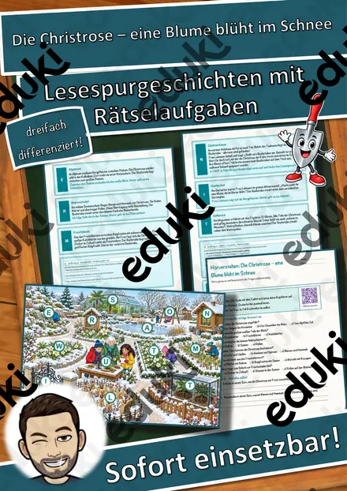
Die Christrose – eine Blume blüht im Schnee – Lesespurgeschichte mit Rätselaufgaben (Klasse 6)

Der Weihnachtsstern – eine Pflanze aus Mexiko – Lesespurgeschichte mit Rätselaufgaben (Klasse 5)

Kaninchen und Meerschweinchen artgerecht halten – Lesespurgeschichte mit Rätselaufgaben (Klasse 5)

Winterblues – warum uns im Winter das Licht fehlt – Lesespurgeschichte mit Rätselaufgaben (Klasse 8)

Erste Hilfe bei Kälte – Unterkühlung und Erfrierungen – Lesespurgeschichte mit Rätselaufgaben (Klasse 8)
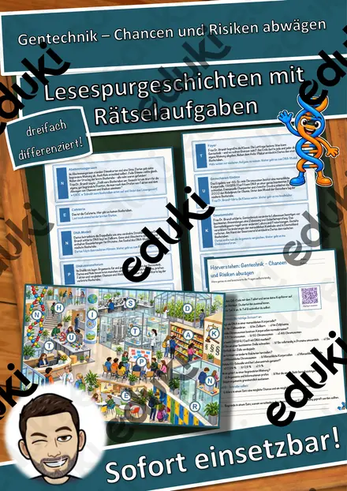
Gentechnik – Chancen und Risiken abwägen – Lesespurgeschichte mit Rätselaufgaben (Klasse 10)

Rauchen und Vapes – warum Nikotin abhängig macht – Lesespurgeschichte mit Rätselaufgaben (Klasse 7)

Organspende – eine Entscheidung fürs Leben – Lesespurgeschichte mit Rätselaufgaben (Klasse 7)

Das Vogelfutterhaus – Lesespurgeschichte mit Rätselaufgaben (Klasse 5)

Der Winterschlaf – Lesespurgeschichte mit Rätselaufgaben (Klasse 7)

Das Naturkundemuseum – Lesespurgeschichte mit Rätselaufgaben (Klasse 5)

Der Vogelzug – Lesespurgeschichte mit Rätselaufgaben (Klasse 7)

Die Kastanie – Lesespurgeschichte mit Rätselaufgaben (Klasse 5)

Die Kieme – Lesespurgeschichte mit Rätselaufgaben (Klasse 8)

Der Muskel – Lesespurgeschichte mit Rätselaufgaben (Klasse 8)

Die DNA – Lesespurgeschichte mit Rätselaufgaben (Klasse 9)

Der Zellkern – Lesespurgeschichte mit Rätselaufgaben (Klasse 9)

Das Vogelei – Lesespurgeschichte mit Rätselaufgaben (Klasse 8)

Das Mitochondrium – Lesespurgeschichte mit Rätselaufgaben (Klasse 9)

Die Hecke – Lesespurgeschichte mit Rätselaufgaben (Klasse 8)

Die Mangrove – Lesespurgeschichte mit Rätselaufgaben (Klasse 8)

Der Bergsee – Lesespurgeschichte mit Rätselaufgaben (Klasse 8)

Der Fliegenpilz – Lesespurgeschichte mit Rätselaufgaben (Klasse 8)

Der Dachs – Lesespurgeschichte mit Rätselaufgaben (Klasse 8)

Der Kranich – Lesespurgeschichte mit Rätselaufgaben (Klasse 8)

Das Reh – Lesespurgeschichte mit Rätselaufgaben (Klasse 8)

Die Amsel – Lesespurgeschichte mit Rätselaufgaben (Klasse 8)

Der Apfelbaum – Lesespurgeschichte mit Rätselaufgaben (Klasse 8)

Die Ameise – Lesespurgeschichte mit Rätselaufgaben (Klasse 8)

Die Eiche – Lesespurgeschichte mit Rätselaufgaben (Klasse 8)

Der Biber – Lesespurgeschichte mit Rätselaufgaben (Klasse 8)

Der Adler – Lesespurgeschichte mit Rätselaufgaben (Klasse 8)

Die Schildkröte – Lesespurgeschichte mit Rätselaufgaben (Klasse 8)

Der Hummer – Lesespurgeschichte mit Rätselaufgaben (Klasse 8)

Der Tintenfisch – Lesespurgeschichte mit Rätselaufgaben (Klasse 8)

Der Mais – Lesespurgeschichte mit Rätselaufgaben (Klasse 8)

Der Weizen – Lesespurgeschichte mit Rätselaufgaben (Klasse 8)

Der Bär – Lesespurgeschichte mit Rätselaufgaben (Klasse 8)

Die Erdkröte – Lesespurgeschichte mit Rätselaufgaben (Klasse 8)

Der Hirschkäfer – Lesespurgeschichte mit Rätselaufgaben (Klasse 8)

Das Wildschwein – Lesespurgeschichte mit Rätselaufgaben (Klasse 8)

Der Wolf – Lesespurgeschichte mit Rätselaufgaben (Klasse 8)

Der Hamster – Lesespurgeschichte mit Rätselaufgaben (Klasse 8)

Die Heuschrecke – Lesespurgeschichte mit Rätselaufgaben (Klasse 8)

Der Luchs – Lesespurgeschichte mit Rätselaufgaben (Klasse 8)

Der Lachs – Lesespurgeschichte mit Rätselaufgaben (Klasse 8)

Der Delfin – Lesespurgeschichte mit Rätselaufgaben (Klasse 8)

Der Hase – Lesespurgeschichte mit Rätselaufgaben (Klasse 8)

Die Sonnenblume – Lesespurgeschichte mit Rätselaufgaben (Klasse 8)

Der Feuersalamander – Lesespurgeschichte mit Rätselaufgaben (Klasse 8)

Der Hirsch – Lesespurgeschichte mit Rätselaufgaben (Klasse 8)

Der Fuchs – Lesespurgeschichte mit Rätselaufgaben (Klasse 8)

Der Kaktus – Lesespurgeschichte mit Rätselaufgaben (Klasse 8)

Der Storch – Lesespurgeschichte mit Rätselaufgaben (Klasse 8)

Das Chamäleon – Lesespurgeschichte mit Rätselaufgaben (Klasse 8)

Das Krokodil – Lesespurgeschichte mit Rätselaufgaben (Klasse 8)

Der Pinguin – Lesespurgeschichte mit Rätselaufgaben (Klasse 8)

Der Hai – Lesespurgeschichte mit Rätselaufgaben (Klasse 8)

Der Löwenzahn – Lesespurgeschichte mit Rätselaufgaben (Klasse 8)

Die Eule – Lesespurgeschichte mit Rätselaufgaben (Klasse 8)

Die Libelle – Lesespurgeschichte mit Rätselaufgaben (Klasse 8)

Die Muschel – Lesespurgeschichte mit Rätselaufgaben (Klasse 8)

Die Tierzelle – Lesespurgeschichte mit Rätselaufgaben (Klasse 8)

Der Dickdarm – Lesespurgeschichte mit Rätselaufgaben (Klasse 8)

Die Tulpe – Lesespurgeschichte mit Rätselaufgaben (Klasse 8)

Der Regenwurm – Lesespurgeschichte mit Rätselaufgaben (Klasse 8)

Der Dünndarm – Lesespurgeschichte mit Rätselaufgaben (Klasse 8)

Das Rückenmark – Lesespurgeschichte mit Rätselaufgaben (Klasse 9)

Der Kehlkopf – Lesespurgeschichte mit Rätselaufgaben (Klasse 8)

Der Zahn – Lesespurgeschichte mit Rätselaufgaben (Klasse 8)

Das Moor – Lesespurgeschichte mit Rätselaufgaben (Klasse 8)

Der Knochen – Lesespurgeschichte mit Rätselaufgaben (Klasse 8)

Der Komposthaufen – Lesespurgeschichte mit Rätselaufgaben (Klasse 8)

Die Pflanzenzelle – Lesespurgeschichte mit Rätselaufgaben (Klasse 8)

Das Bodenprofil – Lesespurgeschichte mit Rätselaufgaben (Klasse 8)

Die Kläranlage – Lesespurgeschichte mit Rätselaufgaben (Klasse 8)

Die Bakterienzelle – Lesespurgeschichte mit Rätselaufgaben (Klasse 8)

Die Bestäubung – Lesespurgeschichte mit Rätselaufgaben (Klasse 9)

Das Nervensystem – Lesespurgeschichte mit Rätselaufgaben (Klasse 9)

Die Lunge – Lesespurgeschichte mit Rätselaufgaben (Klasse 8)

Das Lymphsystem – Lesespurgeschichte mit Rätselaufgaben (Klasse 9)

Reiz und Reaktion – Lesespurgeschichte mit Rätselaufgaben (Klasse 9)

Der Schädel – Lesespurgeschichte mit Rätselaufgaben (Klasse 8)
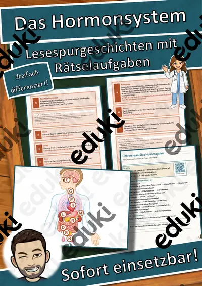
Das Hormonsystem – Lesespurgeschichte mit Rätselaufgaben (Klasse 9)

Die Fotosynthese – Lesespurgeschichte mit Rätselaufgaben (Klasse 8)

Der Magen – Lesespurgeschichte mit Rätselaufgaben (Klasse 8)

Die Wurzel – Lesespurgeschichte mit Rätselaufgaben (Klasse 8)

Die Bauchspeicheldrüse – Lesespurgeschichte mit Rätselaufgaben (Klasse 8)

Der Baumstamm – Lesespurgeschichte mit Rätselaufgaben (Klasse 8)

Die Zunge – Lesespurgeschichte mit Rätselaufgaben (Klasse 8)

Die Nase – Lesespurgeschichte mit Rätselaufgaben (Klasse 8)

Die Wirbelsäule – Lesespurgeschichte mit Rätselaufgaben (Klasse 8)

Das Kniegelenk – Lesespurgeschichte mit Rätselaufgaben (Klasse 8)

Das Herz – Lesespurgeschichte mit Rätselaufgaben (Klasse 8)
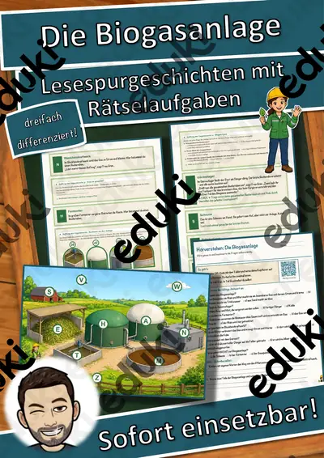
Die Biogasanlage – Lesespurgeschichte mit Rätselaufgaben (Klasse 9)

Die Biberburg – Lesespurgeschichte mit Rätselaufgaben (Klasse 8)

Der Ameisenhaufen – Lesespurgeschichte mit Rätselaufgaben (Klasse 8)
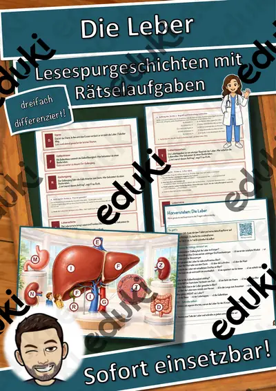
Die Leber – Lesespurgeschichte mit Rätselaufgaben (Klasse 9)

Die Haut – Lesespurgeschichte mit Rätselaufgaben (Klasse 8)

Der Kompost – Lesespurgeschichte mit Rätselaufgaben (Klasse 8)
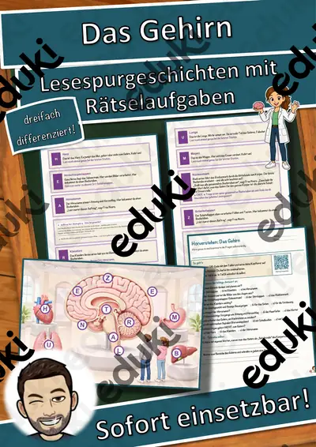
Das Gehirn – Lesespurgeschichte mit Rätselaufgaben (Klasse 9)
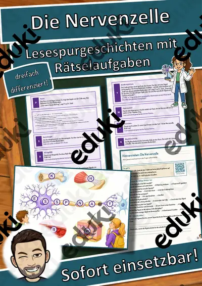
Die Nervenzelle – Lesespurgeschichte mit Rätselaufgaben (Klasse 9)

Das Korallenriff – Lesespurgeschichte mit Rätselaufgaben (Klasse 8)

Die Niere – Lesespurgeschichte mit Rätselaufgaben (Klasse 8)

Das Schaf – Lesespurgeschichte mit Rätselaufgaben (Klasse 5)

Der Specht – Lesespurgeschichte mit Rätselaufgaben (Klasse 5)

Die Kuh – Lesespurgeschichte mit Rätselaufgaben (Klasse 5)

Das Pferd – Lesespurgeschichte mit Rätselaufgaben (Klasse 5)

Die Kartoffel – Lesespurgeschichte mit Rätselaufgaben (Klasse 5)

Der Pilz – Lesespurgeschichte mit Rätselaufgaben (Klasse 5)

Der Maulwurf – Lesespurgeschichte mit Rätselaufgaben (Klasse 5)

Das Eichhörnchen – Lesespurgeschichte mit Rätselaufgaben (Klasse 5)

Die Ente – Lesespurgeschichte mit Rätselaufgaben (Klasse 5)

Die Schnecke – Lesespurgeschichte mit Rätselaufgaben (Klasse 5)

Die Fledermaus – Lesespurgeschichte mit Rätselaufgaben (Klasse 5)

Der Fisch – Lesespurgeschichte mit Rätselaufgaben (Klasse 5)

Die Biene – Lesespurgeschichte mit Rätselaufgaben (Klasse 5)

Die Spinne – Lesespurgeschichte mit Rätselaufgaben (Klasse 5)

Der Frosch – Lesespurgeschichte mit Rätselaufgaben (Klasse 5)

Das Blatt – Lesespurgeschichte mit Rätselaufgaben (Klasse 6)

Die Blüte – Lesespurgeschichte mit Rätselaufgaben (Klasse 6)

Das Immunsystem – Lesespurgeschichte mit Rätselaufgaben (Klasse 8)

Die Zähne – Lesespurgeschichte mit Rätselaufgaben (Klasse 7)

Die Vererbung – Lesespurgeschichte mit Rätselaufgaben (Klasse 9)

Die Zelle – Lesespurgeschichte mit Rätselaufgaben (Klasse 8)

Das Ohr – Lesespurgeschichte mit Rätselaufgaben (Klasse 7)

Das Auge – Lesespurgeschichte mit Rätselaufgaben (Klasse 7)

Die Muskeln – Lesespurgeschichte mit Rätselaufgaben (Klasse 7)
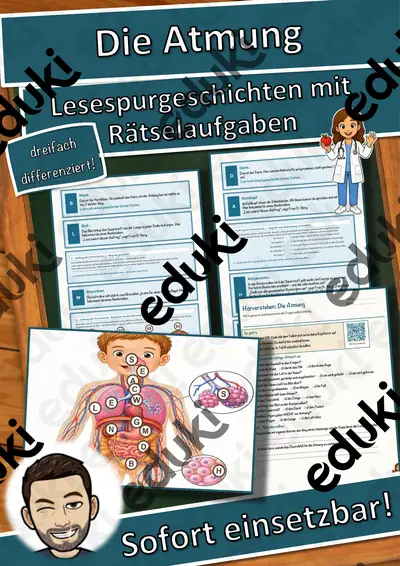
Die Atmung – Lesespurgeschichte mit Rätselaufgaben (Klasse 7)
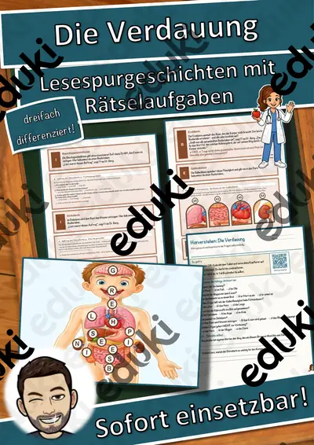
Die Verdauung – Lesespurgeschichte mit Rätselaufgaben (Klasse 7)
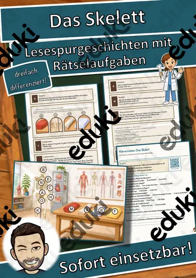
Das Skelett – Lesespurgeschichte mit Rätselaufgaben (Klasse 7)
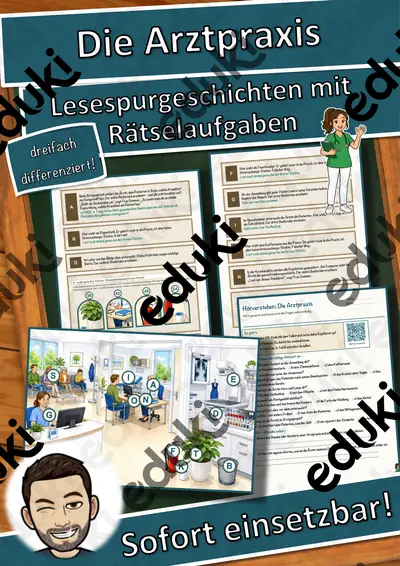
Die Arztpraxis – Ein Praktikum beim Arzt – Lesespurgeschichte mit Rätselaufgaben (Klasse 9)

Der Hund – ein treues Haustier – Lesespurgeschichte mit Rätselaufgaben (Klasse 5)

Die Pflanze – Vom Samen zur Frucht – Lesespurgeschichte mit Rätselaufgaben (Klasse 5)

Der Baum – Lesespurgeschichte mit Rätselaufgaben (Klasse 6)

Der Igel – Lesespurgeschichte mit Rätselaufgaben (Klasse 6)
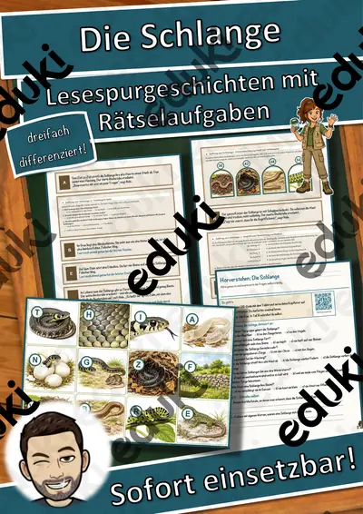
Die Schlange – Lesespurgeschichte mit Rätselaufgaben (Klasse 7)
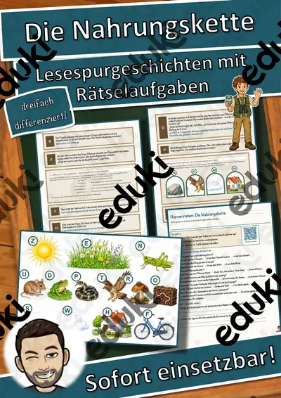
Die Nahrungskette – Lesespurgeschichte mit Rätselaufgaben (Klasse 7)
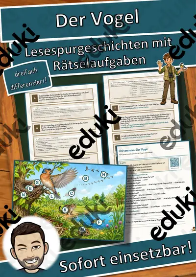
Der Vogel – Lesespurgeschichte mit Rätselaufgaben (Klasse 7)

Die Bakterien – Lesespurgeschichte mit Rätselaufgaben (Klasse 8)
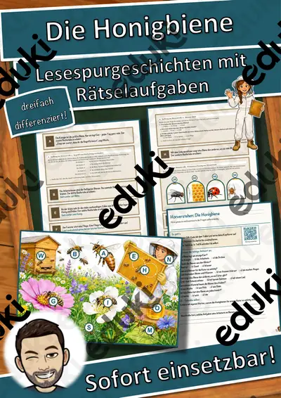
Die Honigbiene – Lesespurgeschichte mit Rätselaufgaben (Klasse 7)
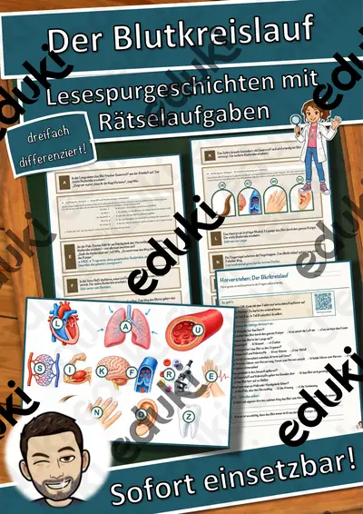
Der Blutkreislauf – Lesespurgeschichte mit Rätselaufgaben (Klasse 7)
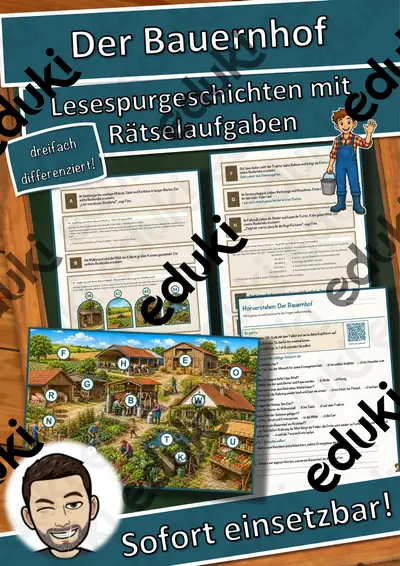
Der Bauernhof – Lesespurgeschichte mit Rätselaufgaben (Klasse 7)
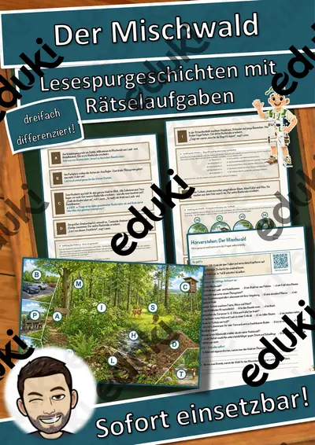
Der Mischwald – Lesespurgeschichte mit Rätselaufgaben (Klasse 7)

Die Umwelt-Detektive – Lesespurgeschichte mit Rätselaufgaben (Klasse 5)

Das Geheimnis der fünf Sinne – Lesespurgeschichte mit Rätselaufgaben (Klasse 5)

Das Geheimnis des Wattenmeers – Lesespurgeschichte mit Rätselaufgaben (Klasse 5)

Das Geheimnis des Teichs – Lesespurgeschichte mit Rätselaufgaben (Klasse 5)

Das Geheimnis des Waldes (Lebensraum Wald) – Lesespurgeschichte mit Rätselaufgaben (Klasse 5)

Die Niere – Prüfungstraining Biologie (Klasse 8)

Die Zähne – Prüfungstraining Biologie (Klasse 8)
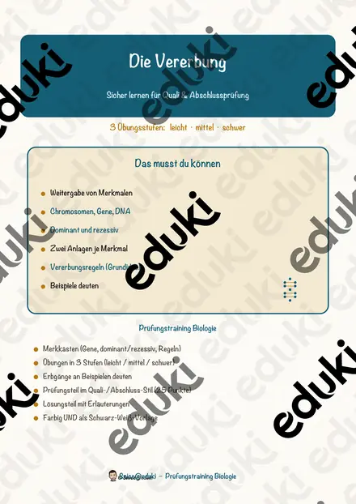
Die Vererbung – Prüfungstraining Biologie (Klasse 9)

Die Zelle – Prüfungstraining Biologie (Klasse 8)
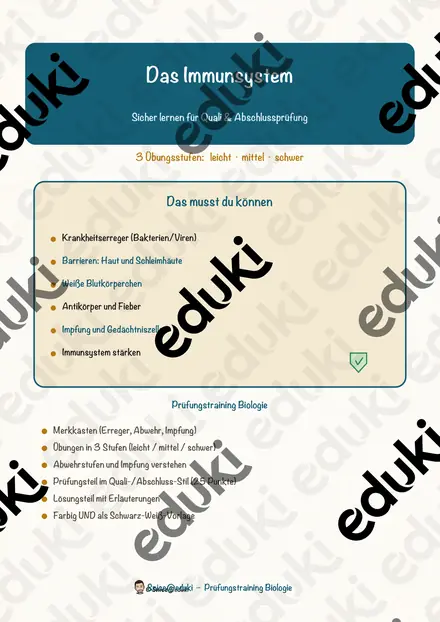
Das Immunsystem – Prüfungstraining Biologie (Klasse 9)

Die Muskeln – Prüfungstraining Biologie (Klasse 8)

Das Skelett – Prüfungstraining Biologie (Klasse 8)

Die Atmung – Prüfungstraining Biologie (Klasse 8)

Die Verdauung – Prüfungstraining Biologie (Klasse 8)

Das Ohr – Prüfungstraining Biologie (Klasse 8)

Das Auge – Prüfungstraining Biologie (Klasse 8)
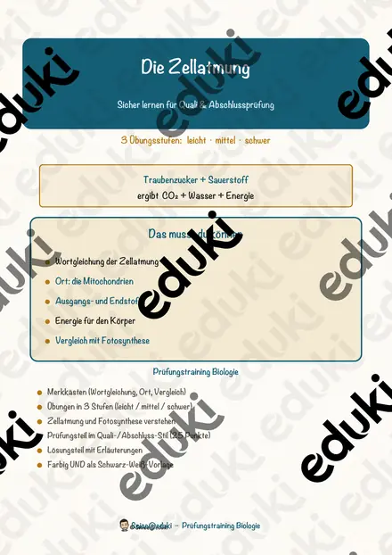
Die Zellatmung – Prüfungstraining Biologie (Klasse 9)

Der Umweltschutz – Prüfungstraining Biologie (Klasse 8)
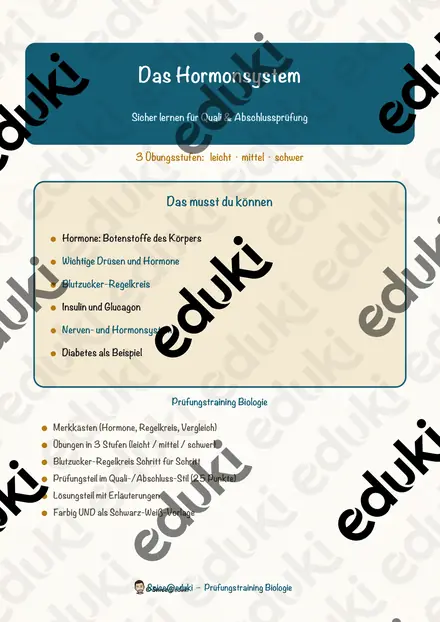
Das Hormonsystem – Prüfungstraining Biologie (Klasse 9)

Ernährung und Nährstoffe – Prüfungstraining Biologie (Klasse 8)
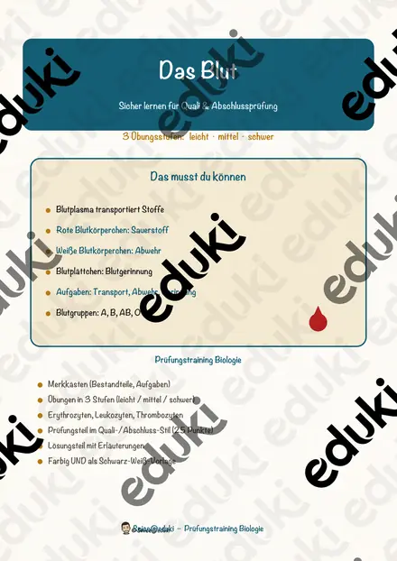
Das Blut – Prüfungstraining Biologie (Klasse 9)
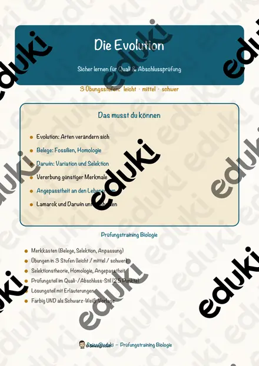
Die Evolution – Prüfungstraining Biologie (Klasse 9)

Das Herz – Prüfungstraining Biologie (Klasse 8)

Die Fotosynthese – Prüfungstraining Biologie (Klasse 8)

Das Ökosystem – Prüfungstraining Biologie (Klasse 8)

Waschbrett Lückentext mit Wortspeicher Hörverstehen und Suchsel

Röhrenglocken Lückentext mit Wortspeicher Hörverstehen und Suchsel

Kazoo Lückentext mit Wortspeicher Hörverstehen und Suchsel

Guiro Lückentext mit Wortspeicher Hörverstehen und Suchsel

Gong Lückentext mit Wortspeicher Hörverstehen und Suchsel

Drumcomputer Lückentext mit Wortspeicher Hörverstehen und Suchsel

Claves Lückentext mit Wortspeicher Hörverstehen und Suchsel

Zither Lückentext mit Wortspeicher Hörverstehen und Suchsel

Waldhorn Lückentext mit Wortspeicher Hörverstehen und Suchsel

Vuvuzela Lückentext mit Wortspeicher Hörverstehen und Suchsel

Vibraphon Lückentext mit Wortspeicher Hörverstehen und Suchsel

Triangel Lückentext mit Wortspeicher Hörverstehen und Suchsel

Theremin Lückentext mit Wortspeicher Hörverstehen und Suchsel

Tamtam Lückentext mit Wortspeicher Hörverstehen und Suchsel

Tamburin Lückentext mit Wortspeicher Hörverstehen und Suchsel

Tabla Lückentext mit Wortspeicher Hörverstehen und Suchsel

Synthesizer Lückentext mit Wortspeicher Hörverstehen und Suchsel

Steeldrum Lückentext mit Wortspeicher Hörverstehen und Suchsel

Sousaphon Lückentext mit Wortspeicher Hörverstehen und Suchsel

Sitar Lückentext mit Wortspeicher Hörverstehen und Suchsel

Schellenring Lückentext mit Wortspeicher Hörverstehen und Suchsel

Schellenkranz Lückentext mit Wortspeicher Hörverstehen und Suchsel

Schalmei Lückentext mit Wortspeicher Hörverstehen und Suchsel

Sackpfeife Lückentext mit Wortspeicher Hörverstehen und Suchsel

Röhrentrommel Lückentext mit Wortspeicher Hörverstehen und Suchsel

Rassel Lückentext mit Wortspeicher Hörverstehen und Suchsel

Rahmentrommel Lückentext mit Wortspeicher Hörverstehen und Suchsel

Panflöte Lückentext mit Wortspeicher Hörverstehen und Suchsel

Oud Lückentext mit Wortspeicher Hörverstehen und Suchsel

Okarina Lückentext mit Wortspeicher Hörverstehen und Suchsel

Nyckelharpa Lückentext mit Wortspeicher Hörverstehen und Suchsel

Mundharmonika Lückentext mit Wortspeicher Hörverstehen und Suchsel

Melodica Lückentext mit Wortspeicher Hörverstehen und Suchsel

Maultrommel Lückentext mit Wortspeicher Hörverstehen und Suchsel

Marimba Lückentext mit Wortspeicher Hörverstehen und Suchsel

Maracas Lückentext mit Wortspeicher Hörverstehen und Suchsel

Mandoline Lückentext mit Wortspeicher Hörverstehen und Suchsel

Leier Lückentext mit Wortspeicher Hörverstehen und Suchsel

Laute Lückentext mit Wortspeicher Hörverstehen und Suchsel

Kuhglocke Lückentext mit Wortspeicher Hörverstehen und Suchsel

Koto Lückentext mit Wortspeicher Hörverstehen und Suchsel

Kornett Lückentext mit Wortspeicher Hörverstehen und Suchsel

Konzertina Lückentext mit Wortspeicher Hörverstehen und Suchsel

Klangschale Lückentext mit Wortspeicher Hörverstehen und Suchsel

Kastagnetten Lückentext mit Wortspeicher Hörverstehen und Suchsel

Kalimba Lückentext mit Wortspeicher Hörverstehen und Suchsel

Harmonium Lückentext mit Wortspeicher Hörverstehen und Suchsel

Handpan Lückentext mit Wortspeicher Hörverstehen und Suchsel

Hackbrett Lückentext mit Wortspeicher Hörverstehen und Suchsel

Glockenspiel Lückentext mit Wortspeicher Hörverstehen und Suchsel

Gambe Lückentext mit Wortspeicher Hörverstehen und Suchsel

Flügelhorn Lückentext mit Wortspeicher Hörverstehen und Suchsel

Euphonium Lückentext mit Wortspeicher Hörverstehen und Suchsel

Erhu Lückentext mit Wortspeicher Hörverstehen und Suchsel

E-Gitarre Lückentext mit Wortspeicher Hörverstehen und Suchsel

E-Bass Lückentext mit Wortspeicher Hörverstehen und Suchsel

Drehleier Lückentext mit Wortspeicher Hörverstehen und Suchsel

Djembe Lückentext mit Wortspeicher Hörverstehen und Suchsel

Didgeridoo Lückentext mit Wortspeicher Hörverstehen und Suchsel

Darbuka Lückentext mit Wortspeicher Hörverstehen und Suchsel

Conga Lückentext mit Wortspeicher Hörverstehen und Suchsel

Charango Lückentext mit Wortspeicher Hörverstehen und Suchsel

Cembalo Lückentext mit Wortspeicher Hörverstehen und Suchsel

Celesta Lückentext mit Wortspeicher Hörverstehen und Suchsel

Cajon Lückentext mit Wortspeicher Hörverstehen und Suchsel

Bouzouki Lückentext mit Wortspeicher Hörverstehen und Suchsel

Bongo Lückentext mit Wortspeicher Hörverstehen und Suchsel

Becken Lückentext mit Wortspeicher Hörverstehen und Suchsel

Banjo Lückentext mit Wortspeicher Hörverstehen und Suchsel

Bandoneon Lückentext mit Wortspeicher Hörverstehen und Suchsel

Balalaika Lückentext mit Wortspeicher Hörverstehen und Suchsel

Alphorn Lückentext mit Wortspeicher Hörverstehen und Suchsel

Ukulele Lückentext mit Wortspeicher Hörverstehen und Suchsel

Cadmium Lückentext mit Wortspeicher Hörverstehen und Suchsel

Germanium Lückentext mit Wortspeicher Hörverstehen und Suchsel

Zink Lückentext mit Wortspeicher Hörverstehen und Suchsel

Tenness Lückentext mit Wortspeicher Hörverstehen und Suchsel

Livermorium Lückentext mit Wortspeicher Hörverstehen und Suchsel

Moscovium Lückentext mit Wortspeicher Hörverstehen und Suchsel

Flerovium Lückentext mit Wortspeicher Hörverstehen und Suchsel

Nihonium Lückentext mit Wortspeicher Hörverstehen und Suchsel

Copernicium Lückentext mit Wortspeicher Hörverstehen und Suchsel

Roentgenium Lückentext mit Wortspeicher Hörverstehen und Suchsel

Darmstadtium Lückentext mit Wortspeicher Hörverstehen und Suchsel

Meitnerium Lückentext mit Wortspeicher Hörverstehen und Suchsel

Hassium Lückentext mit Wortspeicher Hörverstehen und Suchsel

Bohrium Lückentext mit Wortspeicher Hörverstehen und Suchsel

Seaborgium Lückentext mit Wortspeicher Hörverstehen und Suchsel

Dubnium Lückentext mit Wortspeicher Hörverstehen und Suchsel

Rutherfordium Lückentext mit Wortspeicher Hörverstehen und Suchsel

Fermium Lückentext mit Wortspeicher Hörverstehen und Suchsel
Lawrencium Lückentext mit Wortspeicher Hörverstehen und Suchsel
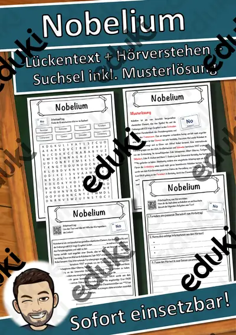
Nobelium Lückentext mit Wortspeicher Hörverstehen und Suchsel
Mendelevium Lückentext mit Wortspeicher Hörverstehen und Suchsel
Einsteinium Lückentext mit Wortspeicher Hörverstehen und Suchsel
Californium Lückentext mit Wortspeicher Hörverstehen und Suchsel
Berkelium Lückentext mit Wortspeicher Hörverstehen und Suchsel
Curium Lückentext mit Wortspeicher Hörverstehen und Suchsel
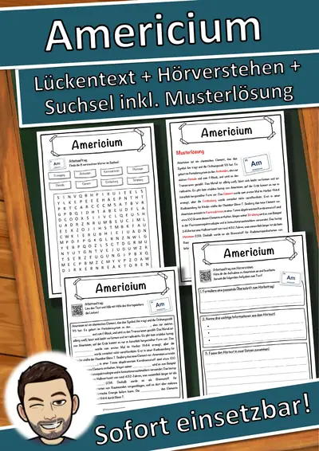
Americium Lückentext mit Wortspeicher Hörverstehen und Suchsel
Plutonium Lückentext mit Wortspeicher Hörverstehen und Suchsel
Rhodium Lückentext mit Wortspeicher Hörverstehen und Suchsel
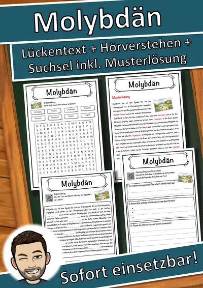
Molybdän Lückentext mit Wortspeicher Hörverstehen und Suchsel
Promethium Lückentext mit Wortspeicher Hörverstehen und Suchsel
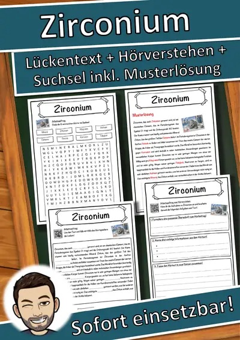
Zirconium Lückentext mit Wortspeicher Hörverstehen und Suchsel
Protactinium Lückentext mit Wortspeicher Hörverstehen und Suchsel
Actinium Lückentext mit Wortspeicher Hörverstehen und Suchsel
Gallium Lückentext mit Wortspeicher Hörverstehen und Suchsel
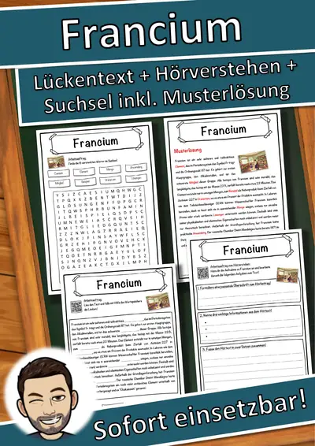
Francium Lückentext mit Wortspeicher Hörverstehen und Suchsel
Neptunium Lückentext mit Wortspeicher Hörverstehen und Suchsel
Thorium Lückentext mit Wortspeicher Hörverstehen und Suchsel
Radium Lückentext mit Wortspeicher Hörverstehen und Suchsel
Radon Lückentext mit Wortspeicher Hörverstehen und Suchsel
Polonium Lückentext mit Wortspeicher Hörverstehen und Suchsel
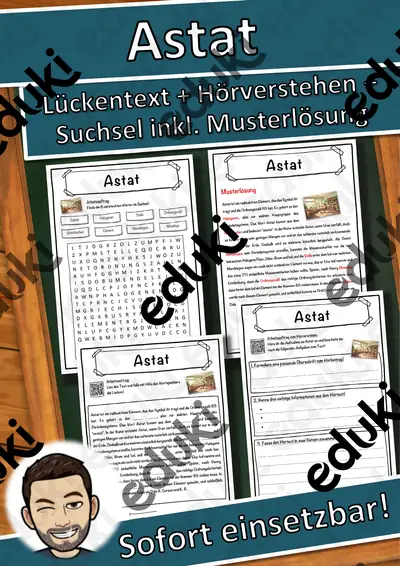
Astat Lückentext mit Wortspeicher Hörverstehen und Suchsel
Thallium Lückentext mit Wortspeicher Hörverstehen und Suchsel
Bismut Lückentext mit Wortspeicher Hörverstehen und Suchsel
Platin Lückentext mit Wortspeicher Hörverstehen und Suchsel
Iridium Lückentext mit Wortspeicher Hörverstehen und Suchsel
Osmium Lückentext mit Wortspeicher Hörverstehen und Suchsel
Rhenium Lückentext mit Wortspeicher Hörverstehen und Suchsel
Tantal Lückentext mit Wortspeicher Hörverstehen und Suchsel
Wolfram Lückentext mit Wortspeicher Hörverstehen und Suchsel
Hafnium Lückentext mit Wortspeicher Hörverstehen und Suchsel
Lutetium Lückentext mit Wortspeicher Hörverstehen und Suchsel
Thulium Lückentext mit Wortspeicher Hörverstehen und Suchsel
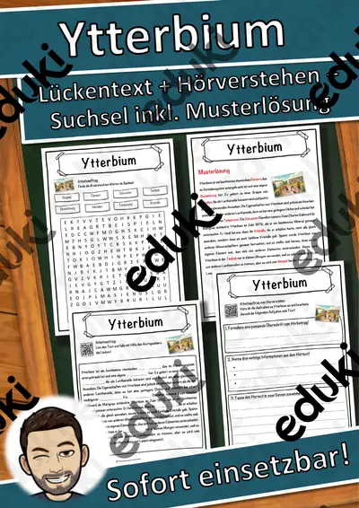
Ytterbium Lückentext mit Wortspeicher Hörverstehen und Suchsel
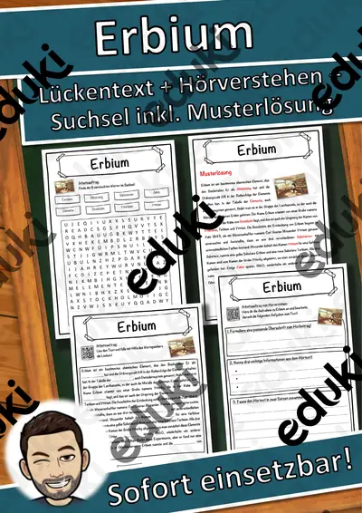
Erbium Lückentext mit Wortspeicher Hörverstehen und Suchsel
Dysprosium Lückentext mit Wortspeicher Hörverstehen und Suchsel
Holmium Lückentext mit Wortspeicher Hörverstehen und Suchsel
Terbium Lückentext mit Wortspeicher Hörverstehen und Suchsel
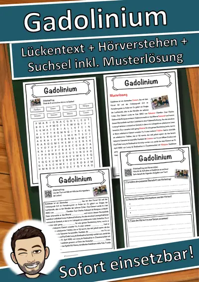
Gadolinium Lückentext mit Wortspeicher Hörverstehen und Suchsel
Europium Lückentext mit Wortspeicher Hörverstehen und Suchsel
Samarium Lückentext mit Wortspeicher Hörverstehen und Suchsel
Neodym Lückentext mit Wortspeicher Hörverstehen und Suchsel
Praseodym Lückentext mit Wortspeicher Hörverstehen und Suchsel
Lanthan Lückentext mit Wortspeicher Hörverstehen und Suchsel
Caesium Lückentext mit Wortspeicher Hörverstehen und Suchsel
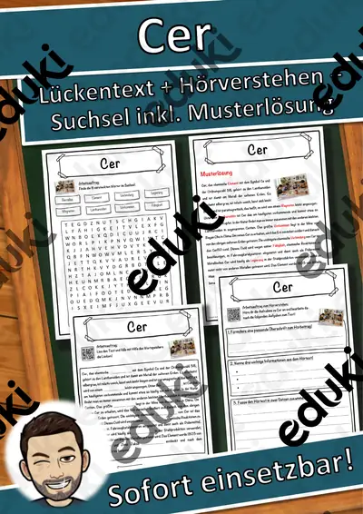
Cer Lückentext mit Wortspeicher Hörverstehen und Suchsel
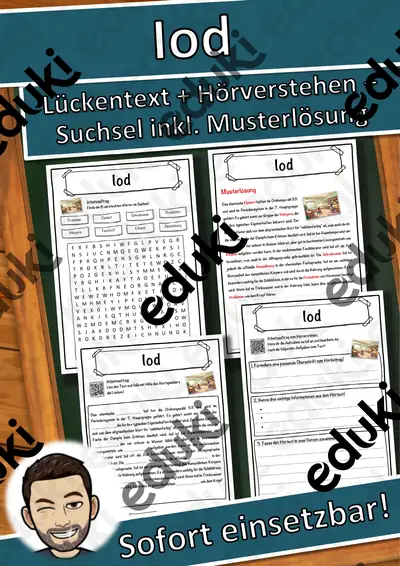
Iod Lückentext mit Wortspeicher Hörverstehen und Suchsel
Barium Lückentext mit Wortspeicher Hörverstehen und Suchsel
Antimon Lückentext mit Wortspeicher Hörverstehen und Suchsel
Indium Lückentext mit Wortspeicher Hörverstehen und Suchsel
Xenon Lückentext mit Wortspeicher Hörverstehen und Suchsel
Tellur Lückentext mit Wortspeicher Hörverstehen und Suchsel
Palladium Lückentext mit Wortspeicher Hörverstehen und Suchsel
Ruthenium Lückentext mit Wortspeicher Hörverstehen und Suchsel
Zinn Lückentext mit Wortspeicher Hörverstehen und Suchsel
Technetium Lückentext mit Wortspeicher Hörverstehen und Suchsel
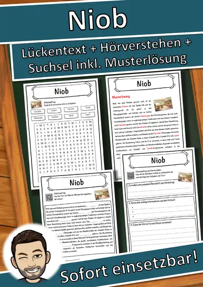
Niob Lückentext mit Wortspeicher Hörverstehen und Suchsel
Strontium Lückentext mit Wortspeicher Hörverstehen und Suchsel
Yttrium Lückentext mit Wortspeicher Hörverstehen und Suchsel
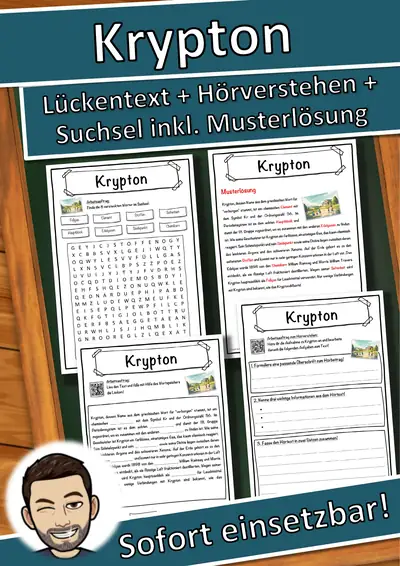
Krypton Lückentext mit Wortspeicher Hörverstehen und Suchsel
Selen Lückentext mit Wortspeicher Hörverstehen und Suchsel
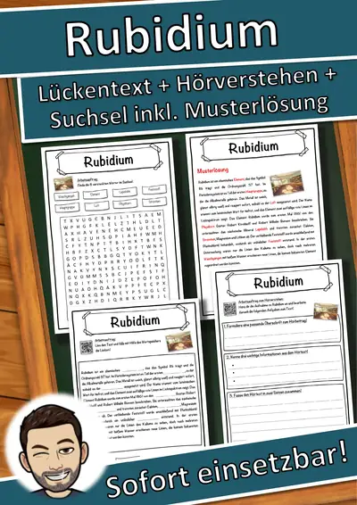
Rubidium Lückentext mit Wortspeicher Hörverstehen und Suchsel
Brom Lückentext mit Wortspeicher Hörverstehen und Suchsel
Arsen Lückentext mit Wortspeicher Hörverstehen und Suchsel
Cobalt Lückentext mit Wortspeicher Hörverstehen und Suchsel
Nickel Lückentext mit Wortspeicher Hörverstehen und Suchsel
Chrom Lückentext mit Wortspeicher Hörverstehen und Suchsel
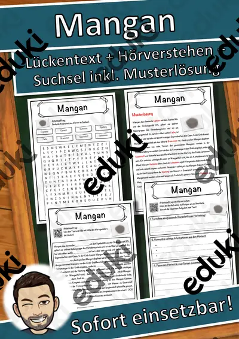
Mangan Lückentext mit Wortspeicher Hörverstehen und Suchsel
Titan Lückentext mit Wortspeicher Hörverstehen und Suchsel
Vanadium Lückentext mit Wortspeicher Hörverstehen und Suchsel
Scandium Lückentext mit Wortspeicher Hörverstehen und Suchsel
Calcium Lückentext mit Wortspeicher Hörverstehen und Suchsel
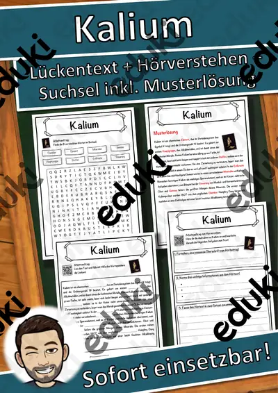
Kalium Lückentext mit Wortspeicher Hörverstehen und Suchsel
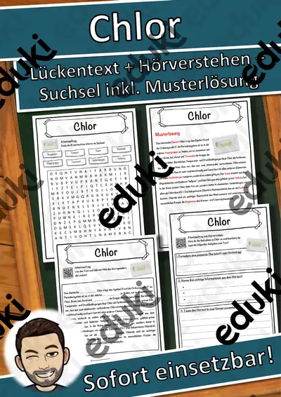
Chlor Lückentext mit Wortspeicher Hörverstehen und Suchsel
Oganesson Lückentext mit Wortspeicher Hörverstehen und Suchsel
Argon Lückentext mit Wortspeicher Hörverstehen und Suchsel
Silicium Lückentext mit Wortspeicher Hörverstehen und Suchsel
Natrium Lückentext mit Wortspeicher Hörverstehen und Suchsel
Fluor Lückentext mit Wortspeicher Hörverstehen und Suchsel
Beryllium Lückentext mit Wortspeicher Hörverstehen und Suchsel
Schwefel Lückentext mit Wortspeicher Hörverstehen und Suchsel
Magnesium Lückentext mit Wortspeicher Hörverstehen und Suchsel
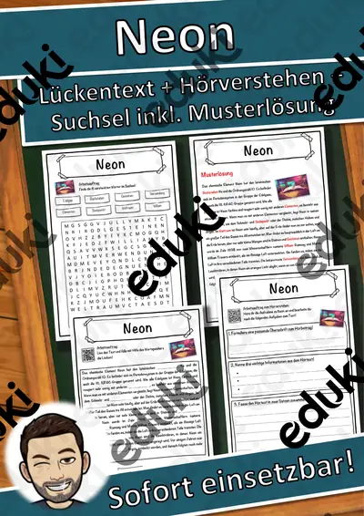
Neon Lückentext mit Wortspeicher Hörverstehen und Suchsel
Bor Lückentext mit Wortspeicher Hörverstehen und Suchsel
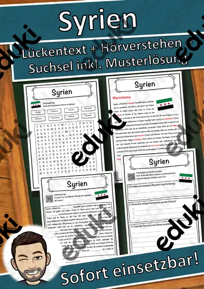
Syrien Lückentext mit Wortspeicher Hörverstehen und Suchsel
Suriname Lückentext mit Wortspeicher Hörverstehen und Suchsel
Südsudan Lückentext mit Wortspeicher Hörverstehen und Suchsel
Südkorea Lückentext mit Wortspeicher Hörverstehen und Suchsel
Südafrika Lückentext mit Wortspeicher Hörverstehen und Suchsel
São Tomé und Príncipe Lückentext mit Wortspeicher Hörverstehen und Suchsel
Pakistan Lückentext mit Wortspeicher Hörverstehen und Suchsel
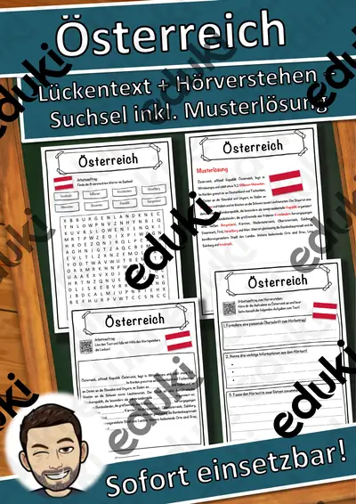
Österreich Lückentext mit Wortspeicher Hörverstehen und Suchsel
Norwegen Lückentext mit Wortspeicher Hörverstehen und Suchsel
Nordmazedonien Lückentext mit Wortspeicher Hörverstehen und Suchsel
Nordkorea Lückentext mit Wortspeicher Hörverstehen und Suchsel
Äthiopien Lückentext mit Wortspeicher Hörverstehen und Suchsel
Äquatorialguinea Lückentext mit Wortspeicher Hörverstehen und Suchsel
Ägypten Lückentext mit Wortspeicher Hörverstehen und Suchsel
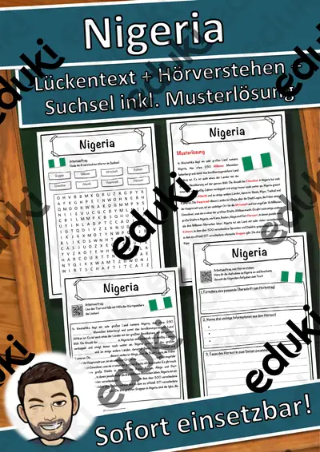
Nigeria Lückentext mit Wortspeicher Hörverstehen und Suchsel
Schotten Lückentext mit Wortspeicher Hörverstehen und Suchsel
Endingen am Kaiserstuhl Lückentext mit Wortspeicher Hörverstehen und Suchsel
Lichtenau Lückentext mit Wortspeicher Hörverstehen und Suchsel
Wildberg Lückentext mit Wortspeicher Hörverstehen und Suchsel
Eisenberg Lückentext mit Wortspeicher Hörverstehen und Suchsel
Rheinau Lückentext mit Wortspeicher Hörverstehen und Suchsel
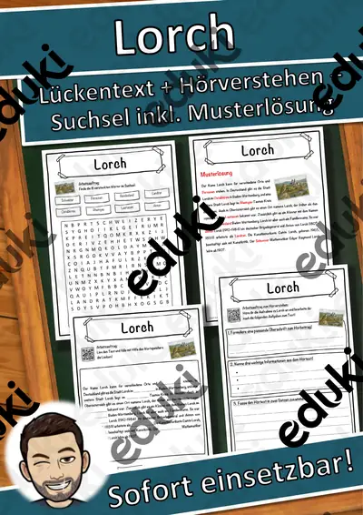
Lorch Lückentext mit Wortspeicher Hörverstehen und Suchsel
Steinheim Lückentext mit Wortspeicher Hörverstehen und Suchsel
Bad Freienwalde Lückentext mit Wortspeicher Hörverstehen und Suchsel
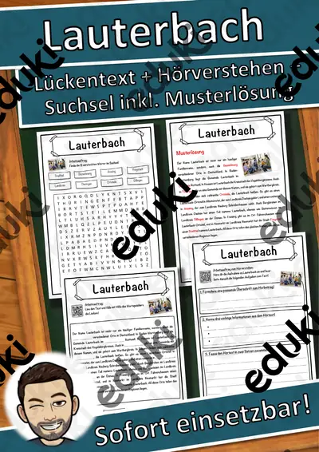
Lauterbach Lückentext mit Wortspeicher Hörverstehen und Suchsel
Krumbach Lückentext mit Wortspeicher Hörverstehen und Suchsel
Grünberg Lückentext mit Wortspeicher Hörverstehen und Suchsel
Erbach Lückentext mit Wortspeicher Hörverstehen und Suchsel
Schneeberg Lückentext mit Wortspeicher Hörverstehen und Suchsel
Brake Lückentext mit Wortspeicher Hörverstehen und Suchsel
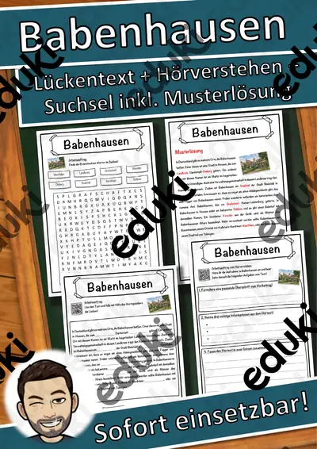
Babenhausen Lückentext mit Wortspeicher Hörverstehen und Suchsel
Damme Lückentext mit Wortspeicher Hörverstehen und Suchsel
Freudenberg Lückentext mit Wortspeicher Hörverstehen und Suchsel
Blankenburg Lückentext mit Wortspeicher Hörverstehen und Suchsel
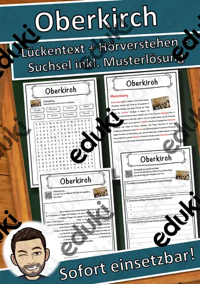
Oberkirch Lückentext mit Wortspeicher Hörverstehen und Suchsel
Waren Lückentext mit Wortspeicher Hörverstehen und Suchsel
Büren Lückentext mit Wortspeicher Hörverstehen und Suchsel
Rotenburg Lückentext mit Wortspeicher Hörverstehen und Suchsel
Senden Lückentext mit Wortspeicher Hörverstehen und Suchsel
Eisleben Lückentext mit Wortspeicher Hörverstehen und Suchsel
Haren Lückentext mit Wortspeicher Hörverstehen und Suchsel
Köthen Lückentext mit Wortspeicher Hörverstehen und Suchsel
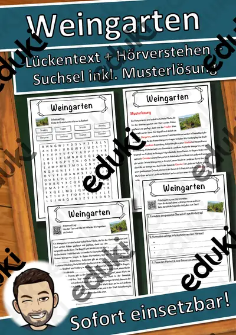
Weingarten Lückentext mit Wortspeicher Hörverstehen und Suchsel
Ellwangen Lückentext mit Wortspeicher Hörverstehen und Suchsel
Heppenheim Lückentext mit Wortspeicher Hörverstehen und Suchsel
Ehingen Lückentext mit Wortspeicher Hörverstehen und Suchsel
Lohne Lückentext mit Wortspeicher Hörverstehen und Suchsel
Sundern Lückentext mit Wortspeicher Hörverstehen und Suchsel
Leichlingen Lückentext mit Wortspeicher Hörverstehen und Suchsel
Kelkheim Lückentext mit Wortspeicher Hörverstehen und Suchsel
Schönebeck Lückentext mit Wortspeicher Hörverstehen und Suchsel
Naumburg Lückentext mit Wortspeicher Hörverstehen und Suchsel
Brühl Lückentext mit Wortspeicher Hörverstehen und Suchsel
Neunkirchen Lückentext mit Wortspeicher Hörverstehen und Suchsel
Oberursel Lückentext mit Wortspeicher Hörverstehen und Suchsel
Hennef Lückentext mit Wortspeicher Hörverstehen und Suchsel
Bornheim Lückentext mit Wortspeicher Hörverstehen und Suchsel
Gronau Lückentext mit Wortspeicher Hörverstehen und Suchsel
Frankenthal Lückentext mit Wortspeicher Hörverstehen und Suchsel
Stolberg Lückentext mit Wortspeicher Hörverstehen und Suchsel
Kempten Lückentext mit Wortspeicher Hörverstehen und Suchsel
Dinkelsbühl Lückentext mit Wortspeicher Hörverstehen und Suchsel
Bad Ems Lückentext mit Wortspeicher Hörverstehen und Suchsel
Wahlstedt Lückentext mit Wortspeicher Hörverstehen und Suchsel
Gudensberg Lückentext mit Wortspeicher Hörverstehen und Suchsel
Mittenwalde Lückentext mit Wortspeicher Hörverstehen und Suchsel
Gemünden am Main Lückentext mit Wortspeicher Hörverstehen und Suchsel
Bleicherode Lückentext mit Wortspeicher Hörverstehen und Suchsel
Rehburg-Loccum Lückentext mit Wortspeicher Hörverstehen und Suchsel
Mengen Lückentext mit Wortspeicher Hörverstehen und Suchsel
Querfurt Lückentext mit Wortspeicher Hörverstehen und Suchsel
Heubach Lückentext mit Wortspeicher Hörverstehen und Suchsel
Olbernhau Lückentext mit Wortspeicher Hörverstehen und Suchsel
Niebüll Lückentext mit Wortspeicher Hörverstehen und Suchsel
Neuenstadt am Kocher Lückentext mit Wortspeicher Hörverstehen und Suchsel
Steinau an der Straße Lückentext mit Wortspeicher Hörverstehen und Suchsel
Bad Lauterberg im Harz Lückentext mit Wortspeicher Hörverstehen und Suchsel
Nideggen Lückentext mit Wortspeicher Hörverstehen und Suchsel
Blumberg Lückentext mit Wortspeicher Hörverstehen und Suchsel
Burgstädt Lückentext mit Wortspeicher Hörverstehen und Suchsel
Flöha Lückentext mit Wortspeicher Hörverstehen und Suchsel
Nieder-Olm Lückentext mit Wortspeicher Hörverstehen und Suchsel
Büdelsdorf Lückentext mit Wortspeicher Hörverstehen und Suchsel
Grevesmühlen Lückentext mit Wortspeicher Hörverstehen und Suchsel
Simbach am Inn Lückentext mit Wortspeicher Hörverstehen und Suchsel
Bad Wildbad Lückentext mit Wortspeicher Hörverstehen und Suchsel
Schleusingen Lückentext mit Wortspeicher Hörverstehen und Suchsel
Neuenhaus Lückentext mit Wortspeicher Hörverstehen und Suchsel
Lollar Lückentext mit Wortspeicher Hörverstehen und Suchsel
Barmstedt Lückentext mit Wortspeicher Hörverstehen und Suchsel
Aichtal Lückentext mit Wortspeicher Hörverstehen und Suchsel
Bad Iburg Lückentext mit Wortspeicher Hörverstehen und Suchsel
Bad Orb Lückentext mit Wortspeicher Hörverstehen und Suchsel
Niddatal Lückentext mit Wortspeicher Hörverstehen und Suchsel
Hammelburg Lückentext mit Wortspeicher Hörverstehen und Suchsel
Bad Staffelstein Lückentext mit Wortspeicher Hörverstehen und Suchsel
Meuselwitz Lückentext mit Wortspeicher Hörverstehen und Suchsel
Langenzenn Lückentext mit Wortspeicher Hörverstehen und Suchsel
Oberzent Lückentext mit Wortspeicher Hörverstehen und Suchsel
Gengenbach Lückentext mit Wortspeicher Hörverstehen und Suchsel
Osterwieck Lückentext mit Wortspeicher Hörverstehen und Suchsel
Rüdesheim am Rhein Lückentext mit Wortspeicher Hörverstehen und Suchsel
Gernsheim Lückentext mit Wortspeicher Hörverstehen und Suchsel
Tangermünde Lückentext mit Wortspeicher Hörverstehen und Suchsel
Haigerloch Lückentext mit Wortspeicher Hörverstehen und Suchsel
Demmin Lückentext mit Wortspeicher Hörverstehen und Suchsel
Meßstetten Lückentext mit Wortspeicher Hörverstehen und Suchsel
Glückstadt Lückentext mit Wortspeicher Hörverstehen und Suchsel
Erlenbach am Main Lückentext mit Wortspeicher Hörverstehen und Suchsel
Braunfels Lückentext mit Wortspeicher Hörverstehen und Suchsel
Weilheim an der Teck Lückentext mit Wortspeicher Hörverstehen und Suchsel
Herbolzheim Lückentext mit Wortspeicher Hörverstehen und Suchsel
Betzdorf Lückentext mit Wortspeicher Hörverstehen und Suchsel
Mülheim-Kärlich Lückentext mit Wortspeicher Hörverstehen und Suchsel
Aulendorf Lückentext mit Wortspeicher Hörverstehen und Suchsel
Gräfenhainichen Lückentext mit Wortspeicher Hörverstehen und Suchsel
Gommern Lückentext mit Wortspeicher Hörverstehen und Suchsel
Ebersbach-Neugersdorf Lückentext mit Wortspeicher Hörverstehen und Suchsel
Tangerhütte Lückentext mit Wortspeicher Hörverstehen und Suchsel
Balve Lückentext mit Wortspeicher Hörverstehen und Suchsel
Werlte Lückentext mit Wortspeicher Hörverstehen und Suchsel
Geisenfeld Lückentext mit Wortspeicher Hörverstehen und Suchsel
Bischofswerda Lückentext mit Wortspeicher Hörverstehen und Suchsel
Bad Belzig Lückentext mit Wortspeicher Hörverstehen und Suchsel
Walldürn Lückentext mit Wortspeicher Hörverstehen und Suchsel
Isselburg Lückentext mit Wortspeicher Hörverstehen und Suchsel
Dissen am Teutoburger Wald Lückentext mit Wortspeicher Hörverstehen und Suchsel
Leingarten Lückentext mit Wortspeicher Hörverstehen und Suchsel
Dingelstädt Lückentext mit Wortspeicher Hörverstehen und Suchsel
Wolmirstedt Lückentext mit Wortspeicher Hörverstehen und Suchsel
Gronau (Leine) Lückentext mit Wortspeicher Hörverstehen und Suchsel
Neuenrade Lückentext mit Wortspeicher Hörverstehen und Suchsel
Hemsbach Lückentext mit Wortspeicher Hörverstehen und Suchsel
Trostberg Lückentext mit Wortspeicher Hörverstehen und Suchsel
Oberderdingen Lückentext mit Wortspeicher Hörverstehen und Suchsel
Hildburghausen Lückentext mit Wortspeicher Hörverstehen und Suchsel
Steinheim an der Murr Lückentext mit Wortspeicher Hörverstehen und Suchsel
Marktheidenfeld Lückentext mit Wortspeicher Hörverstehen und Suchsel
Frohburg Lückentext mit Wortspeicher Hörverstehen und Suchsel
Altensteig Lückentext mit Wortspeicher Hörverstehen und Suchsel
Drolshagen Lückentext mit Wortspeicher Hörverstehen und Suchsel
Wildau Lückentext mit Wortspeicher Hörverstehen und Suchsel
Hauzenberg Lückentext mit Wortspeicher Hörverstehen und Suchsel
Hagenow Lückentext mit Wortspeicher Hörverstehen und Suchsel
Billerbeck Lückentext mit Wortspeicher Hörverstehen und Suchsel
Kenzingen Lückentext mit Wortspeicher Hörverstehen und Suchsel
Titisee-Neustadt Lückentext mit Wortspeicher Hörverstehen und Suchsel
Pößneck Lückentext mit Wortspeicher Hörverstehen und Suchsel
Zella-Mehlis Lückentext mit Wortspeicher Hörverstehen und Suchsel
Monschau Lückentext mit Wortspeicher Hörverstehen und Suchsel
Rutesheim Lückentext mit Wortspeicher Hörverstehen und Suchsel
Waltershausen Lückentext mit Wortspeicher Hörverstehen und Suchsel
Erkner Lückentext mit Wortspeicher Hörverstehen und Suchsel
Waldkirchen Lückentext mit Wortspeicher Hörverstehen und Suchsel
Röthenbach an der Pegnitz Lückentext mit Wortspeicher Hörverstehen und Suchsel
Riedlingen Lückentext mit Wortspeicher Hörverstehen und Suchsel
Osterhofen Lückentext mit Wortspeicher Hörverstehen und Suchsel
Welzheim Lückentext mit Wortspeicher Hörverstehen und Suchsel
Maxhütte-Haidhof Lückentext mit Wortspeicher Hörverstehen und Suchsel
Wittingen Lückentext mit Wortspeicher Hörverstehen und Suchsel
Gaildorf Lückentext mit Wortspeicher Hörverstehen und Suchsel
Ochsenfurt Lückentext mit Wortspeicher Hörverstehen und Suchsel
Ludwigslust Lückentext mit Wortspeicher Hörverstehen und Suchsel
Bad Schwalbach Lückentext mit Wortspeicher Hörverstehen und Suchsel
Laichingen Lückentext mit Wortspeicher Hörverstehen und Suchsel
Bopfingen Lückentext mit Wortspeicher Hörverstehen und Suchsel
Neuenburg am Rhein Lückentext mit Wortspeicher Hörverstehen und Suchsel
Bad Urach Lückentext mit Wortspeicher Hörverstehen und Suchsel
Schwaigern Lückentext mit Wortspeicher Hörverstehen und Suchsel
Gladenbach Lückentext mit Wortspeicher Hörverstehen und Suchsel
Lindenberg im Allgäu Lückentext mit Wortspeicher Hörverstehen und Suchsel
Herzberg am Harz Lückentext mit Wortspeicher Hörverstehen und Suchsel
Ladenburg Lückentext mit Wortspeicher Hörverstehen und Suchsel
Feuchtwangen Lückentext mit Wortspeicher Hörverstehen und Suchsel
Geisenheim Lückentext mit Wortspeicher Hörverstehen und Suchsel
Sulz am Neckar Lückentext mit Wortspeicher Hörverstehen und Suchsel
Rödental Lückentext mit Wortspeicher Hörverstehen und Suchsel
Bad Dürrenberg Lückentext mit Wortspeicher Hörverstehen und Suchsel
Hungen Lückentext mit Wortspeicher Hörverstehen und Suchsel
Lauffen am Neckar Lückentext mit Wortspeicher Hörverstehen und Suchsel
Möckern Lückentext mit Wortspeicher Hörverstehen und Suchsel
Hadamar Lückentext mit Wortspeicher Hörverstehen und Suchsel
Neustadt in Sachsen Lückentext mit Wortspeicher Hörverstehen und Suchsel
Twistringen Lückentext mit Wortspeicher Hörverstehen und Suchsel
Perleberg Lückentext mit Wortspeicher Hörverstehen und Suchsel
Linnich Lückentext mit Wortspeicher Hörverstehen und Suchsel
Bad Fallingbostel Lückentext mit Wortspeicher Hörverstehen und Suchsel
Bad Doberan Lückentext mit Wortspeicher Hörverstehen und Suchsel
Burladingen Lückentext mit Wortspeicher Hörverstehen und Suchsel
Treuchtlingen Lückentext mit Wortspeicher Hörverstehen und Suchsel
Roding Lückentext mit Wortspeicher Hörverstehen und Suchsel
Beverungen Lückentext mit Wortspeicher Hörverstehen und Suchsel
Wernau (Neckar) Lückentext mit Wortspeicher Hörverstehen und Suchsel
Velen Lückentext mit Wortspeicher Hörverstehen und Suchsel
Preußisch Oldendorf Lückentext mit Wortspeicher Hörverstehen und Suchsel
Zehdenick Lückentext mit Wortspeicher Hörverstehen und Suchsel
Bad Wünnenberg Lückentext mit Wortspeicher Hörverstehen und Suchsel
Bad Laasphe Lückentext mit Wortspeicher Hörverstehen und Suchsel
Vilsbiburg Lückentext mit Wortspeicher Hörverstehen und Suchsel
Weilburg Lückentext mit Wortspeicher Hörverstehen und Suchsel
Wiesmoor Lückentext mit Wortspeicher Hörverstehen und Suchsel
Blaubeuren Lückentext mit Wortspeicher Hörverstehen und Suchsel
Dinklage Lückentext mit Wortspeicher Hörverstehen und Suchsel
Eppstein Lückentext mit Wortspeicher Hörverstehen und Suchsel
Velten Lückentext mit Wortspeicher Hörverstehen und Suchsel
Hettstedt Lückentext mit Wortspeicher Hörverstehen und Suchsel
Pfullendorf Lückentext mit Wortspeicher Hörverstehen und Suchsel
Schmölln Lückentext mit Wortspeicher Hörverstehen und Suchsel
Pfarrkirchen Lückentext mit Wortspeicher Hörverstehen und Suchsel
Hersbruck Lückentext mit Wortspeicher Hörverstehen und Suchsel
Neckargemünd Lückentext mit Wortspeicher Hörverstehen und Suchsel
Sendenhorst Lückentext mit Wortspeicher Hörverstehen und Suchsel
Bergen auf Rügen Lückentext mit Wortspeicher Hörverstehen und Suchsel
Besigheim Lückentext mit Wortspeicher Hörverstehen und Suchsel
Beelitz Lückentext mit Wortspeicher Hörverstehen und Suchsel
Wanzleben-Börde Lückentext mit Wortspeicher Hörverstehen und Suchsel
Löningen Lückentext mit Wortspeicher Hörverstehen und Suchsel
Wächtersbach Lückentext mit Wortspeicher Hörverstehen und Suchsel
Bad Dürrheim Lückentext mit Wortspeicher Hörverstehen und Suchsel
Wasserburg am Inn Lückentext mit Wortspeicher Hörverstehen und Suchsel
Meerane Lückentext mit Wortspeicher Hörverstehen und Suchsel
Holzgerlingen Lückentext mit Wortspeicher Hörverstehen und Suchsel
Rosbach vor der Höhe Lückentext mit Wortspeicher Hörverstehen und Suchsel
Philippsburg Lückentext mit Wortspeicher Hörverstehen und Suchsel
Schleiden Lückentext mit Wortspeicher Hörverstehen und Suchsel
Olfen Lückentext mit Wortspeicher Hörverstehen und Suchsel
Schüttorf Lückentext mit Wortspeicher Hörverstehen und Suchsel
Lauchhammer Lückentext mit Wortspeicher Hörverstehen und Suchsel
Sulingen Lückentext mit Wortspeicher Hörverstehen und Suchsel
Jessen (Elster) Lückentext mit Wortspeicher Hörverstehen und Suchsel
Oebisfelde-Weferlingen Lückentext mit Wortspeicher Hörverstehen und Suchsel
Ettenheim Lückentext mit Wortspeicher Hörverstehen und Suchsel
Bad Salzdetfurth Lückentext mit Wortspeicher Hörverstehen und Suchsel
Schwentinental Lückentext mit Wortspeicher Hörverstehen und Suchsel
Tauberbischofsheim Lückentext mit Wortspeicher Hörverstehen und Suchsel
Lorsch Lückentext mit Wortspeicher Hörverstehen und Suchsel
Hilpoltstein Lückentext mit Wortspeicher Hörverstehen und Suchsel
Haselünne Lückentext mit Wortspeicher Hörverstehen und Suchsel
Lübben (Spreewald) Lückentext mit Wortspeicher Hörverstehen und Suchsel
Leuna Lückentext mit Wortspeicher Hörverstehen und Suchsel
Biedenkopf Lückentext mit Wortspeicher Hörverstehen und Suchsel
Rotenburg an der Fulda Lückentext mit Wortspeicher Hörverstehen und Suchsel
Angermünde Lückentext mit Wortspeicher Hörverstehen und Suchsel
Kalkar Lückentext mit Wortspeicher Hörverstehen und Suchsel
Aßlar Lückentext mit Wortspeicher Hörverstehen und Suchsel
Murrhardt Lückentext mit Wortspeicher Hörverstehen und Suchsel
Weißenhorn Lückentext mit Wortspeicher Hörverstehen und Suchsel
Spaichingen Lückentext mit Wortspeicher Hörverstehen und Suchsel
Zeven Lückentext mit Wortspeicher Hörverstehen und Suchsel
Melsungen Lückentext mit Wortspeicher Hörverstehen und Suchsel
Asperg Lückentext mit Wortspeicher Hörverstehen und Suchsel
Uslar Lückentext mit Wortspeicher Hörverstehen und Suchsel
Bebra Lückentext mit Wortspeicher Hörverstehen und Suchsel
Sandersdorf-Brehna Lückentext mit Wortspeicher Hörverstehen und Suchsel
Dippoldiswalde Lückentext mit Wortspeicher Hörverstehen und Suchsel
Gernsbach Lückentext mit Wortspeicher Hörverstehen und Suchsel
Quakenbrück Lückentext mit Wortspeicher Hörverstehen und Suchsel
Eberbach Lückentext mit Wortspeicher Hörverstehen und Suchsel
Bad Soden-Salmünster Lückentext mit Wortspeicher Hörverstehen und Suchsel
Sassenberg Lückentext mit Wortspeicher Hörverstehen und Suchsel
Haßfurt Lückentext mit Wortspeicher Hörverstehen und Suchsel
Tornesch Lückentext mit Wortspeicher Hörverstehen und Suchsel
Immenstadt im Allgäu Lückentext mit Wortspeicher Hörverstehen und Suchsel
Höchstadt an der Aisch Lückentext mit Wortspeicher Hörverstehen und Suchsel
Plattling Lückentext mit Wortspeicher Hörverstehen und Suchsel
Montabaur Lückentext mit Wortspeicher Hörverstehen und Suchsel
Oschatz Lückentext mit Wortspeicher Hörverstehen und Suchsel
Grafing bei München Lückentext mit Wortspeicher Hörverstehen und Suchsel
Buchloe Lückentext mit Wortspeicher Hörverstehen und Suchsel
Homberg (Efze) Lückentext mit Wortspeicher Hörverstehen und Suchsel
Landau an der Isar Lückentext mit Wortspeicher Hörverstehen und Suchsel
Uhingen Lückentext mit Wortspeicher Hörverstehen und Suchsel
Mittweida Lückentext mit Wortspeicher Hörverstehen und Suchsel
Burglengenfeld Lückentext mit Wortspeicher Hörverstehen und Suchsel
Jever Lückentext mit Wortspeicher Hörverstehen und Suchsel
Bad Camberg Lückentext mit Wortspeicher Hörverstehen und Suchsel
Plochingen Lückentext mit Wortspeicher Hörverstehen und Suchsel
Bad Wurzach Lückentext mit Wortspeicher Hörverstehen und Suchsel
Neu-Anspach Lückentext mit Wortspeicher Hörverstehen und Suchsel
Wilsdruff Lückentext mit Wortspeicher Hörverstehen und Suchsel
Löbau Lückentext mit Wortspeicher Hörverstehen und Suchsel
Langenselbold Lückentext mit Wortspeicher Hörverstehen und Suchsel
Markdorf Lückentext mit Wortspeicher Hörverstehen und Suchsel
Pattensen Lückentext mit Wortspeicher Hörverstehen und Suchsel
Langelsheim Lückentext mit Wortspeicher Hörverstehen und Suchsel
Hilchenbach Lückentext mit Wortspeicher Hörverstehen und Suchsel
Olsberg Lückentext mit Wortspeicher Hörverstehen und Suchsel
Gehrden Lückentext mit Wortspeicher Hörverstehen und Suchsel
Ratzeburg Lückentext mit Wortspeicher Hörverstehen und Suchsel
Hückeswagen Lückentext mit Wortspeicher Hörverstehen und Suchsel
Blomberg Lückentext mit Wortspeicher Hörverstehen und Suchsel
Lauda-Königshofen Lückentext mit Wortspeicher Hörverstehen und Suchsel
Mainburg Lückentext mit Wortspeicher Hörverstehen und Suchsel
Schwabmünchen Lückentext mit Wortspeicher Hörverstehen und Suchsel
Neutraubling Lückentext mit Wortspeicher Hörverstehen und Suchsel
Boppard Lückentext mit Wortspeicher Hörverstehen und Suchsel
Hofgeismar Lückentext mit Wortspeicher Hörverstehen und Suchsel
Markgröningen Lückentext mit Wortspeicher Hörverstehen und Suchsel
Oberndorf am Neckar Lückentext mit Wortspeicher Hörverstehen und Suchsel
Ribnitz-Damgarten Lückentext mit Wortspeicher Hörverstehen und Suchsel
Selb Lückentext mit Wortspeicher Hörverstehen und Suchsel
Taucha Lückentext mit Wortspeicher Hörverstehen und Suchsel
Isny im Allgäu Lückentext mit Wortspeicher Hörverstehen und Suchsel
Rahden Lückentext mit Wortspeicher Hörverstehen und Suchsel
Schriesheim Lückentext mit Wortspeicher Hörverstehen und Suchsel
Usingen Lückentext mit Wortspeicher Hörverstehen und Suchsel
Finsterwalde Lückentext mit Wortspeicher Hörverstehen und Suchsel
Fritzlar Lückentext mit Wortspeicher Hörverstehen und Suchsel
Dorfen Lückentext mit Wortspeicher Hörverstehen und Suchsel
Clausthal-Zellerfeld Lückentext mit Wortspeicher Hörverstehen und Suchsel
Walldorf Lückentext mit Wortspeicher Hörverstehen und Suchsel
Ober-Ramstadt Lückentext mit Wortspeicher Hörverstehen und Suchsel
Eppelheim Lückentext mit Wortspeicher Hörverstehen und Suchsel
Munster Lückentext mit Wortspeicher Hörverstehen und Suchsel
Templin Lückentext mit Wortspeicher Hörverstehen und Suchsel
Füssen Lückentext mit Wortspeicher Hörverstehen und Suchsel
Bad Bramstedt Lückentext mit Wortspeicher Hörverstehen und Suchsel
Bad Neustadt an der Saale Lückentext mit Wortspeicher Hörverstehen und Suchsel
Wendlingen am Neckar Lückentext mit Wortspeicher Hörverstehen und Suchsel
Altdorf bei Nürnberg Lückentext mit Wortspeicher Hörverstehen und Suchsel
Schwalbach am Taunus Lückentext mit Wortspeicher Hörverstehen und Suchsel
Ebersbach an der Fils Lückentext mit Wortspeicher Hörverstehen und Suchsel
Stadtbergen Lückentext mit Wortspeicher Hörverstehen und Suchsel
Wadern Lückentext mit Wortspeicher Hörverstehen und Suchsel
Dieburg Lückentext mit Wortspeicher Hörverstehen und Suchsel
Drensteinfurt Lückentext mit Wortspeicher Hörverstehen und Suchsel
Michelstadt Lückentext mit Wortspeicher Hörverstehen und Suchsel
Langenau Lückentext mit Wortspeicher Hörverstehen und Suchsel
Eilenburg Lückentext mit Wortspeicher Hörverstehen und Suchsel
Breisach am Rhein Lückentext mit Wortspeicher Hörverstehen und Suchsel
Mindelheim Lückentext mit Wortspeicher Hörverstehen und Suchsel
Schlüchtern Lückentext mit Wortspeicher Hörverstehen und Suchsel
Zeulenroda-Triebes Lückentext mit Wortspeicher Hörverstehen und Suchsel
Brakel Lückentext mit Wortspeicher Hörverstehen und Suchsel
Bad Arolsen Lückentext mit Wortspeicher Hörverstehen und Suchsel
Erlensee Lückentext mit Wortspeicher Hörverstehen und Suchsel
Kierspe Lückentext mit Wortspeicher Hörverstehen und Suchsel
Alsfeld Lückentext mit Wortspeicher Hörverstehen und Suchsel
Künzelsau Lückentext mit Wortspeicher Hörverstehen und Suchsel
Marbach am Neckar Lückentext mit Wortspeicher Hörverstehen und Suchsel
Markranstädt Lückentext mit Wortspeicher Hörverstehen und Suchsel
Straelen Lückentext mit Wortspeicher Hörverstehen und Suchsel
Freiberg am Neckar Lückentext mit Wortspeicher Hörverstehen und Suchsel
Preetz Lückentext mit Wortspeicher Hörverstehen und Suchsel
Blaustein Lückentext mit Wortspeicher Hörverstehen und Suchsel
Altena Lückentext mit Wortspeicher Hörverstehen und Suchsel
Guben Lückentext mit Wortspeicher Hörverstehen und Suchsel
Bad Bentheim Lückentext mit Wortspeicher Hörverstehen und Suchsel
Brackenheim Lückentext mit Wortspeicher Hörverstehen und Suchsel
Halver Lückentext mit Wortspeicher Hörverstehen und Suchsel
Erwitte Lückentext mit Wortspeicher Hörverstehen und Suchsel
Bad Lippspringe Lückentext mit Wortspeicher Hörverstehen und Suchsel
Bargteheide Lückentext mit Wortspeicher Hörverstehen und Suchsel
Raunheim Lückentext mit Wortspeicher Hörverstehen und Suchsel
Eltville am Rhein Lückentext mit Wortspeicher Hörverstehen und Suchsel
Pocking Lückentext mit Wortspeicher Hörverstehen und Suchsel
Bendorf Lückentext mit Wortspeicher Hörverstehen und Suchsel
Königstein im Taunus Lückentext mit Wortspeicher Hörverstehen und Suchsel
Oerlinghausen Lückentext mit Wortspeicher Hörverstehen und Suchsel
Penzberg Lückentext mit Wortspeicher Hörverstehen und Suchsel
Wurzen Lückentext mit Wortspeicher Hörverstehen und Suchsel
Hünfeld Lückentext mit Wortspeicher Hörverstehen und Suchsel
Kamenz Lückentext mit Wortspeicher Hörverstehen und Suchsel
Marktredwitz Lückentext mit Wortspeicher Hörverstehen und Suchsel
Sinzig Lückentext mit Wortspeicher Hörverstehen und Suchsel
Eutin Lückentext mit Wortspeicher Hörverstehen und Suchsel
Gescher Lückentext mit Wortspeicher Hörverstehen und Suchsel
Wittenberge Lückentext mit Wortspeicher Hörverstehen und Suchsel
Schwarzenbek Lückentext mit Wortspeicher Hörverstehen und Suchsel
Ginsheim-Gustavsburg Lückentext mit Wortspeicher Hörverstehen und Suchsel
Heilbad Heiligenstadt Lückentext mit Wortspeicher Hörverstehen und Suchsel
Stockach Lückentext mit Wortspeicher Hörverstehen und Suchsel
Bad Wildungen Lückentext mit Wortspeicher Hörverstehen und Suchsel
Horn-Bad Meinberg Lückentext mit Wortspeicher Hörverstehen und Suchsel
Garching bei München Lückentext mit Wortspeicher Hörverstehen und Suchsel
Remagen Lückentext mit Wortspeicher Hörverstehen und Suchsel
Bad Münstereifel Lückentext mit Wortspeicher Hörverstehen und Suchsel
Bad Langensalza Lückentext mit Wortspeicher Hörverstehen und Suchsel
Bitburg Lückentext mit Wortspeicher Hörverstehen und Suchsel
Diepholz Lückentext mit Wortspeicher Hörverstehen und Suchsel
Bad Wörishofen Lückentext mit Wortspeicher Hörverstehen und Suchsel
Bexbach Lückentext mit Wortspeicher Hörverstehen und Suchsel
Bad Saulgau Lückentext mit Wortspeicher Hörverstehen und Suchsel
Forst (Lausitz) Lückentext mit Wortspeicher Hörverstehen und Suchsel
Werdohl Lückentext mit Wortspeicher Hörverstehen und Suchsel
Trossingen Lückentext mit Wortspeicher Hörverstehen und Suchsel
Bad Säckingen Lückentext mit Wortspeicher Hörverstehen und Suchsel
Bobingen Lückentext mit Wortspeicher Hörverstehen und Suchsel
Oberasbach Lückentext mit Wortspeicher Hörverstehen und Suchsel
Großenhain Lückentext mit Wortspeicher Hörverstehen und Suchsel
Vilshofen an der Donau Lückentext mit Wortspeicher Hörverstehen und Suchsel
Pohlheim Lückentext mit Wortspeicher Hörverstehen und Suchsel
Frankenberg (Eder) Lückentext mit Wortspeicher Hörverstehen und Suchsel
Vlotho Lückentext mit Wortspeicher Hörverstehen und Suchsel
Parchim Lückentext mit Wortspeicher Hörverstehen und Suchsel
Lahnstein Lückentext mit Wortspeicher Hörverstehen und Suchsel
Crimmitschau Lückentext mit Wortspeicher Hörverstehen und Suchsel
Renningen Lückentext mit Wortspeicher Hörverstehen und Suchsel
Kronberg im Taunus Lückentext mit Wortspeicher Hörverstehen und Suchsel
Vellmar Lückentext mit Wortspeicher Hörverstehen und Suchsel
Nidda Lückentext mit Wortspeicher Hörverstehen und Suchsel
Freilassing Lückentext mit Wortspeicher Hörverstehen und Suchsel
Bad Berleburg Lückentext mit Wortspeicher Hörverstehen und Suchsel
Schwalmstadt Lückentext mit Wortspeicher Hörverstehen und Suchsel
Sigmaringen Lückentext mit Wortspeicher Hörverstehen und Suchsel
Weißenburg in Bayern Lückentext mit Wortspeicher Hörverstehen und Suchsel
Alzenau Lückentext mit Wortspeicher Hörverstehen und Suchsel
Püttlingen Lückentext mit Wortspeicher Hörverstehen und Suchsel
Prenzlau Lückentext mit Wortspeicher Hörverstehen und Suchsel
Radeberg Lückentext mit Wortspeicher Hörverstehen und Suchsel
Wörth am Rhein Lückentext mit Wortspeicher Hörverstehen und Suchsel
Hessisch Oldendorf Lückentext mit Wortspeicher Hörverstehen und Suchsel
Bad Segeberg Lückentext mit Wortspeicher Hörverstehen und Suchsel
Haldensleben Lückentext mit Wortspeicher Hörverstehen und Suchsel
Glinde Lückentext mit Wortspeicher Hörverstehen und Suchsel
Marktoberdorf Lückentext mit Wortspeicher Hörverstehen und Suchsel
Weil der Stadt Lückentext mit Wortspeicher Hörverstehen und Suchsel
Uetersen Lückentext mit Wortspeicher Hörverstehen und Suchsel
Eschwege Lückentext mit Wortspeicher Hörverstehen und Suchsel
Bad Reichenhall Lückentext mit Wortspeicher Hörverstehen und Suchsel
Sachsenheim Lückentext mit Wortspeicher Hörverstehen und Suchsel
Bad Dürkheim Lückentext mit Wortspeicher Hörverstehen und Suchsel
Seesen Lückentext mit Wortspeicher Hörverstehen und Suchsel
Neviges Lückentext mit Wortspeicher Hörverstehen und Suchsel
Schkeuditz Lückentext mit Wortspeicher Hörverstehen und Suchsel
Nauen Lückentext mit Wortspeicher Hörverstehen und Suchsel
Sömmerda Lückentext mit Wortspeicher Hörverstehen und Suchsel
Bremervörde Lückentext mit Wortspeicher Hörverstehen und Suchsel
Heusenstamm Lückentext mit Wortspeicher Hörverstehen und Suchsel
Schneverdingen Lückentext mit Wortspeicher Hörverstehen und Suchsel
Hechingen Lückentext mit Wortspeicher Hörverstehen und Suchsel
Pfullingen Lückentext mit Wortspeicher Hörverstehen und Suchsel
Bad Driburg Lückentext mit Wortspeicher Hörverstehen und Suchsel
Marsberg Lückentext mit Wortspeicher Hörverstehen und Suchsel
Bückeburg Lückentext mit Wortspeicher Hörverstehen und Suchsel
Kolbermoor Lückentext mit Wortspeicher Hörverstehen und Suchsel
Sulzbach-Rosenberg Lückentext mit Wortspeicher Hörverstehen und Suchsel
Bad Pyrmont Lückentext mit Wortspeicher Hörverstehen und Suchsel
Mayen Lückentext mit Wortspeicher Hörverstehen und Suchsel
Burghausen Lückentext mit Wortspeicher Hörverstehen und Suchsel
Aue-Bad Schlema Lückentext mit Wortspeicher Hörverstehen und Suchsel
Wassenberg Lückentext mit Wortspeicher Hörverstehen und Suchsel
Bad Aibling Lückentext mit Wortspeicher Hörverstehen und Suchsel
Moosburg an der Isar Lückentext mit Wortspeicher Hörverstehen und Suchsel
Gerlingen Lückentext mit Wortspeicher Hörverstehen und Suchsel
Mölln Lückentext mit Wortspeicher Hörverstehen und Suchsel
Rhede Lückentext mit Wortspeicher Hörverstehen und Suchsel
Donauwörth Lückentext mit Wortspeicher Hörverstehen und Suchsel
Torgau Lückentext mit Wortspeicher Hörverstehen und Suchsel
Sarstedt Lückentext mit Wortspeicher Hörverstehen und Suchsel
Wittlich Lückentext mit Wortspeicher Hörverstehen und Suchsel
Holzminden Lückentext mit Wortspeicher Hörverstehen und Suchsel
Borna Lückentext mit Wortspeicher Hörverstehen und Suchsel
Müllheim im Markgräflerland Lückentext mit Wortspeicher Hörverstehen und Suchsel
Waldbröl Lückentext mit Wortspeicher Hörverstehen und Suchsel
Duderstadt Lückentext mit Wortspeicher Hörverstehen und Suchsel
Blieskastel Lückentext mit Wortspeicher Hörverstehen und Suchsel
Ochtrup Lückentext mit Wortspeicher Hörverstehen und Suchsel
Leinefelde-Worbis Lückentext mit Wortspeicher Hörverstehen und Suchsel
Bad Schwartau Lückentext mit Wortspeicher Hörverstehen und Suchsel
Tettnang Lückentext mit Wortspeicher Hörverstehen und Suchsel
Telgte Lückentext mit Wortspeicher Hörverstehen und Suchsel
Meinerzhagen Lückentext mit Wortspeicher Hörverstehen und Suchsel
Neustrelitz Lückentext mit Wortspeicher Hörverstehen und Suchsel
Greiz Lückentext mit Wortspeicher Hörverstehen und Suchsel
Burgwedel Lückentext mit Wortspeicher Hörverstehen und Suchsel
Reichenbach im Vogtland Lückentext mit Wortspeicher Hörverstehen und Suchsel
Giengen an der Brenz Lückentext mit Wortspeicher Hörverstehen und Suchsel
Nidderau Lückentext mit Wortspeicher Hörverstehen und Suchsel
Werdau Lückentext mit Wortspeicher Hörverstehen und Suchsel
Korntal-Münchingen Lückentext mit Wortspeicher Hörverstehen und Suchsel
Rheinstetten Lückentext mit Wortspeicher Hörverstehen und Suchsel
Schortens Lückentext mit Wortspeicher Hörverstehen und Suchsel
Stadtlohn Lückentext mit Wortspeicher Hörverstehen und Suchsel
Hörstel Lückentext mit Wortspeicher Hörverstehen und Suchsel
Wülfrath Lückentext mit Wortspeicher Hörverstehen und Suchsel
Schifferstadt Lückentext mit Wortspeicher Hörverstehen und Suchsel
Bad Waldsee Lückentext mit Wortspeicher Hörverstehen und Suchsel
Herborn Lückentext mit Wortspeicher Hörverstehen und Suchsel
Bruchköbel Lückentext mit Wortspeicher Hörverstehen und Suchsel
Luckenwalde Lückentext mit Wortspeicher Hörverstehen und Suchsel
Wittmund Lückentext mit Wortspeicher Hörverstehen und Suchsel
Traunreut Lückentext mit Wortspeicher Hörverstehen und Suchsel
Schramberg Lückentext mit Wortspeicher Hörverstehen und Suchsel
Osterode am Harz Lückentext mit Wortspeicher Hörverstehen und Suchsel
Wipperfürth Lückentext mit Wortspeicher Hörverstehen und Suchsel
Groß-Umstadt Lückentext mit Wortspeicher Hörverstehen und Suchsel
Rees Lückentext mit Wortspeicher Hörverstehen und Suchsel
Nördlingen Lückentext mit Wortspeicher Hörverstehen und Suchsel
Germersheim Lückentext mit Wortspeicher Hörverstehen und Suchsel
Zülpich Lückentext mit Wortspeicher Hörverstehen und Suchsel
Sondershausen Lückentext mit Wortspeicher Hörverstehen und Suchsel
Hockenheim Lückentext mit Wortspeicher Hörverstehen und Suchsel
Wildeshausen Lückentext mit Wortspeicher Hörverstehen und Suchsel
Puchheim Lückentext mit Wortspeicher Hörverstehen und Suchsel
Geseke Lückentext mit Wortspeicher Hörverstehen und Suchsel
Spremberg Lückentext mit Wortspeicher Hörverstehen und Suchsel
Waghäusel Lückentext mit Wortspeicher Hörverstehen und Suchsel
Bad Harzburg Lückentext mit Wortspeicher Hörverstehen und Suchsel
Eckernförde Lückentext mit Wortspeicher Hörverstehen und Suchsel
Gardelegen Lückentext mit Wortspeicher Hörverstehen und Suchsel
Stadtallendorf Lückentext mit Wortspeicher Hörverstehen und Suchsel
Sonthofen Lückentext mit Wortspeicher Hörverstehen und Suchsel
Zossen Lückentext mit Wortspeicher Hörverstehen und Suchsel
Seligenstadt Lückentext mit Wortspeicher Hörverstehen und Suchsel
Flörsheim am Main Lückentext mit Wortspeicher Hörverstehen und Suchsel
Radevormwald Lückentext mit Wortspeicher Hörverstehen und Suchsel
Waldkirch Lückentext mit Wortspeicher Hörverstehen und Suchsel
Xanten Lückentext mit Wortspeicher Hörverstehen und Suchsel
Eppingen Lückentext mit Wortspeicher Hörverstehen und Suchsel
Metzingen Lückentext mit Wortspeicher Hörverstehen und Suchsel
Bad Krozingen Lückentext mit Wortspeicher Hörverstehen und Suchsel
Büdingen Lückentext mit Wortspeicher Hörverstehen und Suchsel
Soltau Lückentext mit Wortspeicher Hörverstehen und Suchsel
Quickborn Lückentext mit Wortspeicher Hörverstehen und Suchsel
Versmold Lückentext mit Wortspeicher Hörverstehen und Suchsel
Bad Rappenau Lückentext mit Wortspeicher Hörverstehen und Suchsel
Laupheim Lückentext mit Wortspeicher Hörverstehen und Suchsel
Donaueschingen Lückentext mit Wortspeicher Hörverstehen und Suchsel
Herdecke Lückentext mit Wortspeicher Hörverstehen und Suchsel
Stadthagen Lückentext mit Wortspeicher Hörverstehen und Suchsel
Eschborn Lückentext mit Wortspeicher Hörverstehen und Suchsel
Überlingen Lückentext mit Wortspeicher Hörverstehen und Suchsel
Bad Salzungen Lückentext mit Wortspeicher Hörverstehen und Suchsel
Vreden Lückentext mit Wortspeicher Hörverstehen und Suchsel
Friesoythe Lückentext mit Wortspeicher Hörverstehen und Suchsel
Karben Lückentext mit Wortspeicher Hörverstehen und Suchsel
Wertheim Lückentext mit Wortspeicher Hörverstehen und Suchsel
Bad Soden am Taunus Lückentext mit Wortspeicher Hörverstehen und Suchsel
Senftenberg Lückentext mit Wortspeicher Hörverstehen und Suchsel
Neusäß Lückentext mit Wortspeicher Hörverstehen und Suchsel
Weilheim in Oberbayern Lückentext mit Wortspeicher Hörverstehen und Suchsel
Quedlinburg Lückentext mit Wortspeicher Hörverstehen und Suchsel
Warburg Lückentext mit Wortspeicher Hörverstehen und Suchsel
Netphen Lückentext mit Wortspeicher Hörverstehen und Suchsel
Gersthofen Lückentext mit Wortspeicher Hörverstehen und Suchsel
Nagold Lückentext mit Wortspeicher Hörverstehen und Suchsel
Salzwedel Lückentext mit Wortspeicher Hörverstehen und Suchsel
Kaltenkirchen Lückentext mit Wortspeicher Hörverstehen und Suchsel
Sonneberg Lückentext mit Wortspeicher Hörverstehen und Suchsel
Leutkirch im Allgäu Lückentext mit Wortspeicher Hörverstehen und Suchsel
Gelnhausen Lückentext mit Wortspeicher Hörverstehen und Suchsel
Dillenburg Lückentext mit Wortspeicher Hörverstehen und Suchsel
Husum Lückentext mit Wortspeicher Hörverstehen und Suchsel
Döbeln Lückentext mit Wortspeicher Hörverstehen und Suchsel
Westerstede Lückentext mit Wortspeicher Hörverstehen und Suchsel
Staßfurt Lückentext mit Wortspeicher Hörverstehen und Suchsel
Übach-Palenberg Lückentext mit Wortspeicher Hörverstehen und Suchsel
Korbach Lückentext mit Wortspeicher Hörverstehen und Suchsel
Varel Lückentext mit Wortspeicher Hörverstehen und Suchsel
Attendorn Lückentext mit Wortspeicher Hörverstehen und Suchsel
Freudenstadt Lückentext mit Wortspeicher Hörverstehen und Suchsel
Calw Lückentext mit Wortspeicher Hörverstehen und Suchsel
Eisenhüttenstadt Lückentext mit Wortspeicher Hörverstehen und Suchsel
Markkleeberg Lückentext mit Wortspeicher Hörverstehen und Suchsel
Warstein Lückentext mit Wortspeicher Hörverstehen und Suchsel
Riedstadt Lückentext mit Wortspeicher Hörverstehen und Suchsel
Bedburg Lückentext mit Wortspeicher Hörverstehen und Suchsel
Ronnenberg Lückentext mit Wortspeicher Hörverstehen und Suchsel
Herzogenaurach Lückentext mit Wortspeicher Hörverstehen und Suchsel
Waldkraiburg Lückentext mit Wortspeicher Hörverstehen und Suchsel
Rudolstadt Lückentext mit Wortspeicher Hörverstehen und Suchsel
Plettenberg Lückentext mit Wortspeicher Hörverstehen und Suchsel
Bad Mergentheim Lückentext mit Wortspeicher Hörverstehen und Suchsel
Syke Lückentext mit Wortspeicher Hörverstehen und Suchsel
Schmallenberg Lückentext mit Wortspeicher Hörverstehen und Suchsel
Waldshut-Tiengen Lückentext mit Wortspeicher Hörverstehen und Suchsel
Meiningen Lückentext mit Wortspeicher Hörverstehen und Suchsel
Bad Oldesloe Lückentext mit Wortspeicher Hörverstehen und Suchsel
Petershagen Lückentext mit Wortspeicher Hörverstehen und Suchsel
Norden Lückentext mit Wortspeicher Hörverstehen und Suchsel
Pfungstadt Lückentext mit Wortspeicher Hörverstehen und Suchsel
Lennestadt Lückentext mit Wortspeicher Hörverstehen und Suchsel
Espelkamp Lückentext mit Wortspeicher Hörverstehen und Suchsel
Stutensee Lückentext mit Wortspeicher Hörverstehen und Suchsel
Lüdinghausen Lückentext mit Wortspeicher Hörverstehen und Suchsel
Helmstedt Lückentext mit Wortspeicher Hörverstehen und Suchsel
Rinteln Lückentext mit Wortspeicher Hörverstehen und Suchsel
Groß-Gerau Lückentext mit Wortspeicher Hörverstehen und Suchsel
Zirndorf Lückentext mit Wortspeicher Hörverstehen und Suchsel
Remseck am Neckar Lückentext mit Wortspeicher Hörverstehen und Suchsel
Hohen Neuendorf Lückentext mit Wortspeicher Hörverstehen und Suchsel
Aschersleben Lückentext mit Wortspeicher Hörverstehen und Suchsel
Achern Lückentext mit Wortspeicher Hörverstehen und Suchsel
Weinstadt Lückentext mit Wortspeicher Hörverstehen und Suchsel
Olching Lückentext mit Wortspeicher Hörverstehen und Suchsel
Baunatal Lückentext mit Wortspeicher Hörverstehen und Suchsel
Schwelm Lückentext mit Wortspeicher Hörverstehen und Suchsel
Kevelaer Lückentext mit Wortspeicher Hörverstehen und Suchsel
Reinbek Lückentext mit Wortspeicher Hörverstehen und Suchsel
Rödermark Lückentext mit Wortspeicher Hörverstehen und Suchsel

Emmendingen Lückentext mit Wortspeicher Hörverstehen und Suchsel

Idar-Oberstein Lückentext mit Wortspeicher Hörverstehen und Suchsel

Bühl Lückentext mit Wortspeicher Hörverstehen und Suchsel

Tönisvorst Lückentext mit Wortspeicher Hörverstehen und Suchsel

Vaihingen an der Enz Lückentext mit Wortspeicher Hörverstehen und Suchsel

Ludwigsfelde Lückentext mit Wortspeicher Hörverstehen und Suchsel

Oelde Lückentext mit Wortspeicher Hörverstehen und Suchsel

Osterholz-Scharmbeck Lückentext mit Wortspeicher Hörverstehen und Suchsel

Meschede Lückentext mit Wortspeicher Hörverstehen und Suchsel

Bad Hersfeld Lückentext mit Wortspeicher Hörverstehen und Suchsel

Bretten Lückentext mit Wortspeicher Hörverstehen und Suchsel

Neuburg an der Donau Lückentext mit Wortspeicher Hörverstehen und Suchsel

Rietberg Lückentext mit Wortspeicher Hörverstehen und Suchsel

Unterschleißheim Lückentext mit Wortspeicher Hörverstehen und Suchsel

Radebeul Lückentext mit Wortspeicher Hörverstehen und Suchsel

Rheinberg Lückentext mit Wortspeicher Hörverstehen und Suchsel

Kreuztal Lückentext mit Wortspeicher Hörverstehen und Suchsel

Hoyerswerda Lückentext mit Wortspeicher Hörverstehen und Suchsel

Geestland Lückentext mit Wortspeicher Hörverstehen und Suchsel

Oer-Erkenschwick Lückentext mit Wortspeicher Hörverstehen und Suchsel

Georgsmarienhütte Lückentext mit Wortspeicher Hörverstehen und Suchsel

Emmerich am Rhein Lückentext mit Wortspeicher Hörverstehen und Suchsel

Geesthacht Lückentext mit Wortspeicher Hörverstehen und Suchsel

Delbrück Lückentext mit Wortspeicher Hörverstehen und Suchsel

Lampertheim Lückentext mit Wortspeicher Hörverstehen und Suchsel

Jülich Lückentext mit Wortspeicher Hörverstehen und Suchsel

Hemer Lückentext mit Wortspeicher Hörverstehen und Suchsel

Uelzen Lückentext mit Wortspeicher Hörverstehen und Suchsel

Vechta Lückentext mit Wortspeicher Hörverstehen und Suchsel

Kornwestheim Lückentext mit Wortspeicher Hörverstehen und Suchsel

Korschenbroich Lückentext mit Wortspeicher Hörverstehen und Suchsel

Biberach an der Riß Lückentext mit Wortspeicher Hörverstehen und Suchsel

Viernheim Lückentext mit Wortspeicher Hörverstehen und Suchsel

Ahrensburg Lückentext mit Wortspeicher Hörverstehen und Suchsel

Geldern Lückentext mit Wortspeicher Hörverstehen und Suchsel

Zweibrücken Lückentext mit Wortspeicher Hörverstehen und Suchsel

Wermelskirchen Lückentext mit Wortspeicher Hörverstehen und Suchsel

Merseburg Lückentext mit Wortspeicher Hörverstehen und Suchsel

Kempen Lückentext mit Wortspeicher Hörverstehen und Suchsel

Barsinghausen Lückentext mit Wortspeicher Hörverstehen und Suchsel

Emsdetten Lückentext mit Wortspeicher Hörverstehen und Suchsel

Ingelheim am Rhein Lückentext mit Wortspeicher Hörverstehen und Suchsel

Sinsheim Lückentext mit Wortspeicher Hörverstehen und Suchsel

Weißenfels Lückentext mit Wortspeicher Hörverstehen und Suchsel

Neu-Isenburg Lückentext mit Wortspeicher Hörverstehen und Suchsel

Halberstadt Lückentext mit Wortspeicher Hörverstehen und Suchsel

Leinfelden-Echterdingen Lückentext mit Wortspeicher Hörverstehen und Suchsel

Buchholz in der Nordheide Lückentext mit Wortspeicher Hörverstehen und Suchsel

Wunstorf Lückentext mit Wortspeicher Hörverstehen und Suchsel

Monheim am Rhein Lückentext mit Wortspeicher Hörverstehen und Suchsel

Bietigheim-Bissingen Lückentext mit Wortspeicher Hörverstehen und Suchsel

Pinneberg Lückentext mit Wortspeicher Hörverstehen und Suchsel

Fellbach Lückentext mit Wortspeicher Hörverstehen und Suchsel

Filderstadt Lückentext mit Wortspeicher Hörverstehen und Suchsel

Kaufbeuren Lückentext mit Wortspeicher Hörverstehen und Suchsel

Erftstadt Lückentext mit Wortspeicher Hörverstehen und Suchsel

Goslar Lückentext mit Wortspeicher Hörverstehen und Suchsel

Ibbenbüren Lückentext mit Wortspeicher Hörverstehen und Suchsel

Langenhagen Lückentext mit Wortspeicher Hörverstehen und Suchsel

Lippstadt Lückentext mit Wortspeicher Hörverstehen und Suchsel

Rheine Lückentext mit Wortspeicher Hörverstehen und Suchsel

Velbert Lückentext mit Wortspeicher Hörverstehen und Suchsel

Marl Lückentext mit Wortspeicher Hörverstehen und Suchsel

Seelze Lückentext mit Wortspeicher Hörverstehen und Suchsel

Garbsen Lückentext mit Wortspeicher Hörverstehen und Suchsel

Schwäbisch Gmünd Lückentext mit Wortspeicher Hörverstehen und Suchsel

Bocholt Lückentext mit Wortspeicher Hörverstehen und Suchsel

Arnsberg Lückentext mit Wortspeicher Hörverstehen und Suchsel

Delmenhorst Lückentext mit Wortspeicher Hörverstehen und Suchsel

Viersen Lückentext mit Wortspeicher Hörverstehen und Suchsel

Minden Lückentext mit Wortspeicher Hörverstehen und Suchsel

Villingen-Schwenningen Lückentext mit Wortspeicher Hörverstehen und Suchsel

Düren Lückentext mit Wortspeicher Hörverstehen und Suchsel

Iserlohn Lückentext mit Wortspeicher Hörverstehen und Suchsel

Tübingen Lückentext mit Wortspeicher Hörverstehen und Suchsel

Ludwigsburg Lückentext mit Wortspeicher Hörverstehen und Suchsel

Witten Lückentext mit Wortspeicher Hörverstehen und Suchsel

Esslingen am Neckar Lückentext mit Wortspeicher Hörverstehen und Suchsel

Hanau Lückentext mit Wortspeicher Hörverstehen und Suchsel

Göppingen Lückentext mit Wortspeicher Hörverstehen und Suchsel

Rhein-Hunsrück-Kreis Lückentext mit Wortspeicher Hörverstehen und Suchsel

Ostalbkreis Lückentext mit Wortspeicher Hörverstehen und Suchsel

Ortenaukreis Lückentext mit Wortspeicher Hörverstehen und Suchsel

Odenwaldkreis Lückentext mit Wortspeicher Hörverstehen und Suchsel

Landkreis Zwickau Lückentext mit Wortspeicher Hörverstehen und Suchsel

Landkreis Wolfenbüttel Lückentext mit Wortspeicher Hörverstehen und Suchsel

Landkreis Wittmund Lückentext mit Wortspeicher Hörverstehen und Suchsel

Landkreis Wittenberg Lückentext mit Wortspeicher Hörverstehen und Suchsel

Landkreis Wesermarsch Lückentext mit Wortspeicher Hörverstehen und Suchsel

Landkreis Weimarer Land Lückentext mit Wortspeicher Hörverstehen und Suchsel

Landkreis Waldeck-Frankenberg Lückentext mit Wortspeicher Hörverstehen und Suchsel

Landkreis Vulkaneifel Lückentext mit Wortspeicher Hörverstehen und Suchsel

Landkreis Vorpommern-Rügen Lückentext mit Wortspeicher Hörverstehen und Suchsel

Landkreis Vorpommern-Greifswald Lückentext mit Wortspeicher Hörverstehen und Suchsel

Landkreis Uckermark Lückentext mit Wortspeicher Hörverstehen und Suchsel

Landkreis Trier-Saarburg Lückentext mit Wortspeicher Hörverstehen und Suchsel

Landkreis Teltow-Fläming Lückentext mit Wortspeicher Hörverstehen und Suchsel

Landkreis Südwestpfalz Lückentext mit Wortspeicher Hörverstehen und Suchsel

Landkreis Südliche Weinstraße Lückentext mit Wortspeicher Hörverstehen und Suchsel

Landkreis Sömmerda Lückentext mit Wortspeicher Hörverstehen und Suchsel

Landkreis Sächsische Schweiz-Osterzgebirge Lückentext mit Wortspeicher Hörverstehen und Suchsel

Landkreis Stendal Lückentext mit Wortspeicher Hörverstehen und Suchsel

Landkreis Spree-Neiße Lückentext mit Wortspeicher Hörverstehen und Suchsel

Landkreis Sonneberg Lückentext mit Wortspeicher Hörverstehen und Suchsel

Landkreis Schmalkalden-Meiningen Lückentext mit Wortspeicher Hörverstehen und Suchsel

Landkreis Saalfeld-Rudolstadt Lückentext mit Wortspeicher Hörverstehen und Suchsel

Landkreis Rostock Lückentext mit Wortspeicher Hörverstehen und Suchsel

Landkreis Prignitz Lückentext mit Wortspeicher Hörverstehen und Suchsel

Landkreis Potsdam-Mittelmark Lückentext mit Wortspeicher Hörverstehen und Suchsel

Landkreis Ostprignitz-Ruppin Lückentext mit Wortspeicher Hörverstehen und Suchsel

Landkreis Offenbach Lückentext mit Wortspeicher Hörverstehen und Suchsel

Landkreis Oder-Spree Lückentext mit Wortspeicher Hörverstehen und Suchsel

Landkreis Oberspreewald-Lausitz Lückentext mit Wortspeicher Hörverstehen und Suchsel

Landkreis Oberhavel Lückentext mit Wortspeicher Hörverstehen und Suchsel

Landkreis Nordwestmecklenburg Lückentext mit Wortspeicher Hörverstehen und Suchsel

Landkreis Nordsachsen Lückentext mit Wortspeicher Hörverstehen und Suchsel

Landkreis Nordhausen Lückentext mit Wortspeicher Hörverstehen und Suchsel

Landkreis Neuwied Lückentext mit Wortspeicher Hörverstehen und Suchsel

Landkreis Märkisch-Oderland Lückentext mit Wortspeicher Hörverstehen und Suchsel

Landkreis Birkenfeld Lückentext mit Wortspeicher Hörverstehen und Suchsel

Landkreis Mittelsachsen Lückentext mit Wortspeicher Hörverstehen und Suchsel

Landkreis Meißen Lückentext mit Wortspeicher Hörverstehen und Suchsel

Landkreis Mecklenburgische Seenplatte Lückentext mit Wortspeicher Hörverstehen und Suchsel

Landkreis Mayen-Koblenz Lückentext mit Wortspeicher Hörverstehen und Suchsel

Landkreis Marburg-Biedenkopf Lückentext mit Wortspeicher Hörverstehen und Suchsel

Landkreis Mansfeld-Südharz Lückentext mit Wortspeicher Hörverstehen und Suchsel

Landkreis Mainz-Bingen Lückentext mit Wortspeicher Hörverstehen und Suchsel

Landkreis Ludwigslust-Parchim Lückentext mit Wortspeicher Hörverstehen und Suchsel

Landkreis Limburg-Weilburg Lückentext mit Wortspeicher Hörverstehen und Suchsel

Landkreis Leipzig Lückentext mit Wortspeicher Hörverstehen und Suchsel

Landkreis Kusel Lückentext mit Wortspeicher Hörverstehen und Suchsel

Landkreis Kassel Lückentext mit Wortspeicher Hörverstehen und Suchsel

Landkreis Kaiserslautern Lückentext mit Wortspeicher Hörverstehen und Suchsel

Landkreis Jerichower Land Lückentext mit Wortspeicher Hörverstehen und Suchsel

Landkreis Hildburghausen Lückentext mit Wortspeicher Hörverstehen und Suchsel

Landkreis Hersfeld-Rotenburg Lückentext mit Wortspeicher Hörverstehen und Suchsel

Landkreis Havelland Lückentext mit Wortspeicher Hörverstehen und Suchsel

Landkreis Harz Lückentext mit Wortspeicher Hörverstehen und Suchsel

Landkreis Görlitz Lückentext mit Wortspeicher Hörverstehen und Suchsel

Landkreis Groß-Gerau Lückentext mit Wortspeicher Hörverstehen und Suchsel

Landkreis Greiz Lückentext mit Wortspeicher Hörverstehen und Suchsel

Landkreis Gotha Lückentext mit Wortspeicher Hörverstehen und Suchsel

Landkreis Gießen Lückentext mit Wortspeicher Hörverstehen und Suchsel

Landkreis Germersheim Lückentext mit Wortspeicher Hörverstehen und Suchsel

Landkreis Fulda Lückentext mit Wortspeicher Hörverstehen und Suchsel

Landkreis Elbe-Elster Lückentext mit Wortspeicher Hörverstehen und Suchsel

Landkreis Eichsfeld Lückentext mit Wortspeicher Hörverstehen und Suchsel

Landkreis Darmstadt-Dieburg Lückentext mit Wortspeicher Hörverstehen und Suchsel

Landkreis Dahme-Spreewald Lückentext mit Wortspeicher Hörverstehen und Suchsel

Landkreis Cochem-Zell Lückentext mit Wortspeicher Hörverstehen und Suchsel

Landkreis Börde Lückentext mit Wortspeicher Hörverstehen und Suchsel

Landkreis Bernkastel-Wittlich Lückentext mit Wortspeicher Hörverstehen und Suchsel

Landkreis Bergstraße Lückentext mit Wortspeicher Hörverstehen und Suchsel

Landkreis Bautzen Lückentext mit Wortspeicher Hörverstehen und Suchsel

Landkreis Barnim Lückentext mit Wortspeicher Hörverstehen und Suchsel

Landkreis Bad Kreuznach Lückentext mit Wortspeicher Hörverstehen und Suchsel

Landkreis Bad Dürkheim Lückentext mit Wortspeicher Hörverstehen und Suchsel

Landkreis Anhalt-Bitterfeld Lückentext mit Wortspeicher Hörverstehen und Suchsel

Landkreis Alzey-Worms Lückentext mit Wortspeicher Hörverstehen und Suchsel

Landkreis Altenkirchen (Westerwald) Lückentext mit Wortspeicher Hörverstehen und Suchsel

Landkreis Altenburger Land Lückentext mit Wortspeicher Hörverstehen und Suchsel

Landkreis Ahrweiler Lückentext mit Wortspeicher Hörverstehen und Suchsel

Lahn-Dill-Kreis Lückentext mit Wortspeicher Hörverstehen und Suchsel

Kyffhäuserkreis Lückentext mit Wortspeicher Hörverstehen und Suchsel

Kreis Stormarn Lückentext mit Wortspeicher Hörverstehen und Suchsel

Kreis Steinburg Lückentext mit Wortspeicher Hörverstehen und Suchsel

Kreis Segeberg Lückentext mit Wortspeicher Hörverstehen und Suchsel

Kreis Schleswig-Flensburg Lückentext mit Wortspeicher Hörverstehen und Suchsel

Kreis Rendsburg-Eckernförde Lückentext mit Wortspeicher Hörverstehen und Suchsel

Kreis Plön Lückentext mit Wortspeicher Hörverstehen und Suchsel

Kreis Pinneberg Lückentext mit Wortspeicher Hörverstehen und Suchsel

Kreis Ostholstein Lückentext mit Wortspeicher Hörverstehen und Suchsel

Kreis Nordfriesland Lückentext mit Wortspeicher Hörverstehen und Suchsel

Kreis Herzogtum Lauenburg Lückentext mit Wortspeicher Hörverstehen und Suchsel

Kreis Dithmarschen Lückentext mit Wortspeicher Hörverstehen und Suchsel

Ilm-Kreis Lückentext mit Wortspeicher Hörverstehen und Suchsel

Hohenlohekreis Lückentext mit Wortspeicher Hörverstehen und Suchsel

Hochtaunuskreis Lückentext mit Wortspeicher Hörverstehen und Suchsel

Hochsauerlandkreis Lückentext mit Wortspeicher Hörverstehen und Suchsel

Heidekreis Lückentext mit Wortspeicher Hörverstehen und Suchsel

Erzgebirgskreis Lückentext mit Wortspeicher Hörverstehen und Suchsel

Enzkreis Lückentext mit Wortspeicher Hörverstehen und Suchsel

Eifelkreis Bitburg-Prüm Lückentext mit Wortspeicher Hörverstehen und Suchsel

Donnersbergkreis Lückentext mit Wortspeicher Hörverstehen und Suchsel

Burgenlandkreis Lückentext mit Wortspeicher Hörverstehen und Suchsel

Bodenseekreis Lückentext mit Wortspeicher Hörverstehen und Suchsel

Altmarkkreis Salzwedel Lückentext mit Wortspeicher Hörverstehen und Suchsel

Landkreis Verden Lückentext mit Wortspeicher Hörverstehen und Suchsel

Landkreis Vechta Lückentext mit Wortspeicher Hörverstehen und Suchsel

Landkreis Uelzen Lückentext mit Wortspeicher Hörverstehen und Suchsel

Landkreis Stade Lückentext mit Wortspeicher Hörverstehen und Suchsel

Landkreis Schaumburg Lückentext mit Wortspeicher Hörverstehen und Suchsel

Landkreis Rotenburg (Wümme) Lückentext mit Wortspeicher Hörverstehen und Suchsel

Landkreis Peine Lückentext mit Wortspeicher Hörverstehen und Suchsel

Landkreis Osterholz Lückentext mit Wortspeicher Hörverstehen und Suchsel

Landkreis Osnabrück Lückentext mit Wortspeicher Hörverstehen und Suchsel

Landkreis Oldenburg Lückentext mit Wortspeicher Hörverstehen und Suchsel

Landkreis Northeim Lückentext mit Wortspeicher Hörverstehen und Suchsel

Landkreis Lüneburg Lückentext mit Wortspeicher Hörverstehen und Suchsel

Landkreis Lüchow-Dannenberg Lückentext mit Wortspeicher Hörverstehen und Suchsel

Landkreis Leer Lückentext mit Wortspeicher Hörverstehen und Suchsel

Landkreis Holzminden Lückentext mit Wortspeicher Hörverstehen und Suchsel

Landkreis Hof Lückentext mit Wortspeicher Hörverstehen und Suchsel

Landkreis Hildesheim Lückentext mit Wortspeicher Hörverstehen und Suchsel

Landkreis Helmstedt Lückentext mit Wortspeicher Hörverstehen und Suchsel

Landkreis Harburg Lückentext mit Wortspeicher Hörverstehen und Suchsel

Landkreis Hameln-Pyrmont Lückentext mit Wortspeicher Hörverstehen und Suchsel

Landkreis Göttingen Lückentext mit Wortspeicher Hörverstehen und Suchsel

Landkreis Grafschaft Bentheim Lückentext mit Wortspeicher Hörverstehen und Suchsel

Landkreis Goslar Lückentext mit Wortspeicher Hörverstehen und Suchsel

Landkreis Gifhorn Lückentext mit Wortspeicher Hörverstehen und Suchsel

Landkreis Friesland Lückentext mit Wortspeicher Hörverstehen und Suchsel

Landkreis Emsland Lückentext mit Wortspeicher Hörverstehen und Suchsel

Landkreis Diepholz Lückentext mit Wortspeicher Hörverstehen und Suchsel

Landkreis Cuxhaven Lückentext mit Wortspeicher Hörverstehen und Suchsel

Landkreis Cloppenburg Lückentext mit Wortspeicher Hörverstehen und Suchsel

Landkreis Celle Lückentext mit Wortspeicher Hörverstehen und Suchsel

Landkreis Aurich Lückentext mit Wortspeicher Hörverstehen und Suchsel

Landkreis Ammerland Lückentext mit Wortspeicher Hörverstehen und Suchsel

Kreis Siegen-Wittgenstein Lückentext mit Wortspeicher Hörverstehen und Suchsel

Kreis Olpe Lückentext mit Wortspeicher Hörverstehen und Suchsel

Städteregion Aachen Lückentext mit Wortspeicher Hörverstehen und Suchsel

Rheinisch-Bergischer Kreis Lückentext mit Wortspeicher Hörverstehen und Suchsel

Rhein-Sieg-Kreis Lückentext mit Wortspeicher Hörverstehen und Suchsel

Rhein-Kreis Neuss Lückentext mit Wortspeicher Hörverstehen und Suchsel

Rhein-Erft-Kreis Lückentext mit Wortspeicher Hörverstehen und Suchsel

Oberbergischer Kreis Lückentext mit Wortspeicher Hörverstehen und Suchsel

Märkischer Kreis Lückentext mit Wortspeicher Hörverstehen und Suchsel

Kreis Wesel Lückentext mit Wortspeicher Hörverstehen und Suchsel

Kreis Warendorf Lückentext mit Wortspeicher Hörverstehen und Suchsel

Kreis Viersen Lückentext mit Wortspeicher Hörverstehen und Suchsel

Kreis Unna Lückentext mit Wortspeicher Hörverstehen und Suchsel

Kreis Steinfurt Lückentext mit Wortspeicher Hörverstehen und Suchsel

Kreis Soest Lückentext mit Wortspeicher Hörverstehen und Suchsel

Kreis Recklinghausen Lückentext mit Wortspeicher Hörverstehen und Suchsel

Kreis Paderborn Lückentext mit Wortspeicher Hörverstehen und Suchsel

Kreis Minden-Lübbecke Lückentext mit Wortspeicher Hörverstehen und Suchsel

Kreis Mettmann Lückentext mit Wortspeicher Hörverstehen und Suchsel

Kreis Lippe Lückentext mit Wortspeicher Hörverstehen und Suchsel

Kreis Kleve Lückentext mit Wortspeicher Hörverstehen und Suchsel

Kreis Höxter Lückentext mit Wortspeicher Hörverstehen und Suchsel

Kreis Herford Lückentext mit Wortspeicher Hörverstehen und Suchsel

Kreis Heinsberg Lückentext mit Wortspeicher Hörverstehen und Suchsel

Kreis Gütersloh Lückentext mit Wortspeicher Hörverstehen und Suchsel

Kreis Euskirchen Lückentext mit Wortspeicher Hörverstehen und Suchsel

Kreis Düren Lückentext mit Wortspeicher Hörverstehen und Suchsel

Kreis Coesfeld Lückentext mit Wortspeicher Hörverstehen und Suchsel

Kreis Borken Lückentext mit Wortspeicher Hörverstehen und Suchsel

Ennepe-Ruhr-Kreis Lückentext mit Wortspeicher Hörverstehen und Suchsel

Schwarzwald-Baar-Kreis Lückentext mit Wortspeicher Hörverstehen und Suchsel

Rhein-Neckar-Kreis Lückentext mit Wortspeicher Hörverstehen und Suchsel

Rems-Murr-Kreis Lückentext mit Wortspeicher Hörverstehen und Suchsel

Neckar-Odenwald-Kreis Lückentext mit Wortspeicher Hörverstehen und Suchsel

Main-Tauber-Kreis Lückentext mit Wortspeicher Hörverstehen und Suchsel

Landkreis Waldshut Lückentext mit Wortspeicher Hörverstehen und Suchsel

Landkreis Tübingen Lückentext mit Wortspeicher Hörverstehen und Suchsel

Landkreis Tuttlingen Lückentext mit Wortspeicher Hörverstehen und Suchsel

Landkreis Sigmaringen Lückentext mit Wortspeicher Hörverstehen und Suchsel

Landkreis Schwäbisch Hall Lückentext mit Wortspeicher Hörverstehen und Suchsel

Landkreis Rottweil Lückentext mit Wortspeicher Hörverstehen und Suchsel

Landkreis Reutlingen Lückentext mit Wortspeicher Hörverstehen und Suchsel

Landkreis Ravensburg Lückentext mit Wortspeicher Hörverstehen und Suchsel

Landkreis Rastatt Lückentext mit Wortspeicher Hörverstehen und Suchsel

Landkreis Lörrach Lückentext mit Wortspeicher Hörverstehen und Suchsel

Landkreis Ludwigsburg Lückentext mit Wortspeicher Hörverstehen und Suchsel

Landkreis Konstanz Lückentext mit Wortspeicher Hörverstehen und Suchsel

Landkreis Karlsruhe Lückentext mit Wortspeicher Hörverstehen und Suchsel

Landkreis Heilbronn Lückentext mit Wortspeicher Hörverstehen und Suchsel

Landkreis Heidenheim Lückentext mit Wortspeicher Hörverstehen und Suchsel

Landkreis Göppingen Lückentext mit Wortspeicher Hörverstehen und Suchsel

Landkreis Freudenstadt Lückentext mit Wortspeicher Hörverstehen und Suchsel

Landkreis Esslingen Lückentext mit Wortspeicher Hörverstehen und Suchsel

Landkreis Emmendingen Lückentext mit Wortspeicher Hörverstehen und Suchsel

Landkreis Calw Lückentext mit Wortspeicher Hörverstehen und Suchsel

Landkreis Böblingen Lückentext mit Wortspeicher Hörverstehen und Suchsel

Landkreis Breisgau-Hochschwarzwald Lückentext mit Wortspeicher Hörverstehen und Suchsel

Landkreis Biberach Lückentext mit Wortspeicher Hörverstehen und Suchsel

Alb-Donau-Kreis Lückentext mit Wortspeicher Hörverstehen und Suchsel

Landkreis Würzburg Lückentext mit Wortspeicher Hörverstehen und Suchsel

Landkreis Wunsiedel im Fichtelgebirge Lückentext mit Wortspeicher Hörverstehen und Suchsel

Landkreis Traunstein Lückentext mit Wortspeicher Hörverstehen und Suchsel

Landkreis Tirschenreuth Lückentext mit Wortspeicher Hörverstehen und Suchsel

Landkreis Straubing-Bogen Lückentext mit Wortspeicher Hörverstehen und Suchsel

Landkreis Starnberg Lückentext mit Wortspeicher Hörverstehen und Suchsel

Landkreis Schweinfurt Lückentext mit Wortspeicher Hörverstehen und Suchsel

Landkreis Schwandorf Lückentext mit Wortspeicher Hörverstehen und Suchsel

Landkreis Rottal-Inn Lückentext mit Wortspeicher Hörverstehen und Suchsel

Landkreis Roth Lückentext mit Wortspeicher Hörverstehen und Suchsel

Landkreis Rosenheim Lückentext mit Wortspeicher Hörverstehen und Suchsel

Landkreis Rhön-Grabfeld Lückentext mit Wortspeicher Hörverstehen und Suchsel

Landkreis Regensburg Lückentext mit Wortspeicher Hörverstehen und Suchsel

Landkreis Regen Lückentext mit Wortspeicher Hörverstehen und Suchsel

Landkreis Pfaffenhofen an der Ilm Lückentext mit Wortspeicher Hörverstehen und Suchsel

Landkreis Passau Lückentext mit Wortspeicher Hörverstehen und Suchsel

Landkreis Ostallgäu Lückentext mit Wortspeicher Hörverstehen und Suchsel

Landkreis Oberallgäu Lückentext mit Wortspeicher Hörverstehen und Suchsel

Landkreis Nürnberger Land Lückentext mit Wortspeicher Hörverstehen und Suchsel

Landkreis Neustadt an der Waldnaab Lückentext mit Wortspeicher Hörverstehen und Suchsel

Landkreis Neustadt an der Aisch-Bad Windsheim Lückentext mit Wortspeicher Hörverstehen und Suchsel

Landkreis Neumarkt in der Oberpfalz Lückentext mit Wortspeicher Hörverstehen und Suchsel

Landkreis Neuburg-Schrobenhausen Lückentext mit Wortspeicher Hörverstehen und Suchsel

Landkreis Neu-Ulm Lückentext mit Wortspeicher Hörverstehen und Suchsel

Landkreis München Lückentext mit Wortspeicher Hörverstehen und Suchsel

Landkreis Mühldorf am Inn Lückentext mit Wortspeicher Hörverstehen und Suchsel

Landkreis Miltenberg Lückentext mit Wortspeicher Hörverstehen und Suchsel

Landkreis Miesbach Lückentext mit Wortspeicher Hörverstehen und Suchsel

Landkreis Main-Spessart Lückentext mit Wortspeicher Hörverstehen und Suchsel

Landkreis Lindau (Bodensee) Lückentext mit Wortspeicher Hörverstehen und Suchsel

Landkreis Lichtenfels Lückentext mit Wortspeicher Hörverstehen und Suchsel

Landkreis Landshut Lückentext mit Wortspeicher Hörverstehen und Suchsel

Landkreis Landsberg am Lech Lückentext mit Wortspeicher Hörverstehen und Suchsel

Landkreis Kulmbach Lückentext mit Wortspeicher Hörverstehen und Suchsel

Landkreis Kronach Lückentext mit Wortspeicher Hörverstehen und Suchsel

Landkreis Kitzingen Lückentext mit Wortspeicher Hörverstehen und Suchsel

Landkreis Kelheim Lückentext mit Wortspeicher Hörverstehen und Suchsel

Landkreis Haßberge Lückentext mit Wortspeicher Hörverstehen und Suchsel

Landkreis Günzburg Lückentext mit Wortspeicher Hörverstehen und Suchsel

Landkreis Garmisch-Partenkirchen Lückentext mit Wortspeicher Hörverstehen und Suchsel

Landkreis Fürth Lückentext mit Wortspeicher Hörverstehen und Suchsel

Landkreis Fürstenfeldbruck Lückentext mit Wortspeicher Hörverstehen und Suchsel

Landkreis Freyung-Grafenau Lückentext mit Wortspeicher Hörverstehen und Suchsel

Landkreis Freising Lückentext mit Wortspeicher Hörverstehen und Suchsel

Landkreis Forchheim Lückentext mit Wortspeicher Hörverstehen und Suchsel

Landkreis Erlangen-Höchstadt Lückentext mit Wortspeicher Hörverstehen und Suchsel

Landkreis Erding Lückentext mit Wortspeicher Hörverstehen und Suchsel

Landkreis Eichstätt Lückentext mit Wortspeicher Hörverstehen und Suchsel

Landkreis Ebersberg Lückentext mit Wortspeicher Hörverstehen und Suchsel

Landkreis Donau-Ries Lückentext mit Wortspeicher Hörverstehen und Suchsel

Landkreis Dingolfing-Landau Lückentext mit Wortspeicher Hörverstehen und Suchsel

Landkreis Dillingen an der Donau Lückentext mit Wortspeicher Hörverstehen und Suchsel

Landkreis Deggendorf Lückentext mit Wortspeicher Hörverstehen und Suchsel

Landkreis Dachau Lückentext mit Wortspeicher Hörverstehen und Suchsel

Landkreis Coburg Lückentext mit Wortspeicher Hörverstehen und Suchsel

Landkreis Cham Lückentext mit Wortspeicher Hörverstehen und Suchsel

Landkreis Berchtesgadener Land Lückentext mit Wortspeicher Hörverstehen und Suchsel

Landkreis Bayreuth Lückentext mit Wortspeicher Hörverstehen und Suchsel

Landkreis Bamberg Lückentext mit Wortspeicher Hörverstehen und Suchsel

Landkreis Bad Tölz-Wolfratshausen Lückentext mit Wortspeicher Hörverstehen und Suchsel

Landkreis Bad Kissingen Lückentext mit Wortspeicher Hörverstehen und Suchsel

Landkreis Augsburg Lückentext mit Wortspeicher Hörverstehen und Suchsel

Landkreis Aschaffenburg Lückentext mit Wortspeicher Hörverstehen und Suchsel

Landkreis Ansbach Lückentext mit Wortspeicher Hörverstehen und Suchsel

Landkreis Amberg-Sulzbach Lückentext mit Wortspeicher Hörverstehen und Suchsel

Landkreis Altötting Lückentext mit Wortspeicher Hörverstehen und Suchsel

Landkreis Aichach-Friedberg Lückentext mit Wortspeicher Hörverstehen und Suchsel

Landkreis Weißenburg-Gunzenhausen Lückentext mit Wortspeicher Hörverstehen und Suchsel

Landkreis Weilheim-Schongau Lückentext mit Wortspeicher Hörverstehen und Suchsel

Landkreis Unterallgäu Lückentext mit Wortspeicher Hörverstehen und Suchsel

Wasserläufer Lückentext mit Wortspeicher Hörverstehen und Suchsel

Wasserbüffel Lückentext mit Wortspeicher Hörverstehen und Suchsel

Uhu Lückentext mit Wortspeicher Hörverstehen und Suchsel

Stimmbänder Lückentext mit Wortspeicher Hörverstehen und Suchsel

Milchzähne Lückentext mit Wortspeicher Hörverstehen und Suchsel

Köcherfliege Lückentext mit Wortspeicher Hörverstehen und Suchsel

Hopfen Lückentext mit Wortspeicher Hörverstehen und Suchsel

Haubentaucher Lückentext mit Wortspeicher Hörverstehen und Suchsel

Gartenschläfer Lückentext mit Wortspeicher Hörverstehen und Suchsel

Feldhamster Lückentext mit Wortspeicher Hörverstehen und Suchsel

Abwasser Lückentext mit Wortspeicher Hörverstehen und Suchsel

3D-Druck Lückentext mit Wortspeicher Hörverstehen und Suchsel

Weimarer Klassik (Literatur) Lückentext mit Wortspeicher Hörverstehen und Suchsel

Sturm und Drang (Literatur) Lückentext mit Wortspeicher Hörverstehen und Suchsel

Wolfgang Amadeus Mozart Lückentext mit Wortspeicher Hörverstehen und Suchsel

Bertolt Brecht Lückentext mit Wortspeicher Hörverstehen und Suchsel

Romantik (Literatur) Lückentext mit Wortspeicher Hörverstehen und Suchsel

Realismus (Literatur) Lückentext mit Wortspeicher Hörverstehen und Suchsel

Gotthold Ephraim Lessing Lückentext mit Wortspeicher Hörverstehen und Suchsel

Zander Lückentext mit Wortspeicher Hörverstehen und Suchsel

Wiesel Lückentext mit Wortspeicher Hörverstehen und Suchsel

Weißtanne Lückentext mit Wortspeicher Hörverstehen und Suchsel
Weißstorch Lückentext mit Wortspeicher Hörverstehen und Suchsel
Walnussbaum Lückentext mit Wortspeicher Hörverstehen und Suchsel

Ulme Lückentext mit Wortspeicher Hörverstehen und Suchsel

Stichling Lückentext mit Wortspeicher Hörverstehen und Suchsel

Schmetterling Lückentext mit Wortspeicher Hörverstehen und Suchsel

Salweide Lückentext mit Wortspeicher Hörverstehen und Suchsel
Rosskastanie Lückentext mit Wortspeicher Hörverstehen und Suchsel

Regenwurm Lückentext mit Wortspeicher Hörverstehen und Suchsel

Rauchschwalbe Lückentext mit Wortspeicher Hörverstehen und Suchsel

Hornisse Lückentext mit Wortspeicher Hörverstehen und Suchsel

Grashüpfer Lückentext mit Wortspeicher Hörverstehen und Suchsel

Döbel Lückentext mit Wortspeicher Hörverstehen und Suchsel

Fischotter Lückentext mit Wortspeicher Hörverstehen und Suchsel

Superheld Lückentext mit Wortspeicher Hörverstehen und Suchsel

Sumpf Lückentext mit Wortspeicher Hörverstehen und Suchsel

Sumerer Lückentext mit Wortspeicher Hörverstehen und Suchsel

Suizid Lückentext mit Wortspeicher Hörverstehen und Suchsel

Sri Lanka Lückentext mit Wortspeicher Hörverstehen und Suchsel

Sues-Kanal Lückentext mit Wortspeicher Hörverstehen und Suchsel

Spätzle Lückentext mit Wortspeicher Hörverstehen und Suchsel

Sprichwort Lückentext mit Wortspeicher Hörverstehen und Suchsel

Sudan Lückentext mit Wortspeicher Hörverstehen und Suchsel

Spree Lückentext mit Wortspeicher Hörverstehen und Suchsel

Sucht Lückentext mit Wortspeicher Hörverstehen und Suchsel

Sprache Lückentext mit Wortspeicher Hörverstehen und Suchsel

Suchmaschine Lückentext mit Wortspeicher Hörverstehen und Suchsel

Subtropen Lückentext mit Wortspeicher Hörverstehen und Suchsel

Spitzbergen Lückentext mit Wortspeicher Hörverstehen und Suchsel

Störche Lückentext mit Wortspeicher Hörverstehen und Suchsel

Spion Lückentext mit Wortspeicher Hörverstehen und Suchsel

Ständestaat (Österreich) Lückentext mit Wortspeicher Hörverstehen und Suchsel

Spinnentiere Lückentext mit Wortspeicher Hörverstehen und Suchsel

Ständeordnung Lückentext mit Wortspeicher Hörverstehen und Suchsel

Spinnen Lückentext mit Wortspeicher Hörverstehen und Suchsel

Spinat Lückentext mit Wortspeicher Hörverstehen und Suchsel

Sturmvogel Lückentext mit Wortspeicher Hörverstehen und Suchsel

Spielzeug Lückentext mit Wortspeicher Hörverstehen und Suchsel

Sturmflut Lückentext mit Wortspeicher Hörverstehen und Suchsel

Spielplatz Lückentext mit Wortspeicher Hörverstehen und Suchsel

Sturm Lückentext mit Wortspeicher Hörverstehen und Suchsel

Spiel des Jahres Lückentext mit Wortspeicher Hörverstehen und Suchsel

Stummfilm Lückentext mit Wortspeicher Hörverstehen und Suchsel

Spiel Lückentext mit Wortspeicher Hörverstehen und Suchsel

Sphinx Lückentext mit Wortspeicher Hörverstehen und Suchsel

Student Lückentext mit Wortspeicher Hörverstehen und Suchsel

Spezialeffekt Lückentext mit Wortspeicher Hörverstehen und Suchsel

Stromkreis Lückentext mit Wortspeicher Hörverstehen und Suchsel

Speiseeis Lückentext mit Wortspeicher Hörverstehen und Suchsel

Strom Lückentext mit Wortspeicher Hörverstehen und Suchsel

Spechte Lückentext mit Wortspeicher Hörverstehen und Suchsel

Streik Lückentext mit Wortspeicher Hörverstehen und Suchsel

Sparta Lückentext mit Wortspeicher Hörverstehen und Suchsel

Spanisches Kolonialreich Lückentext mit Wortspeicher Hörverstehen und Suchsel

Streichelzoo Lückentext mit Wortspeicher Hörverstehen und Suchsel

Spanische Sprache Lückentext mit Wortspeicher Hörverstehen und Suchsel

Streaming Lückentext mit Wortspeicher Hörverstehen und Suchsel

Spanische Grippe Lückentext mit Wortspeicher Hörverstehen und Suchsel

Straßenbahn Lückentext mit Wortspeicher Hörverstehen und Suchsel

Spanien Lückentext mit Wortspeicher Hörverstehen und Suchsel

Straße Lückentext mit Wortspeicher Hörverstehen und Suchsel

Spaghetti Lückentext mit Wortspeicher Hörverstehen und Suchsel

Sozialismus Lückentext mit Wortspeicher Hörverstehen und Suchsel

Strauß Lückentext mit Wortspeicher Hörverstehen und Suchsel

Soziale Medien Lückentext mit Wortspeicher Hörverstehen und Suchsel

Straubing Lückentext mit Wortspeicher Hörverstehen und Suchsel

Sozialdemokratische Partei Österreichs Lückentext mit Wortspeicher Hörverstehen und Suchsel

Strandkorb Lückentext mit Wortspeicher Hörverstehen und Suchsel

Sozialdemokratische Partei der Schweiz Lückentext mit Wortspeicher Hörverstehen und Suchsel

Strand Lückentext mit Wortspeicher Hörverstehen und Suchsel

Sozialdemokratische Partei Deutschlands Lückentext mit Wortspeicher Hörverstehen und Suchsel

Sozialdemokratie Lückentext mit Wortspeicher Hörverstehen und Suchsel

Sowjetunion Lückentext mit Wortspeicher Hörverstehen und Suchsel

Stonehenge Lückentext mit Wortspeicher Hörverstehen und Suchsel

Souvenir Lückentext mit Wortspeicher Hörverstehen und Suchsel

Stolpersteine Lückentext mit Wortspeicher Hörverstehen und Suchsel

Sorbische Sprache Lückentext mit Wortspeicher Hörverstehen und Suchsel

Stoffwechsel Lückentext mit Wortspeicher Hörverstehen und Suchsel

Sonnensystem Lückentext mit Wortspeicher Hörverstehen und Suchsel

Stockholm Lückentext mit Wortspeicher Hörverstehen und Suchsel

Sonnenfinsternis Lückentext mit Wortspeicher Hörverstehen und Suchsel

Stil Lückentext mit Wortspeicher Hörverstehen und Suchsel

Sonnenenergie Lückentext mit Wortspeicher Hörverstehen und Suchsel

Stift Lückentext mit Wortspeicher Hörverstehen und Suchsel

Sonnenbrand Lückentext mit Wortspeicher Hörverstehen und Suchsel

Stierkampf Lückentext mit Wortspeicher Hörverstehen und Suchsel

Sonne Lückentext mit Wortspeicher Hörverstehen und Suchsel

Stickstoff Lückentext mit Wortspeicher Hörverstehen und Suchsel

Sonderbundskrieg Lückentext mit Wortspeicher Hörverstehen und Suchsel

Sommerzeit Lückentext mit Wortspeicher Hörverstehen und Suchsel

Steve Jobs Lückentext mit Wortspeicher Hörverstehen und Suchsel

Sommersprossen Lückentext mit Wortspeicher Hörverstehen und Suchsel

Steuer Lückentext mit Wortspeicher Hörverstehen und Suchsel

Sommer Lückentext mit Wortspeicher Hörverstehen und Suchsel

Sternwarte Lückentext mit Wortspeicher Hörverstehen und Suchsel

Somalia Lückentext mit Wortspeicher Hörverstehen und Suchsel

Solothurn Lückentext mit Wortspeicher Hörverstehen und Suchsel

Solingen Lückentext mit Wortspeicher Hörverstehen und Suchsel

Solidarität Lückentext mit Wortspeicher Hörverstehen und Suchsel

Soldat Lückentext mit Wortspeicher Hörverstehen und Suchsel

Sokrates Lückentext mit Wortspeicher Hörverstehen und Suchsel

Sojabohne Lückentext mit Wortspeicher Hörverstehen und Suchsel

Software Lückentext mit Wortspeicher Hörverstehen und Suchsel

Sofia Lückentext mit Wortspeicher Hörverstehen und Suchsel

Smartphone Lückentext mit Wortspeicher Hörverstehen und Suchsel

Fasten Lückentext mit Wortspeicher Hörverstehen und Suchsel

Slowenische Sprache Lückentext mit Wortspeicher Hörverstehen und Suchsel

Uganda Lückentext mit Wortspeicher Hörverstehen und Suchsel

Slowenien Lückentext mit Wortspeicher Hörverstehen und Suchsel

Deutsche Druckschrift Lückentext mit Wortspeicher Hörverstehen und Suchsel

Slowakei Lückentext mit Wortspeicher Hörverstehen und Suchsel

Hochwasser Lückentext mit Wortspeicher Hörverstehen und Suchsel

Slawen Lückentext mit Wortspeicher Hörverstehen und Suchsel

Skyline Lückentext mit Wortspeicher Hörverstehen und Suchsel

Skorpione Lückentext mit Wortspeicher Hörverstehen und Suchsel

Skopje Lückentext mit Wortspeicher Hörverstehen und Suchsel

Sklave Lückentext mit Wortspeicher Hörverstehen und Suchsel

Skispringen Lückentext mit Wortspeicher Hörverstehen und Suchsel

Skifahren Lückentext mit Wortspeicher Hörverstehen und Suchsel

Skelett Lückentext mit Wortspeicher Hörverstehen und Suchsel

Skateboard Lückentext mit Wortspeicher Hörverstehen und Suchsel

Skandinavien Lückentext mit Wortspeicher Hörverstehen und Suchsel

Xylophon Lückentext mit Wortspeicher Hörverstehen und Suchsel

Sirup Lückentext mit Wortspeicher Hörverstehen und Suchsel

Xherdan Shaqiri Lückentext mit Wortspeicher Hörverstehen und Suchsel

Sioux Lückentext mit Wortspeicher Hörverstehen und Suchsel

Singvögel Lückentext mit Wortspeicher Hörverstehen und Suchsel

Artikelübersicht Österreich Lückentext mit Wortspeicher Hörverstehen und Suchsel

Singapur Lückentext mit Wortspeicher Hörverstehen und Suchsel

Artikelübersicht Wassertiere Lückentext mit Wortspeicher Hörverstehen und Suchsel

Simon Petrus Lückentext mit Wortspeicher Hörverstehen und Suchsel

Artikelübersicht Vögel Lückentext mit Wortspeicher Hörverstehen und Suchsel

Simbabwe Lückentext mit Wortspeicher Hörverstehen und Suchsel

Artikelübersicht Säugetiere Lückentext mit Wortspeicher Hörverstehen und Suchsel
Silvester Lückentext mit Wortspeicher Hörverstehen und Suchsel

Artikelübersicht Politik Lückentext mit Wortspeicher Hörverstehen und Suchsel

Silberfischchen Lückentext mit Wortspeicher Hörverstehen und Suchsel

Artikelübersicht Musik Lückentext mit Wortspeicher Hörverstehen und Suchsel

Silber Lückentext mit Wortspeicher Hörverstehen und Suchsel

Artikelübersicht Deutschland Lückentext mit Wortspeicher Hörverstehen und Suchsel

Silbe Lückentext mit Wortspeicher Hörverstehen und Suchsel

Amerikanischer Unabhängigkeitskrieg Lückentext mit Wortspeicher Hörverstehen und Suchsel

Sigmund Freud Lückentext mit Wortspeicher Hörverstehen und Suchsel

Amerikanischer Bürgerkrieg Lückentext mit Wortspeicher Hörverstehen und Suchsel

Sierra Leone Lückentext mit Wortspeicher Hörverstehen und Suchsel

Alternative für Deutschland Lückentext mit Wortspeicher Hörverstehen und Suchsel

Siegessäule Lückentext mit Wortspeicher Hörverstehen und Suchsel

Abraham Lückentext mit Wortspeicher Hörverstehen und Suchsel

Siegen Lückentext mit Wortspeicher Hörverstehen und Suchsel

Aarhus Lückentext mit Wortspeicher Hörverstehen und Suchsel

Siegel Lückentext mit Wortspeicher Hörverstehen und Suchsel

Siedlung Lückentext mit Wortspeicher Hörverstehen und Suchsel

Klexikon Lückentext mit Wortspeicher Hörverstehen und Suchsel

Siebenschläfer Lückentext mit Wortspeicher Hörverstehen und Suchsel

Karl May Lückentext mit Wortspeicher Hörverstehen und Suchsel

Siebenjähriger Krieg Lückentext mit Wortspeicher Hörverstehen und Suchsel

Sieben Weltwunder Lückentext mit Wortspeicher Hörverstehen und Suchsel

Sibirischer Tiger Lückentext mit Wortspeicher Hörverstehen und Suchsel

Sibirien Lückentext mit Wortspeicher Hörverstehen und Suchsel

Sherlock Holmes Lückentext mit Wortspeicher Hörverstehen und Suchsel

Shaun das Schaf Lückentext mit Wortspeicher Hörverstehen und Suchsel

Shanghai Lückentext mit Wortspeicher Hörverstehen und Suchsel

Seychellen Lückentext mit Wortspeicher Hörverstehen und Suchsel

Sexualität Lückentext mit Wortspeicher Hörverstehen und Suchsel

Sevilla Lückentext mit Wortspeicher Hörverstehen und Suchsel

Seven Summits Lückentext mit Wortspeicher Hörverstehen und Suchsel

Seuche Lückentext mit Wortspeicher Hörverstehen und Suchsel

Sesamstraße Lückentext mit Wortspeicher Hörverstehen und Suchsel

Yoga Lückentext mit Wortspeicher Hörverstehen und Suchsel

Serbische Sprache Lückentext mit Wortspeicher Hörverstehen und Suchsel

Yeti Lückentext mit Wortspeicher Hörverstehen und Suchsel

Serbien Lückentext mit Wortspeicher Hörverstehen und Suchsel

Yen Lückentext mit Wortspeicher Hörverstehen und Suchsel

Seoul Lückentext mit Wortspeicher Hörverstehen und Suchsel

Yams Lückentext mit Wortspeicher Hörverstehen und Suchsel

Senegal Lückentext mit Wortspeicher Hörverstehen und Suchsel

Yakari Lückentext mit Wortspeicher Hörverstehen und Suchsel

Seltene Erden Lückentext mit Wortspeicher Hörverstehen und Suchsel

Yak Lückentext mit Wortspeicher Hörverstehen und Suchsel

Sekunde Lückentext mit Wortspeicher Hörverstehen und Suchsel

Yahoo Lückentext mit Wortspeicher Hörverstehen und Suchsel

Sekte Lückentext mit Wortspeicher Hörverstehen und Suchsel

Völklinger Hütte Lückentext mit Wortspeicher Hörverstehen und Suchsel

Seilbahn Lückentext mit Wortspeicher Hörverstehen und Suchsel

Völkerwanderung Lückentext mit Wortspeicher Hörverstehen und Suchsel

Seife Lückentext mit Wortspeicher Hörverstehen und Suchsel

Völkerschlacht bei Leipzig Lückentext mit Wortspeicher Hörverstehen und Suchsel

Seidenstraße Lückentext mit Wortspeicher Hörverstehen und Suchsel

Vögel Lückentext mit Wortspeicher Hörverstehen und Suchsel

Seide Lückentext mit Wortspeicher Hörverstehen und Suchsel

Vulkan Lückentext mit Wortspeicher Hörverstehen und Suchsel

Sehne Lückentext mit Wortspeicher Hörverstehen und Suchsel

Voynich-Manuskript Lückentext mit Wortspeicher Hörverstehen und Suchsel

Segeln Lückentext mit Wortspeicher Hörverstehen und Suchsel

Vorlesen Lückentext mit Wortspeicher Hörverstehen und Suchsel

Seesterne Lückentext mit Wortspeicher Hörverstehen und Suchsel

Vorarlberg Lückentext mit Wortspeicher Hörverstehen und Suchsel

Seepferdchen Lückentext mit Wortspeicher Hörverstehen und Suchsel

Volleyball Lückentext mit Wortspeicher Hörverstehen und Suchsel

Seele Lückentext mit Wortspeicher Hörverstehen und Suchsel

Volksmusik Lückentext mit Wortspeicher Hörverstehen und Suchsel

Seejungfrau Lückentext mit Wortspeicher Hörverstehen und Suchsel

Volksentscheid Lückentext mit Wortspeicher Hörverstehen und Suchsel

Seegurken Lückentext mit Wortspeicher Hörverstehen und Suchsel

Volk Lückentext mit Wortspeicher Hörverstehen und Suchsel

See Lückentext mit Wortspeicher Hörverstehen und Suchsel

Vogesen Lückentext mit Wortspeicher Hörverstehen und Suchsel

Sediment Lückentext mit Wortspeicher Hörverstehen und Suchsel

Vogelspinnen Lückentext mit Wortspeicher Hörverstehen und Suchsel

Sechseläuten Lückentext mit Wortspeicher Hörverstehen und Suchsel

Vitamin Lückentext mit Wortspeicher Hörverstehen und Suchsel

Sechseck Lückentext mit Wortspeicher Hörverstehen und Suchsel

Virus Lückentext mit Wortspeicher Hörverstehen und Suchsel

Sebastian Vettel Lückentext mit Wortspeicher Hörverstehen und Suchsel

Pädagogik Lückentext mit Wortspeicher Hörverstehen und Suchsel

Sebastian Kurz Lückentext mit Wortspeicher Hörverstehen und Suchsel

Pyrenäen Lückentext mit Wortspeicher Hörverstehen und Suchsel

Science-Fiction Lückentext mit Wortspeicher Hörverstehen und Suchsel

Pyramiden von Gizeh Lückentext mit Wortspeicher Hörverstehen und Suchsel

Science Center Lückentext mit Wortspeicher Hörverstehen und Suchsel

Pyramide Lückentext mit Wortspeicher Hörverstehen und Suchsel

Schäferhund Lückentext mit Wortspeicher Hörverstehen und Suchsel

Puzzle Lückentext mit Wortspeicher Hörverstehen und Suchsel

Schädlingsbekämpfer Lückentext mit Wortspeicher Hörverstehen und Suchsel

Putsch Lückentext mit Wortspeicher Hörverstehen und Suchsel

Schädlinge Lückentext mit Wortspeicher Hörverstehen und Suchsel

Pupille Lückentext mit Wortspeicher Hörverstehen und Suchsel

Schädel Lückentext mit Wortspeicher Hörverstehen und Suchsel

Punk Lückentext mit Wortspeicher Hörverstehen und Suchsel

Schwäne Lückentext mit Wortspeicher Hörverstehen und Suchsel

Puma Lückentext mit Wortspeicher Hörverstehen und Suchsel

Schwäbische Alb Lückentext mit Wortspeicher Hörverstehen und Suchsel

Puls Lückentext mit Wortspeicher Hörverstehen und Suchsel

Schwyz Lückentext mit Wortspeicher Hörverstehen und Suchsel

Schwimmflügel Lückentext mit Wortspeicher Hörverstehen und Suchsel

Pudel Lückentext mit Wortspeicher Hörverstehen und Suchsel

Pubertät Lückentext mit Wortspeicher Hörverstehen und Suchsel

Schwimmart Lückentext mit Wortspeicher Hörverstehen und Suchsel

Schwertwal Lückentext mit Wortspeicher Hörverstehen und Suchsel

Ptolemäus Lückentext mit Wortspeicher Hörverstehen und Suchsel

Schwert Lückentext mit Wortspeicher Hörverstehen und Suchsel

Psychologie Lückentext mit Wortspeicher Hörverstehen und Suchsel

Schwerkraft Lückentext mit Wortspeicher Hörverstehen und Suchsel

Psychische Störung Lückentext mit Wortspeicher Hörverstehen und Suchsel

Schwerin Lückentext mit Wortspeicher Hörverstehen und Suchsel

Präsidentschaftswahl in den USA 2024 Lückentext mit Wortspeicher Hörverstehen und Suchsel

Schweizerische Volkspartei Lückentext mit Wortspeicher Hörverstehen und Suchsel

Präsidentschaftswahl in den USA 2020 Lückentext mit Wortspeicher Hörverstehen und Suchsel

Schweizer Mittelland Lückentext mit Wortspeicher Hörverstehen und Suchsel

Präposition Lückentext mit Wortspeicher Hörverstehen und Suchsel

Prozent Lückentext mit Wortspeicher Hörverstehen und Suchsel

Provinz Lückentext mit Wortspeicher Hörverstehen und Suchsel

Provence Lückentext mit Wortspeicher Hörverstehen und Suchsel

Protestantismus Lückentext mit Wortspeicher Hörverstehen und Suchsel

Schweiz Lückentext mit Wortspeicher Hörverstehen und Suchsel

Prophet Lückentext mit Wortspeicher Hörverstehen und Suchsel

Schweine Lückentext mit Wortspeicher Hörverstehen und Suchsel

Propaganda Lückentext mit Wortspeicher Hörverstehen und Suchsel

Schweden Lückentext mit Wortspeicher Hörverstehen und Suchsel

Pronomen Lückentext mit Wortspeicher Hörverstehen und Suchsel

Schwarzwälder Kirschtorte Lückentext mit Wortspeicher Hörverstehen und Suchsel

Programmieren Lückentext mit Wortspeicher Hörverstehen und Suchsel

Schwarzwald Lückentext mit Wortspeicher Hörverstehen und Suchsel

Professor Lückentext mit Wortspeicher Hörverstehen und Suchsel

Schwarzes Meer Lückentext mit Wortspeicher Hörverstehen und Suchsel

Pristina Lückentext mit Wortspeicher Hörverstehen und Suchsel

Schwarzes Loch Lückentext mit Wortspeicher Hörverstehen und Suchsel

Prisma Lückentext mit Wortspeicher Hörverstehen und Suchsel

Schwarz-Weiß Lückentext mit Wortspeicher Hörverstehen und Suchsel

Prinz Lückentext mit Wortspeicher Hörverstehen und Suchsel

Schwangerschaftsabbruch Lückentext mit Wortspeicher Hörverstehen und Suchsel

Primzahl Lückentext mit Wortspeicher Hörverstehen und Suchsel

Schwangerschaft Lückentext mit Wortspeicher Hörverstehen und Suchsel

Priester Lückentext mit Wortspeicher Hörverstehen und Suchsel

Schwalben Lückentext mit Wortspeicher Hörverstehen und Suchsel

Preußen Lückentext mit Wortspeicher Hörverstehen und Suchsel

Schwaben Lückentext mit Wortspeicher Hörverstehen und Suchsel

Prager Frühling Lückentext mit Wortspeicher Hörverstehen und Suchsel

Schultüte Lückentext mit Wortspeicher Hörverstehen und Suchsel

Prag Lückentext mit Wortspeicher Hörverstehen und Suchsel

Schulranzen Lückentext mit Wortspeicher Hörverstehen und Suchsel

Pottwal Lückentext mit Wortspeicher Hörverstehen und Suchsel

Schule Lückentext mit Wortspeicher Hörverstehen und Suchsel

Potsdam Lückentext mit Wortspeicher Hörverstehen und Suchsel

Schriftsteller Lückentext mit Wortspeicher Hörverstehen und Suchsel

Postkarte Lückentext mit Wortspeicher Hörverstehen und Suchsel

Schrift Lückentext mit Wortspeicher Hörverstehen und Suchsel

Post Lückentext mit Wortspeicher Hörverstehen und Suchsel

Schreibmaschine Lückentext mit Wortspeicher Hörverstehen und Suchsel

Poseidon Lückentext mit Wortspeicher Hörverstehen und Suchsel

Schraube Lückentext mit Wortspeicher Hörverstehen und Suchsel

Posaune Lückentext mit Wortspeicher Hörverstehen und Suchsel

Schottland Lückentext mit Wortspeicher Hörverstehen und Suchsel

Portugiesische Sprache Lückentext mit Wortspeicher Hörverstehen und Suchsel

Schornsteinfeger Lückentext mit Wortspeicher Hörverstehen und Suchsel

Portugal Lückentext mit Wortspeicher Hörverstehen und Suchsel

Schokolade Lückentext mit Wortspeicher Hörverstehen und Suchsel

Porta Nigra Lückentext mit Wortspeicher Hörverstehen und Suchsel

Schokokuss Lückentext mit Wortspeicher Hörverstehen und Suchsel

Populismus Lückentext mit Wortspeicher Hörverstehen und Suchsel

Schnitzel Lückentext mit Wortspeicher Hörverstehen und Suchsel

Popmusik Lückentext mit Wortspeicher Hörverstehen und Suchsel

Schneewittchen Lückentext mit Wortspeicher Hörverstehen und Suchsel

Pop Art Lückentext mit Wortspeicher Hörverstehen und Suchsel
Schneemann Lückentext mit Wortspeicher Hörverstehen und Suchsel

Pony Lückentext mit Wortspeicher Hörverstehen und Suchsel
Schneeleopard Lückentext mit Wortspeicher Hörverstehen und Suchsel

Pompeji Lückentext mit Wortspeicher Hörverstehen und Suchsel
Schneekanone Lückentext mit Wortspeicher Hörverstehen und Suchsel

Pommes frites Lückentext mit Wortspeicher Hörverstehen und Suchsel
Schneeglöckchen Lückentext mit Wortspeicher Hörverstehen und Suchsel

Polynesier Lückentext mit Wortspeicher Hörverstehen und Suchsel
Schnee-Eule Lückentext mit Wortspeicher Hörverstehen und Suchsel

Polarkreis Lückentext mit Wortspeicher Hörverstehen und Suchsel

Schnee Lückentext mit Wortspeicher Hörverstehen und Suchsel

Polarfuchs Lückentext mit Wortspeicher Hörverstehen und Suchsel

Schnecken Lückentext mit Wortspeicher Hörverstehen und Suchsel

Schnabeltier Lückentext mit Wortspeicher Hörverstehen und Suchsel

Schnabel Lückentext mit Wortspeicher Hörverstehen und Suchsel

Schmuggel Lückentext mit Wortspeicher Hörverstehen und Suchsel

Schmuck Lückentext mit Wortspeicher Hörverstehen und Suchsel

Schmied Lückentext mit Wortspeicher Hörverstehen und Suchsel

Schmetterlinge Lückentext mit Wortspeicher Hörverstehen und Suchsel

Schmerz Lückentext mit Wortspeicher Hörverstehen und Suchsel

Schluckauf Lückentext mit Wortspeicher Hörverstehen und Suchsel

Schloss Versailles Lückentext mit Wortspeicher Hörverstehen und Suchsel

Pfingsten Lückentext mit Wortspeicher Hörverstehen und Suchsel

Schloss Schönbrunn Lückentext mit Wortspeicher Hörverstehen und Suchsel

Zürichsee Lückentext mit Wortspeicher Hörverstehen und Suchsel

Schloss Sanssouci Lückentext mit Wortspeicher Hörverstehen und Suchsel

Zürich (Stadt) Lückentext mit Wortspeicher Hörverstehen und Suchsel

Schloss Neuschwanstein Lückentext mit Wortspeicher Hörverstehen und Suchsel

Zürich (Kanton) Lückentext mit Wortspeicher Hörverstehen und Suchsel

Schloss Lückentext mit Wortspeicher Hörverstehen und Suchsel

Zypern Lückentext mit Wortspeicher Hörverstehen und Suchsel

Schleuse Lückentext mit Wortspeicher Hörverstehen und Suchsel

Zylinder Lückentext mit Wortspeicher Hörverstehen und Suchsel

Schleswig-Holstein Lückentext mit Wortspeicher Hörverstehen und Suchsel

Zwillinge Lückentext mit Wortspeicher Hörverstehen und Suchsel

Schlesien Lückentext mit Wortspeicher Hörverstehen und Suchsel
Zwiebel Lückentext mit Wortspeicher Hörverstehen und Suchsel

Schleier Lückentext mit Wortspeicher Hörverstehen und Suchsel

Zwickau Lückentext mit Wortspeicher Hörverstehen und Suchsel

Schlangen Lückentext mit Wortspeicher Hörverstehen und Suchsel

Zwerg Lückentext mit Wortspeicher Hörverstehen und Suchsel

Schlagzeug Lückentext mit Wortspeicher Hörverstehen und Suchsel

Zweiter Weltkrieg Lückentext mit Wortspeicher Hörverstehen und Suchsel

Schlager Lückentext mit Wortspeicher Hörverstehen und Suchsel

Zungenbrecher Lückentext mit Wortspeicher Hörverstehen und Suchsel

Schlaganfall Lückentext mit Wortspeicher Hörverstehen und Suchsel

Zunge Lückentext mit Wortspeicher Hörverstehen und Suchsel

Schlaf Lückentext mit Wortspeicher Hörverstehen und Suchsel

Zunft Lückentext mit Wortspeicher Hörverstehen und Suchsel

Schlacht von Stalingrad Lückentext mit Wortspeicher Hörverstehen und Suchsel

Zukunft Lückentext mit Wortspeicher Hörverstehen und Suchsel

Schlacht Lückentext mit Wortspeicher Hörverstehen und Suchsel
Zugvögel Lückentext mit Wortspeicher Hörverstehen und Suchsel

Schinderhannes Lückentext mit Wortspeicher Hörverstehen und Suchsel

Zugspitze Lückentext mit Wortspeicher Hörverstehen und Suchsel

Schimpansen Lückentext mit Wortspeicher Hörverstehen und Suchsel

Zug (Kanton) Lückentext mit Wortspeicher Hörverstehen und Suchsel

Schimmel Lückentext mit Wortspeicher Hörverstehen und Suchsel

Zuckerfest Lückentext mit Wortspeicher Hörverstehen und Suchsel

Schildkröten Lückentext mit Wortspeicher Hörverstehen und Suchsel

Zucker Lückentext mit Wortspeicher Hörverstehen und Suchsel

Schilddrüse Lückentext mit Wortspeicher Hörverstehen und Suchsel

Zucht Lückentext mit Wortspeicher Hörverstehen und Suchsel

Schild Lückentext mit Wortspeicher Hörverstehen und Suchsel

Zucchini Lückentext mit Wortspeicher Hörverstehen und Suchsel

Schiffe versenken Lückentext mit Wortspeicher Hörverstehen und Suchsel

Zoo Lückentext mit Wortspeicher Hörverstehen und Suchsel

Schiff Lückentext mit Wortspeicher Hörverstehen und Suchsel

Zombie Lückentext mit Wortspeicher Hörverstehen und Suchsel

Schiefer Turm Lückentext mit Wortspeicher Hörverstehen und Suchsel

Zoll (Längenmaß) Lückentext mit Wortspeicher Hörverstehen und Suchsel

Schiedsrichter Lückentext mit Wortspeicher Hörverstehen und Suchsel

Zoll (Grenze) Lückentext mit Wortspeicher Hörverstehen und Suchsel

Scheune Lückentext mit Wortspeicher Hörverstehen und Suchsel

Zitruspflanzen Lückentext mit Wortspeicher Hörverstehen und Suchsel

Scheidung Lückentext mit Wortspeicher Hörverstehen und Suchsel

Zitronenfalter Lückentext mit Wortspeicher Hörverstehen und Suchsel

Schausteller Lückentext mit Wortspeicher Hörverstehen und Suchsel

Zitrone Lückentext mit Wortspeicher Hörverstehen und Suchsel

Schauspieler Lückentext mit Wortspeicher Hörverstehen und Suchsel

Zirkus Lückentext mit Wortspeicher Hörverstehen und Suchsel

Scharlatan Lückentext mit Wortspeicher Hörverstehen und Suchsel

Zirkel Lückentext mit Wortspeicher Hörverstehen und Suchsel

Scharlach Lückentext mit Wortspeicher Hörverstehen und Suchsel

Zinédine Zidane Lückentext mit Wortspeicher Hörverstehen und Suchsel

Schaltjahr Lückentext mit Wortspeicher Hörverstehen und Suchsel

Zimmermann Lückentext mit Wortspeicher Hörverstehen und Suchsel

Schallplatte Lückentext mit Wortspeicher Hörverstehen und Suchsel

Zigarette Lückentext mit Wortspeicher Hörverstehen und Suchsel

Schall Lückentext mit Wortspeicher Hörverstehen und Suchsel

Ziegen Lückentext mit Wortspeicher Hörverstehen und Suchsel

Schaffhausen Lückentext mit Wortspeicher Hörverstehen und Suchsel

Zeus Lückentext mit Wortspeicher Hörverstehen und Suchsel

Schafe Lückentext mit Wortspeicher Hörverstehen und Suchsel

Zeugnis Lückentext mit Wortspeicher Hörverstehen und Suchsel

Schachspielender Türke Lückentext mit Wortspeicher Hörverstehen und Suchsel

Zeugen Jehovas Lückentext mit Wortspeicher Hörverstehen und Suchsel

Schach Lückentext mit Wortspeicher Hörverstehen und Suchsel

Zeuge Lückentext mit Wortspeicher Hörverstehen und Suchsel

Saxophon Lückentext mit Wortspeicher Hörverstehen und Suchsel

Zentralafrikanische Republik Lückentext mit Wortspeicher Hörverstehen und Suchsel

Savanne Lückentext mit Wortspeicher Hörverstehen und Suchsel

Zentaur Lückentext mit Wortspeicher Hörverstehen und Suchsel

Sauna Lückentext mit Wortspeicher Hörverstehen und Suchsel

Zement Lückentext mit Wortspeicher Hörverstehen und Suchsel

Sauerstoff Lückentext mit Wortspeicher Hörverstehen und Suchsel

Zelt Lückentext mit Wortspeicher Hörverstehen und Suchsel

Sauerkraut Lückentext mit Wortspeicher Hörverstehen und Suchsel

Zelle Lückentext mit Wortspeicher Hörverstehen und Suchsel

Zeitzone Lückentext mit Wortspeicher Hörverstehen und Suchsel

Sauerbraten Lückentext mit Wortspeicher Hörverstehen und Suchsel

Saudi-Arabien Lückentext mit Wortspeicher Hörverstehen und Suchsel

Zeitungsente Lückentext mit Wortspeicher Hörverstehen und Suchsel

Satz Lückentext mit Wortspeicher Hörverstehen und Suchsel

Zeitung Lückentext mit Wortspeicher Hörverstehen und Suchsel

Saturn Lückentext mit Wortspeicher Hörverstehen und Suchsel

Zeitreise Lückentext mit Wortspeicher Hörverstehen und Suchsel

Satellit Lückentext mit Wortspeicher Hörverstehen und Suchsel

Zeitrechnung Lückentext mit Wortspeicher Hörverstehen und Suchsel

Zeit Lückentext mit Wortspeicher Hörverstehen und Suchsel

Sardinien Lückentext mit Wortspeicher Hörverstehen und Suchsel

Zeichnung Lückentext mit Wortspeicher Hörverstehen und Suchsel

Sarajevo Lückentext mit Wortspeicher Hörverstehen und Suchsel

Sarah Bernhardt Lückentext mit Wortspeicher Hörverstehen und Suchsel

Zeichentrickfilm Lückentext mit Wortspeicher Hörverstehen und Suchsel

Sankt Petersburg Lückentext mit Wortspeicher Hörverstehen und Suchsel

Zehn Gebote Lückentext mit Wortspeicher Hörverstehen und Suchsel

Sandra Bullock Lückentext mit Wortspeicher Hörverstehen und Suchsel

Zeh Lückentext mit Wortspeicher Hörverstehen und Suchsel

Sandmann Lückentext mit Wortspeicher Hörverstehen und Suchsel

Zecken Lückentext mit Wortspeicher Hörverstehen und Suchsel

Sandburg Lückentext mit Wortspeicher Hörverstehen und Suchsel

Zeche Zollverein Lückentext mit Wortspeicher Hörverstehen und Suchsel

Sand Lückentext mit Wortspeicher Hörverstehen und Suchsel

Zebrastreifen Lückentext mit Wortspeicher Hörverstehen und Suchsel

San Marino Lückentext mit Wortspeicher Hörverstehen und Suchsel

Zebras Lückentext mit Wortspeicher Hörverstehen und Suchsel

San Francisco Lückentext mit Wortspeicher Hörverstehen und Suchsel

Zauberei Lückentext mit Wortspeicher Hörverstehen und Suchsel

Samurai Lückentext mit Wortspeicher Hörverstehen und Suchsel

Zar Lückentext mit Wortspeicher Hörverstehen und Suchsel

Zahnrad Lückentext mit Wortspeicher Hörverstehen und Suchsel

Samoa Lückentext mit Wortspeicher Hörverstehen und Suchsel

Zahnpasta Lückentext mit Wortspeicher Hörverstehen und Suchsel

Sammelbild Lückentext mit Wortspeicher Hörverstehen und Suchsel

Zahnbürste Lückentext mit Wortspeicher Hörverstehen und Suchsel

Samen Lückentext mit Wortspeicher Hörverstehen und Suchsel

Zahnarzt Lückentext mit Wortspeicher Hörverstehen und Suchsel

Sambia Lückentext mit Wortspeicher Hörverstehen und Suchsel

Zahl Lückentext mit Wortspeicher Hörverstehen und Suchsel

Salzsee Lückentext mit Wortspeicher Hörverstehen und Suchsel

Zagreb Lückentext mit Wortspeicher Hörverstehen und Suchsel

Salzgitter Lückentext mit Wortspeicher Hörverstehen und Suchsel

Salzburg Lückentext mit Wortspeicher Hörverstehen und Suchsel

Salz Lückentext mit Wortspeicher Hörverstehen und Suchsel

Aachener Dom Lückentext mit Wortspeicher Hörverstehen und Suchsel

Salvador Dalí Lückentext mit Wortspeicher Hörverstehen und Suchsel

Salomonen Lückentext mit Wortspeicher Hörverstehen und Suchsel

Salbei Lückentext mit Wortspeicher Hörverstehen und Suchsel

Salat Lückentext mit Wortspeicher Hörverstehen und Suchsel

Salamander Lückentext mit Wortspeicher Hörverstehen und Suchsel

Saite Lückentext mit Wortspeicher Hörverstehen und Suchsel

Sahelzone Lückentext mit Wortspeicher Hörverstehen und Suchsel

Sahara Lückentext mit Wortspeicher Hörverstehen und Suchsel

Sagrada Família Lückentext mit Wortspeicher Hörverstehen und Suchsel

Sage Lückentext mit Wortspeicher Hörverstehen und Suchsel

Safari Lückentext mit Wortspeicher Hörverstehen und Suchsel

Sachsen-Anhalt Lückentext mit Wortspeicher Hörverstehen und Suchsel

Poltergeist Lückentext mit Wortspeicher Hörverstehen und Suchsel

Polnische Sprache Lückentext mit Wortspeicher Hörverstehen und Suchsel

Polizist Lückentext mit Wortspeicher Hörverstehen und Suchsel

Polizei Lückentext mit Wortspeicher Hörverstehen und Suchsel

Politiker Lückentext mit Wortspeicher Hörverstehen und Suchsel

Politik Lückentext mit Wortspeicher Hörverstehen und Suchsel

Polio Lückentext mit Wortspeicher Hörverstehen und Suchsel

Polen Lückentext mit Wortspeicher Hörverstehen und Suchsel

Polarstern Lückentext mit Wortspeicher Hörverstehen und Suchsel

Polarlicht Lückentext mit Wortspeicher Hörverstehen und Suchsel

Sachsen Lückentext mit Wortspeicher Hörverstehen und Suchsel

Sachertorte Lückentext mit Wortspeicher Hörverstehen und Suchsel

Saarland Lückentext mit Wortspeicher Hörverstehen und Suchsel

Poker Lückentext mit Wortspeicher Hörverstehen und Suchsel

Podgorica Lückentext mit Wortspeicher Hörverstehen und Suchsel

Pluto Lückentext mit Wortspeicher Hörverstehen und Suchsel

Plauen Lückentext mit Wortspeicher Hörverstehen und Suchsel

Plattentektonik Lückentext mit Wortspeicher Hörverstehen und Suchsel

Platon Lückentext mit Wortspeicher Hörverstehen und Suchsel

Plantage Lückentext mit Wortspeicher Hörverstehen und Suchsel

Plankton Lückentext mit Wortspeicher Hörverstehen und Suchsel

Planetenweg Lückentext mit Wortspeicher Hörverstehen und Suchsel

Planetarium Lückentext mit Wortspeicher Hörverstehen und Suchsel

Planet Lückentext mit Wortspeicher Hörverstehen und Suchsel

Plakat Lückentext mit Wortspeicher Hörverstehen und Suchsel

Pizza Lückentext mit Wortspeicher Hörverstehen und Suchsel

Pistole Lückentext mit Wortspeicher Hörverstehen und Suchsel

Pirat Lückentext mit Wortspeicher Hörverstehen und Suchsel

Pink Floyd Lückentext mit Wortspeicher Hörverstehen und Suchsel
Pinguine Lückentext mit Wortspeicher Hörverstehen und Suchsel
Pilze Lückentext mit Wortspeicher Hörverstehen und Suchsel

Pilot Lückentext mit Wortspeicher Hörverstehen und Suchsel

Pilger Lückentext mit Wortspeicher Hörverstehen und Suchsel

Piktogramm Lückentext mit Wortspeicher Hörverstehen und Suchsel

Phönizier Lückentext mit Wortspeicher Hörverstehen und Suchsel

Phönix Lückentext mit Wortspeicher Hörverstehen und Suchsel

Physik Lückentext mit Wortspeicher Hörverstehen und Suchsel

Photosynthese Lückentext mit Wortspeicher Hörverstehen und Suchsel

Phosphor Lückentext mit Wortspeicher Hörverstehen und Suchsel

Philosophie Lückentext mit Wortspeicher Hörverstehen und Suchsel

Philippinen Lückentext mit Wortspeicher Hörverstehen und Suchsel

Philadelphia Lückentext mit Wortspeicher Hörverstehen und Suchsel

Phil Collins Lückentext mit Wortspeicher Hörverstehen und Suchsel

Pharao Lückentext mit Wortspeicher Hörverstehen und Suchsel

Phantasialand Lückentext mit Wortspeicher Hörverstehen und Suchsel

Pfund Sterling Lückentext mit Wortspeicher Hörverstehen und Suchsel

Pfund (Gewicht) Lückentext mit Wortspeicher Hörverstehen und Suchsel

Pfote Lückentext mit Wortspeicher Hörverstehen und Suchsel

Pforzheim Lückentext mit Wortspeicher Hörverstehen und Suchsel

Pflug Lückentext mit Wortspeicher Hörverstehen und Suchsel

Pflanzenarten Lückentext mit Wortspeicher Hörverstehen und Suchsel

Pflanzen Lückentext mit Wortspeicher Hörverstehen und Suchsel

Pfirsich Lückentext mit Wortspeicher Hörverstehen und Suchsel

Pferde Lückentext mit Wortspeicher Hörverstehen und Suchsel

Pfeilgiftfrosch Lückentext mit Wortspeicher Hörverstehen und Suchsel

Pfeffer Lückentext mit Wortspeicher Hörverstehen und Suchsel

Pfauen Lückentext mit Wortspeicher Hörverstehen und Suchsel

Pfarrer Lückentext mit Wortspeicher Hörverstehen und Suchsel

Pfannkuchen Lückentext mit Wortspeicher Hörverstehen und Suchsel

Pfalz Lückentext mit Wortspeicher Hörverstehen und Suchsel

Pfahlbauten Lückentext mit Wortspeicher Hörverstehen und Suchsel

Pfadfinder Lückentext mit Wortspeicher Hörverstehen und Suchsel

Petersilie Lückentext mit Wortspeicher Hörverstehen und Suchsel

Petersdom Lückentext mit Wortspeicher Hörverstehen und Suchsel

Peter Tschaikowski Lückentext mit Wortspeicher Hörverstehen und Suchsel

Peter Paul Rubens Lückentext mit Wortspeicher Hörverstehen und Suchsel

Peter Maffay Lückentext mit Wortspeicher Hörverstehen und Suchsel

Pest Lückentext mit Wortspeicher Hörverstehen und Suchsel

Pessach Lückentext mit Wortspeicher Hörverstehen und Suchsel

Peru Lückentext mit Wortspeicher Hörverstehen und Suchsel

Persischer Golf Lückentext mit Wortspeicher Hörverstehen und Suchsel

Perserkriege Lückentext mit Wortspeicher Hörverstehen und Suchsel

Permafrostboden Lückentext mit Wortspeicher Hörverstehen und Suchsel

Periodensystem Lückentext mit Wortspeicher Hörverstehen und Suchsel

Pergament Lückentext mit Wortspeicher Hörverstehen und Suchsel

Pennsylvania Lückentext mit Wortspeicher Hörverstehen und Suchsel

Pendel Lückentext mit Wortspeicher Hörverstehen und Suchsel

Pelé Lückentext mit Wortspeicher Hörverstehen und Suchsel

Peloponnes Lückentext mit Wortspeicher Hörverstehen und Suchsel

ADHS Lückentext mit Wortspeicher Hörverstehen und Suchsel

Peking Lückentext mit Wortspeicher Hörverstehen und Suchsel

Peanuts Lückentext mit Wortspeicher Hörverstehen und Suchsel

Ostern Lückentext mit Wortspeicher Hörverstehen und Suchsel

Wohlstand Lückentext mit Wortspeicher Hörverstehen und Suchsel

Woche Lückentext mit Wortspeicher Hörverstehen und Suchsel

Wladiwostok Lückentext mit Wortspeicher Hörverstehen und Suchsel

Wladimir Putin Lückentext mit Wortspeicher Hörverstehen und Suchsel

Witz Lückentext mit Wortspeicher Hörverstehen und Suchsel

Wissenschaft Lückentext mit Wortspeicher Hörverstehen und Suchsel

Wissen Lückentext mit Wortspeicher Hörverstehen und Suchsel

Wisent Lückentext mit Wortspeicher Hörverstehen und Suchsel

Wirtschaft Lückentext mit Wortspeicher Hörverstehen und Suchsel

Wirbeltiere Lückentext mit Wortspeicher Hörverstehen und Suchsel

Wirbelsäule Lückentext mit Wortspeicher Hörverstehen und Suchsel
Winterthur Lückentext mit Wortspeicher Hörverstehen und Suchsel
Wintersport Lückentext mit Wortspeicher Hörverstehen und Suchsel
Winterschlaf Lückentext mit Wortspeicher Hörverstehen und Suchsel
Winter Lückentext mit Wortspeicher Hörverstehen und Suchsel

Winston Churchill Lückentext mit Wortspeicher Hörverstehen und Suchsel

Winnetou Lückentext mit Wortspeicher Hörverstehen und Suchsel

Windrad Lückentext mit Wortspeicher Hörverstehen und Suchsel

Windpocken Lückentext mit Wortspeicher Hörverstehen und Suchsel

Windkraft Lückentext mit Wortspeicher Hörverstehen und Suchsel

Windel Lückentext mit Wortspeicher Hörverstehen und Suchsel

Wind Lückentext mit Wortspeicher Hörverstehen und Suchsel

Wimmelbild Lückentext mit Wortspeicher Hörverstehen und Suchsel

Willy Brandt Lückentext mit Wortspeicher Hörverstehen und Suchsel

William Shakespeare Lückentext mit Wortspeicher Hörverstehen und Suchsel

Wilhelm der Zweite Lückentext mit Wortspeicher Hörverstehen und Suchsel

Wilhelm der Eroberer Lückentext mit Wortspeicher Hörverstehen und Suchsel

Wilhelm Tell Lückentext mit Wortspeicher Hörverstehen und Suchsel

Wilhelm Busch Lückentext mit Wortspeicher Hörverstehen und Suchsel

Wildwasserbahn Lückentext mit Wortspeicher Hörverstehen und Suchsel

Wildtiere Lückentext mit Wortspeicher Hörverstehen und Suchsel
Wildschwein Lückentext mit Wortspeicher Hörverstehen und Suchsel

Wildnis Lückentext mit Wortspeicher Hörverstehen und Suchsel

Wildkatze Lückentext mit Wortspeicher Hörverstehen und Suchsel

Wilderei Lückentext mit Wortspeicher Hörverstehen und Suchsel

Wilder Westen Lückentext mit Wortspeicher Hörverstehen und Suchsel

Wikipedia Lückentext mit Wortspeicher Hörverstehen und Suchsel

Wikinger Lückentext mit Wortspeicher Hörverstehen und Suchsel

Wiese Lückentext mit Wortspeicher Hörverstehen und Suchsel

Wiesbaden Lückentext mit Wortspeicher Hörverstehen und Suchsel

Wiener Türkenbelagerungen Lückentext mit Wortspeicher Hörverstehen und Suchsel

Wiener Kongress Lückentext mit Wortspeicher Hörverstehen und Suchsel

Wien Lückentext mit Wortspeicher Hörverstehen und Suchsel

Wiedervereinigung Lückentext mit Wortspeicher Hörverstehen und Suchsel

Wiederkäuer Lückentext mit Wortspeicher Hörverstehen und Suchsel

Wetter Lückentext mit Wortspeicher Hörverstehen und Suchsel

Westliche Welt Lückentext mit Wortspeicher Hörverstehen und Suchsel

Westfälischer Friede Lückentext mit Wortspeicher Hörverstehen und Suchsel

Wespen Lückentext mit Wortspeicher Hörverstehen und Suchsel

Weser Lückentext mit Wortspeicher Hörverstehen und Suchsel

Werwolf Lückentext mit Wortspeicher Hörverstehen und Suchsel

Werkzeug Lückentext mit Wortspeicher Hörverstehen und Suchsel

Werder Bremen Lückentext mit Wortspeicher Hörverstehen und Suchsel

Werbung Lückentext mit Wortspeicher Hörverstehen und Suchsel

Weltwirtschaftskrise Lückentext mit Wortspeicher Hörverstehen und Suchsel

Weltwirtschaftsforum Lückentext mit Wortspeicher Hörverstehen und Suchsel

Weltreise Lückentext mit Wortspeicher Hörverstehen und Suchsel

Weltnaturerbe Lückentext mit Wortspeicher Hörverstehen und Suchsel

Weltkulturerbe Lückentext mit Wortspeicher Hörverstehen und Suchsel

Weltgesundheitsorganisation Lückentext mit Wortspeicher Hörverstehen und Suchsel

Weltall Lückentext mit Wortspeicher Hörverstehen und Suchsel

Wels (Stadt) Lückentext mit Wortspeicher Hörverstehen und Suchsel

Wellness Lückentext mit Wortspeicher Hörverstehen und Suchsel

Wellington Lückentext mit Wortspeicher Hörverstehen und Suchsel

Wellensittich Lückentext mit Wortspeicher Hörverstehen und Suchsel

Welle Lückentext mit Wortspeicher Hörverstehen und Suchsel

Weißwal Lückentext mit Wortspeicher Hörverstehen und Suchsel

Weißes Haus Lückentext mit Wortspeicher Hörverstehen und Suchsel

Weiße Frau Lückentext mit Wortspeicher Hörverstehen und Suchsel
Weizen Lückentext mit Wortspeicher Hörverstehen und Suchsel

Weitsprung Lückentext mit Wortspeicher Hörverstehen und Suchsel

Weiterführende Schule Lückentext mit Wortspeicher Hörverstehen und Suchsel

Weintraube Lückentext mit Wortspeicher Hörverstehen und Suchsel

Wein Lückentext mit Wortspeicher Hörverstehen und Suchsel

Weimarer Republik Lückentext mit Wortspeicher Hörverstehen und Suchsel

Weimar Lückentext mit Wortspeicher Hörverstehen und Suchsel
Weihnachtsmann Lückentext mit Wortspeicher Hörverstehen und Suchsel
Weihnachtslied Lückentext mit Wortspeicher Hörverstehen und Suchsel
Weihnachtsgeschichte Lückentext mit Wortspeicher Hörverstehen und Suchsel

Weihnachten Lückentext mit Wortspeicher Hörverstehen und Suchsel

Weichtiere Lückentext mit Wortspeicher Hörverstehen und Suchsel

Website Lückentext mit Wortspeicher Hörverstehen und Suchsel

Watt (Natur) Lückentext mit Wortspeicher Hörverstehen und Suchsel

Watt (Maßeinheit) Lückentext mit Wortspeicher Hörverstehen und Suchsel

Wasserturm Lückentext mit Wortspeicher Hörverstehen und Suchsel

Wasserstoff Lückentext mit Wortspeicher Hörverstehen und Suchsel

Wasserkreislauf Lückentext mit Wortspeicher Hörverstehen und Suchsel

Wasserkraft Lückentext mit Wortspeicher Hörverstehen und Suchsel

Wasserfall Lückentext mit Wortspeicher Hörverstehen und Suchsel

Wasser Lückentext mit Wortspeicher Hörverstehen und Suchsel

Washington Lückentext mit Wortspeicher Hörverstehen und Suchsel

Waschmaschine Lückentext mit Wortspeicher Hörverstehen und Suchsel

Waschbär Lückentext mit Wortspeicher Hörverstehen und Suchsel

Wartburg Lückentext mit Wortspeicher Hörverstehen und Suchsel

Warschau Lückentext mit Wortspeicher Hörverstehen und Suchsel

Wappen Lückentext mit Wortspeicher Hörverstehen und Suchsel

Walross Lückentext mit Wortspeicher Hörverstehen und Suchsel
Walnuss Lückentext mit Wortspeicher Hörverstehen und Suchsel

Wallis Lückentext mit Wortspeicher Hörverstehen und Suchsel

Walhalla Lückentext mit Wortspeicher Hörverstehen und Suchsel

Wales Lückentext mit Wortspeicher Hörverstehen und Suchsel

Wale Lückentext mit Wortspeicher Hörverstehen und Suchsel
Waldtiere Lückentext mit Wortspeicher Hörverstehen und Suchsel

Waldohreule Lückentext mit Wortspeicher Hörverstehen und Suchsel
Waldkauz Lückentext mit Wortspeicher Hörverstehen und Suchsel

Waldbrand Lückentext mit Wortspeicher Hörverstehen und Suchsel
Wald Lückentext mit Wortspeicher Hörverstehen und Suchsel

Waise Lückentext mit Wortspeicher Hörverstehen und Suchsel

Wahrzeichen Lückentext mit Wortspeicher Hörverstehen und Suchsel

Wahrsagen Lückentext mit Wortspeicher Hörverstehen und Suchsel

Wahl Lückentext mit Wortspeicher Hörverstehen und Suchsel

Waffe Lückentext mit Wortspeicher Hörverstehen und Suchsel

Wadi Lückentext mit Wortspeicher Hörverstehen und Suchsel

Wachtel Lückentext mit Wortspeicher Hörverstehen und Suchsel

Wachs Lückentext mit Wortspeicher Hörverstehen und Suchsel

Waage Lückentext mit Wortspeicher Hörverstehen und Suchsel

Waadt Lückentext mit Wortspeicher Hörverstehen und Suchsel

Violoncello Lückentext mit Wortspeicher Hörverstehen und Suchsel

Vinland-Karte Lückentext mit Wortspeicher Hörverstehen und Suchsel

Vincent van Gogh Lückentext mit Wortspeicher Hörverstehen und Suchsel

Vilnius Lückentext mit Wortspeicher Hörverstehen und Suchsel

Villach Lückentext mit Wortspeicher Hörverstehen und Suchsel

Vietnamkrieg Lückentext mit Wortspeicher Hörverstehen und Suchsel

Vietnam Lückentext mit Wortspeicher Hörverstehen und Suchsel

Vierwaldstättersee Lückentext mit Wortspeicher Hörverstehen und Suchsel

Viereck Lückentext mit Wortspeicher Hörverstehen und Suchsel

Vieh Lückentext mit Wortspeicher Hörverstehen und Suchsel

Video Lückentext mit Wortspeicher Hörverstehen und Suchsel

Victoria (Großbritannien) Lückentext mit Wortspeicher Hörverstehen und Suchsel

Victor Hugo Lückentext mit Wortspeicher Hörverstehen und Suchsel

Verwandtschaft Lückentext mit Wortspeicher Hörverstehen und Suchsel

Vertrag Lückentext mit Wortspeicher Hörverstehen und Suchsel

Verschwörungstheorie Lückentext mit Wortspeicher Hörverstehen und Suchsel

Verschwörung Lückentext mit Wortspeicher Hörverstehen und Suchsel

Verschleierung im Islam Lückentext mit Wortspeicher Hörverstehen und Suchsel

Verkäufer Lückentext mit Wortspeicher Hörverstehen und Suchsel

Verkehrszeichen Lückentext mit Wortspeicher Hörverstehen und Suchsel

Verkehrsmittel Lückentext mit Wortspeicher Hörverstehen und Suchsel

Verkehr Lückentext mit Wortspeicher Hörverstehen und Suchsel

Verhütung Lückentext mit Wortspeicher Hörverstehen und Suchsel

Vergangenheit Lückentext mit Wortspeicher Hörverstehen und Suchsel

Verfassung Lückentext mit Wortspeicher Hörverstehen und Suchsel

Vereinte Nationen Lückentext mit Wortspeicher Hörverstehen und Suchsel

Vereinigte Staaten von Amerika Lückentext mit Wortspeicher Hörverstehen und Suchsel

Vereinigte Arabische Emirate Lückentext mit Wortspeicher Hörverstehen und Suchsel

Verein Lückentext mit Wortspeicher Hörverstehen und Suchsel

Verdauung Lückentext mit Wortspeicher Hörverstehen und Suchsel

Verbrechen Lückentext mit Wortspeicher Hörverstehen und Suchsel

Verb Lückentext mit Wortspeicher Hörverstehen und Suchsel

Venus Lückentext mit Wortspeicher Hörverstehen und Suchsel

Venezuela Lückentext mit Wortspeicher Hörverstehen und Suchsel

Venedig Lückentext mit Wortspeicher Hörverstehen und Suchsel

Velociraptor Lückentext mit Wortspeicher Hörverstehen und Suchsel

Veilchen Lückentext mit Wortspeicher Hörverstehen und Suchsel

Vegetarier Lückentext mit Wortspeicher Hörverstehen und Suchsel

Veganer Lückentext mit Wortspeicher Hörverstehen und Suchsel

Vatikan Lückentext mit Wortspeicher Hörverstehen und Suchsel

Vaterunser Lückentext mit Wortspeicher Hörverstehen und Suchsel

Vasco da Gama Lückentext mit Wortspeicher Hörverstehen und Suchsel

Varusschlacht Lückentext mit Wortspeicher Hörverstehen und Suchsel

Vanuatu Lückentext mit Wortspeicher Hörverstehen und Suchsel

Vanille Lückentext mit Wortspeicher Hörverstehen und Suchsel

Vampir Lückentext mit Wortspeicher Hörverstehen und Suchsel

Valletta Lückentext mit Wortspeicher Hörverstehen und Suchsel

Valencia Lückentext mit Wortspeicher Hörverstehen und Suchsel

Vakuum Lückentext mit Wortspeicher Hörverstehen und Suchsel

Vaduz Lückentext mit Wortspeicher Hörverstehen und Suchsel

Utopie Lückentext mit Wortspeicher Hörverstehen und Suchsel

Usedom Lückentext mit Wortspeicher Hörverstehen und Suchsel

Usbekistan Lückentext mit Wortspeicher Hörverstehen und Suchsel

Urwald Lückentext mit Wortspeicher Hörverstehen und Suchsel

Uruguay Lückentext mit Wortspeicher Hörverstehen und Suchsel

Urkunde Lückentext mit Wortspeicher Hörverstehen und Suchsel

Urknall Lückentext mit Wortspeicher Hörverstehen und Suchsel

Urin Lückentext mit Wortspeicher Hörverstehen und Suchsel

Uri Lückentext mit Wortspeicher Hörverstehen und Suchsel

Urheberrecht Lückentext mit Wortspeicher Hörverstehen und Suchsel

Urgeschichte Lückentext mit Wortspeicher Hörverstehen und Suchsel

Ureinwohner Nordamerikas Lückentext mit Wortspeicher Hörverstehen und Suchsel

Uranus Lückentext mit Wortspeicher Hörverstehen und Suchsel

Uran Lückentext mit Wortspeicher Hörverstehen und Suchsel

Ural Lückentext mit Wortspeicher Hörverstehen und Suchsel

Unterwalden Lückentext mit Wortspeicher Hörverstehen und Suchsel

Unterseeboot Lückentext mit Wortspeicher Hörverstehen und Suchsel

Unterricht Lückentext mit Wortspeicher Hörverstehen und Suchsel

Unternehmen Lückentext mit Wortspeicher Hörverstehen und Suchsel

Universität Lückentext mit Wortspeicher Hörverstehen und Suchsel

Uniform Lückentext mit Wortspeicher Hörverstehen und Suchsel

Ungeheuer von Loch Ness Lückentext mit Wortspeicher Hörverstehen und Suchsel

Ungarn Lückentext mit Wortspeicher Hörverstehen und Suchsel

Ungarische Sprache Lückentext mit Wortspeicher Hörverstehen und Suchsel

Unfall Lückentext mit Wortspeicher Hörverstehen und Suchsel

Unendlichkeit Lückentext mit Wortspeicher Hörverstehen und Suchsel

Unabhängigkeit Lückentext mit Wortspeicher Hörverstehen und Suchsel

Umweltverschmutzung Lückentext mit Wortspeicher Hörverstehen und Suchsel

Umweltschutz Lückentext mit Wortspeicher Hörverstehen und Suchsel

Umwelt Lückentext mit Wortspeicher Hörverstehen und Suchsel

Umgangssprache Lückentext mit Wortspeicher Hörverstehen und Suchsel

Uluru Lückentext mit Wortspeicher Hörverstehen und Suchsel

Ulm Lückentext mit Wortspeicher Hörverstehen und Suchsel

Ukrainische Sprache Lückentext mit Wortspeicher Hörverstehen und Suchsel

Ukraine Lückentext mit Wortspeicher Hörverstehen und Suchsel

Uhr Lückentext mit Wortspeicher Hörverstehen und Suchsel

USB-Stick Lückentext mit Wortspeicher Hörverstehen und Suchsel

UNICEF Lückentext mit Wortspeicher Hörverstehen und Suchsel

UNESCO Lückentext mit Wortspeicher Hörverstehen und Suchsel

UFO Lückentext mit Wortspeicher Hörverstehen und Suchsel

U-Bahn Lückentext mit Wortspeicher Hörverstehen und Suchsel

Türkische Sprache Lückentext mit Wortspeicher Hörverstehen und Suchsel

Türkei Lückentext mit Wortspeicher Hörverstehen und Suchsel

Tür Lückentext mit Wortspeicher Hörverstehen und Suchsel

Tünnes und Schäl Lückentext mit Wortspeicher Hörverstehen und Suchsel

Töpferei Lückentext mit Wortspeicher Hörverstehen und Suchsel

Tyrannosaurus Lückentext mit Wortspeicher Hörverstehen und Suchsel

Tuvalu Lückentext mit Wortspeicher Hörverstehen und Suchsel

Tutanchamun Lückentext mit Wortspeicher Hörverstehen und Suchsel

Turnen Lückentext mit Wortspeicher Hörverstehen und Suchsel

Turm Lückentext mit Wortspeicher Hörverstehen und Suchsel

Turkmenistan Lückentext mit Wortspeicher Hörverstehen und Suchsel

Turiner Grabtuch Lückentext mit Wortspeicher Hörverstehen und Suchsel

Turin Lückentext mit Wortspeicher Hörverstehen und Suchsel

Turbine Lückentext mit Wortspeicher Hörverstehen und Suchsel

Tupac Shakur Lückentext mit Wortspeicher Hörverstehen und Suchsel

Tunnel Lückentext mit Wortspeicher Hörverstehen und Suchsel

Tunesien Lückentext mit Wortspeicher Hörverstehen und Suchsel

Tundra Lückentext mit Wortspeicher Hörverstehen und Suchsel

Tulpen Lückentext mit Wortspeicher Hörverstehen und Suchsel

Tuberkulose Lückentext mit Wortspeicher Hörverstehen und Suchsel

Tuba Lückentext mit Wortspeicher Hörverstehen und Suchsel

Tsunami Lückentext mit Wortspeicher Hörverstehen und Suchsel

Tschetschenien Lückentext mit Wortspeicher Hörverstehen und Suchsel

Tschernobyl Lückentext mit Wortspeicher Hörverstehen und Suchsel

Tschechien Lückentext mit Wortspeicher Hörverstehen und Suchsel

Tschad Lückentext mit Wortspeicher Hörverstehen und Suchsel

Truthahn Lückentext mit Wortspeicher Hörverstehen und Suchsel

Tropen Lückentext mit Wortspeicher Hörverstehen und Suchsel

Trompete Lückentext mit Wortspeicher Hörverstehen und Suchsel

Trommel Lückentext mit Wortspeicher Hörverstehen und Suchsel

Trojanisches Pferd Lückentext mit Wortspeicher Hörverstehen und Suchsel

Troja Lückentext mit Wortspeicher Hörverstehen und Suchsel

Trockenzeit Lückentext mit Wortspeicher Hörverstehen und Suchsel

Trinkwasser Lückentext mit Wortspeicher Hörverstehen und Suchsel

Trinidad und Tobago Lückentext mit Wortspeicher Hörverstehen und Suchsel

Triest Lückentext mit Wortspeicher Hörverstehen und Suchsel

Trier Lückentext mit Wortspeicher Hörverstehen und Suchsel

Triceratops Lückentext mit Wortspeicher Hörverstehen und Suchsel

Traum Lückentext mit Wortspeicher Hörverstehen und Suchsel

Transsibirische Eisenbahn Lückentext mit Wortspeicher Hörverstehen und Suchsel

Transgender Lückentext mit Wortspeicher Hörverstehen und Suchsel

Transformator Lückentext mit Wortspeicher Hörverstehen und Suchsel

Transatlantikliner Lückentext mit Wortspeicher Hörverstehen und Suchsel

Trampen Lückentext mit Wortspeicher Hörverstehen und Suchsel

Traktor Lückentext mit Wortspeicher Hörverstehen und Suchsel

Trainer Lückentext mit Wortspeicher Hörverstehen und Suchsel

Tradition Lückentext mit Wortspeicher Hörverstehen und Suchsel

Tower of London Lückentext mit Wortspeicher Hörverstehen und Suchsel

Tower Bridge Lückentext mit Wortspeicher Hörverstehen und Suchsel

Tourismus Lückentext mit Wortspeicher Hörverstehen und Suchsel

Tour de France Lückentext mit Wortspeicher Hörverstehen und Suchsel

Toulouse Lückentext mit Wortspeicher Hörverstehen und Suchsel

Totes Meer Lückentext mit Wortspeicher Hörverstehen und Suchsel

Toskana Lückentext mit Wortspeicher Hörverstehen und Suchsel

Tortilla Lückentext mit Wortspeicher Hörverstehen und Suchsel

Torte Lückentext mit Wortspeicher Hörverstehen und Suchsel

Toronto Lückentext mit Wortspeicher Hörverstehen und Suchsel

Tornado Lückentext mit Wortspeicher Hörverstehen und Suchsel

Tonga Lückentext mit Wortspeicher Hörverstehen und Suchsel

Tonband Lückentext mit Wortspeicher Hörverstehen und Suchsel

Tomate Lückentext mit Wortspeicher Hörverstehen und Suchsel

Tom Hanks Lückentext mit Wortspeicher Hörverstehen und Suchsel

Tollwut Lückentext mit Wortspeicher Hörverstehen und Suchsel

Toleranz Lückentext mit Wortspeicher Hörverstehen und Suchsel

Tokio Lückentext mit Wortspeicher Hörverstehen und Suchsel

Toilette Lückentext mit Wortspeicher Hörverstehen und Suchsel

Togo Lückentext mit Wortspeicher Hörverstehen und Suchsel

Todesstrafe Lückentext mit Wortspeicher Hörverstehen und Suchsel

Tod Lückentext mit Wortspeicher Hörverstehen und Suchsel

Tizian Lückentext mit Wortspeicher Hörverstehen und Suchsel

Titanic Lückentext mit Wortspeicher Hörverstehen und Suchsel

Tischtennis Lückentext mit Wortspeicher Hörverstehen und Suchsel

Tischler Lückentext mit Wortspeicher Hörverstehen und Suchsel

Tirol Lückentext mit Wortspeicher Hörverstehen und Suchsel

Tirana Lückentext mit Wortspeicher Hörverstehen und Suchsel

Tintenkiller Lückentext mit Wortspeicher Hörverstehen und Suchsel

Tintenfische Lückentext mit Wortspeicher Hörverstehen und Suchsel

Tinte Lückentext mit Wortspeicher Hörverstehen und Suchsel

Tim und Struppi Lückentext mit Wortspeicher Hörverstehen und Suchsel

Till Eulenspiegel Lückentext mit Wortspeicher Hörverstehen und Suchsel

Tiger Lückentext mit Wortspeicher Hörverstehen und Suchsel

Tierquälerei Lückentext mit Wortspeicher Hörverstehen und Suchsel

Tierpark Lückentext mit Wortspeicher Hörverstehen und Suchsel

Tiere Lückentext mit Wortspeicher Hörverstehen und Suchsel

Tierarzt Lückentext mit Wortspeicher Hörverstehen und Suchsel

Tierarten Lückentext mit Wortspeicher Hörverstehen und Suchsel

Tic Lückentext mit Wortspeicher Hörverstehen und Suchsel

Tibet Lückentext mit Wortspeicher Hörverstehen und Suchsel

Thüringer Wald Lückentext mit Wortspeicher Hörverstehen und Suchsel

Thüringen Lückentext mit Wortspeicher Hörverstehen und Suchsel

Thurgau Lückentext mit Wortspeicher Hörverstehen und Suchsel

Thunfische Lückentext mit Wortspeicher Hörverstehen und Suchsel

Thule Lückentext mit Wortspeicher Hörverstehen und Suchsel

Thron Lückentext mit Wortspeicher Hörverstehen und Suchsel

Thomas Müller Lückentext mit Wortspeicher Hörverstehen und Suchsel

Thomas Mann Lückentext mit Wortspeicher Hörverstehen und Suchsel

Thomas Brezina Lückentext mit Wortspeicher Hörverstehen und Suchsel

Thomas Alva Edison Lückentext mit Wortspeicher Hörverstehen und Suchsel

Thermometer Lückentext mit Wortspeicher Hörverstehen und Suchsel

Theorie Lückentext mit Wortspeicher Hörverstehen und Suchsel

Theophanu Lückentext mit Wortspeicher Hörverstehen und Suchsel

Theologie Lückentext mit Wortspeicher Hörverstehen und Suchsel

Theater Lückentext mit Wortspeicher Hörverstehen und Suchsel

The Weeknd Lückentext mit Wortspeicher Hörverstehen und Suchsel

Thailand Lückentext mit Wortspeicher Hörverstehen und Suchsel

Textilie Lückentext mit Wortspeicher Hörverstehen und Suchsel

Text Lückentext mit Wortspeicher Hörverstehen und Suchsel

Texas Lückentext mit Wortspeicher Hörverstehen und Suchsel

Teufel Lückentext mit Wortspeicher Hörverstehen und Suchsel

Tetanus Lückentext mit Wortspeicher Hörverstehen und Suchsel

Tessin Lückentext mit Wortspeicher Hörverstehen und Suchsel

Terror Lückentext mit Wortspeicher Hörverstehen und Suchsel

Terrarium Lückentext mit Wortspeicher Hörverstehen und Suchsel

Teppich von Bayeux Lückentext mit Wortspeicher Hörverstehen und Suchsel

Tennis Lückentext mit Wortspeicher Hörverstehen und Suchsel

Temperatur Lückentext mit Wortspeicher Hörverstehen und Suchsel

Tempel Lückentext mit Wortspeicher Hörverstehen und Suchsel

Teleskop Lückentext mit Wortspeicher Hörverstehen und Suchsel

Telegrafie Lückentext mit Wortspeicher Hörverstehen und Suchsel

Telefon Lückentext mit Wortspeicher Hörverstehen und Suchsel

Teilbarkeit Lückentext mit Wortspeicher Hörverstehen und Suchsel

Teich Lückentext mit Wortspeicher Hörverstehen und Suchsel

Teheran Lückentext mit Wortspeicher Hörverstehen und Suchsel

Teekesselchen Lückentext mit Wortspeicher Hörverstehen und Suchsel

Tee Lückentext mit Wortspeicher Hörverstehen und Suchsel

Teddybär Lückentext mit Wortspeicher Hörverstehen und Suchsel

Techno Lückentext mit Wortspeicher Hörverstehen und Suchsel

Technik Lückentext mit Wortspeicher Hörverstehen und Suchsel

Tausendundeine Nacht Lückentext mit Wortspeicher Hörverstehen und Suchsel

Tausendfüßer Lückentext mit Wortspeicher Hörverstehen und Suchsel

Taunus Lückentext mit Wortspeicher Hörverstehen und Suchsel

Taufe Lückentext mit Wortspeicher Hörverstehen und Suchsel

Tauben Lückentext mit Wortspeicher Hörverstehen und Suchsel

Tattoo Lückentext mit Wortspeicher Hörverstehen und Suchsel

Taschengeld Lückentext mit Wortspeicher Hörverstehen und Suchsel

Tarnung Lückentext mit Wortspeicher Hörverstehen und Suchsel

Tanz Lückentext mit Wortspeicher Hörverstehen und Suchsel

Tansania Lückentext mit Wortspeicher Hörverstehen und Suchsel

Tannen Lückentext mit Wortspeicher Hörverstehen und Suchsel

Tankstelle Lückentext mit Wortspeicher Hörverstehen und Suchsel

Talmud Lückentext mit Wortspeicher Hörverstehen und Suchsel

Tallinn Lückentext mit Wortspeicher Hörverstehen und Suchsel

Taliban Lückentext mit Wortspeicher Hörverstehen und Suchsel

Tal Lückentext mit Wortspeicher Hörverstehen und Suchsel

Taj Mahal Lückentext mit Wortspeicher Hörverstehen und Suchsel

Taiwan Lückentext mit Wortspeicher Hörverstehen und Suchsel

Taiga Lückentext mit Wortspeicher Hörverstehen und Suchsel

Tahiti Lückentext mit Wortspeicher Hörverstehen und Suchsel

Tag und Nacht Lückentext mit Wortspeicher Hörverstehen und Suchsel

Tafelspitz Lückentext mit Wortspeicher Hörverstehen und Suchsel

Tafel Lückentext mit Wortspeicher Hörverstehen und Suchsel

Tadschikistan Lückentext mit Wortspeicher Hörverstehen und Suchsel

Tabak Lückentext mit Wortspeicher Hörverstehen und Suchsel

Rügen Lückentext mit Wortspeicher Hörverstehen und Suchsel

Rücken Lückentext mit Wortspeicher Hörverstehen und Suchsel

Rübezahl Lückentext mit Wortspeicher Hörverstehen und Suchsel

Röteln Lückentext mit Wortspeicher Hörverstehen und Suchsel

Rösti Lückentext mit Wortspeicher Hörverstehen und Suchsel

Röntgenstrahlen Lückentext mit Wortspeicher Hörverstehen und Suchsel

Römisches Reich Lückentext mit Wortspeicher Hörverstehen und Suchsel

Römische Götter Lückentext mit Wortspeicher Hörverstehen und Suchsel

Rätoromanische Sprachen Lückentext mit Wortspeicher Hörverstehen und Suchsel

Russland Lückentext mit Wortspeicher Hörverstehen und Suchsel

Russische Sprache Lückentext mit Wortspeicher Hörverstehen und Suchsel

Russische Revolution Lückentext mit Wortspeicher Hörverstehen und Suchsel

Russisch-Ukrainischer Krieg Lückentext mit Wortspeicher Hörverstehen und Suchsel

Rungholt Lückentext mit Wortspeicher Hörverstehen und Suchsel

Runen Lückentext mit Wortspeicher Hörverstehen und Suchsel

Rumänische Sprache Lückentext mit Wortspeicher Hörverstehen und Suchsel

Rumänien Lückentext mit Wortspeicher Hörverstehen und Suchsel

Rumpelstilzchen Lückentext mit Wortspeicher Hörverstehen und Suchsel

Rum Lückentext mit Wortspeicher Hörverstehen und Suchsel

Ruine Lückentext mit Wortspeicher Hörverstehen und Suchsel

Ruhrgebiet Lückentext mit Wortspeicher Hörverstehen und Suchsel

Rugby Lückentext mit Wortspeicher Hörverstehen und Suchsel

Rubel Lückentext mit Wortspeicher Hörverstehen und Suchsel

Ruanda Lückentext mit Wortspeicher Hörverstehen und Suchsel

Rottweiler Lückentext mit Wortspeicher Hörverstehen und Suchsel

Rotterdam Lückentext mit Wortspeicher Hörverstehen und Suchsel

Rotkäppchen Lückentext mit Wortspeicher Hörverstehen und Suchsel

Rotkehlchen Lückentext mit Wortspeicher Hörverstehen und Suchsel

Rothirsch Lückentext mit Wortspeicher Hörverstehen und Suchsel

Rothenburg ob der Tauber Lückentext mit Wortspeicher Hörverstehen und Suchsel

Rotfuchs Lückentext mit Wortspeicher Hörverstehen und Suchsel

Rotes Meer Lückentext mit Wortspeicher Hörverstehen und Suchsel

Rote Bete Lückentext mit Wortspeicher Hörverstehen und Suchsel

Rostock Lückentext mit Wortspeicher Hörverstehen und Suchsel

Rost Lückentext mit Wortspeicher Hörverstehen und Suchsel

Rosenmontag Lückentext mit Wortspeicher Hörverstehen und Suchsel

Rosen Lückentext mit Wortspeicher Hörverstehen und Suchsel

Rosa Parks Lückentext mit Wortspeicher Hörverstehen und Suchsel

Romeo und Julia Lückentext mit Wortspeicher Hörverstehen und Suchsel

Romantik Lückentext mit Wortspeicher Hörverstehen und Suchsel

Romanik Lückentext mit Wortspeicher Hörverstehen und Suchsel

Romanes Lückentext mit Wortspeicher Hörverstehen und Suchsel

Romandie Lückentext mit Wortspeicher Hörverstehen und Suchsel

Roma Lückentext mit Wortspeicher Hörverstehen und Suchsel

Rom Lückentext mit Wortspeicher Hörverstehen und Suchsel

Rollschuhe Lückentext mit Wortspeicher Hörverstehen und Suchsel

Rolling Stones Lückentext mit Wortspeicher Hörverstehen und Suchsel

Rollenspiel Lückentext mit Wortspeicher Hörverstehen und Suchsel

Rolf Zuckowski Lückentext mit Wortspeicher Hörverstehen und Suchsel

Rokoko Lückentext mit Wortspeicher Hörverstehen und Suchsel

Rohstoff Lückentext mit Wortspeicher Hörverstehen und Suchsel

Roggen Lückentext mit Wortspeicher Hörverstehen und Suchsel

Roger Federer Lückentext mit Wortspeicher Hörverstehen und Suchsel

Rodeln Lückentext mit Wortspeicher Hörverstehen und Suchsel

Rocky Mountains Lückentext mit Wortspeicher Hörverstehen und Suchsel

Rockmusik Lückentext mit Wortspeicher Hörverstehen und Suchsel

Robin Hood Lückentext mit Wortspeicher Hörverstehen und Suchsel

Robert Schumann Lückentext mit Wortspeicher Hörverstehen und Suchsel

Robert Koch Lückentext mit Wortspeicher Hörverstehen und Suchsel

Robert Habeck Lückentext mit Wortspeicher Hörverstehen und Suchsel

Robbie Williams Lückentext mit Wortspeicher Hörverstehen und Suchsel

Robben Lückentext mit Wortspeicher Hörverstehen und Suchsel

Roald Amundsen Lückentext mit Wortspeicher Hörverstehen und Suchsel

Ritter Lückentext mit Wortspeicher Hörverstehen und Suchsel

Rio de Janeiro Lückentext mit Wortspeicher Hörverstehen und Suchsel

Rio Grande Lückentext mit Wortspeicher Hörverstehen und Suchsel

Ringelnatter Lückentext mit Wortspeicher Hörverstehen und Suchsel

Rinder Lückentext mit Wortspeicher Hörverstehen und Suchsel

Rinde Lückentext mit Wortspeicher Hörverstehen und Suchsel

Riga Lückentext mit Wortspeicher Hörverstehen und Suchsel

Riesenrad Lückentext mit Wortspeicher Hörverstehen und Suchsel

Riesenhirsche Lückentext mit Wortspeicher Hörverstehen und Suchsel

Riesenfaultiere Lückentext mit Wortspeicher Hörverstehen und Suchsel

Riese Lückentext mit Wortspeicher Hörverstehen und Suchsel

Richter Lückentext mit Wortspeicher Hörverstehen und Suchsel

Richard Wagner Lückentext mit Wortspeicher Hörverstehen und Suchsel

Richard Löwenherz Lückentext mit Wortspeicher Hörverstehen und Suchsel

Rhön Lückentext mit Wortspeicher Hörverstehen und Suchsel

Rhone Lückentext mit Wortspeicher Hörverstehen und Suchsel

Rheinland-Pfalz Lückentext mit Wortspeicher Hörverstehen und Suchsel

Rheinfall Lückentext mit Wortspeicher Hörverstehen und Suchsel

Rhein Lückentext mit Wortspeicher Hörverstehen und Suchsel

Rhabarber Lückentext mit Wortspeicher Hörverstehen und Suchsel

Reykjavik Lückentext mit Wortspeicher Hörverstehen und Suchsel

Revolution Lückentext mit Wortspeicher Hörverstehen und Suchsel

Reutlingen Lückentext mit Wortspeicher Hörverstehen und Suchsel

Restaurant Lückentext mit Wortspeicher Hörverstehen und Suchsel

Respekt Lückentext mit Wortspeicher Hörverstehen und Suchsel

Republikanische Partei (USA) Lückentext mit Wortspeicher Hörverstehen und Suchsel

Republik Moldau Lückentext mit Wortspeicher Hörverstehen und Suchsel

Republik Kongo Lückentext mit Wortspeicher Hörverstehen und Suchsel

Republik Lückentext mit Wortspeicher Hörverstehen und Suchsel

Reptilien Lückentext mit Wortspeicher Hörverstehen und Suchsel

Renaissance Lückentext mit Wortspeicher Hörverstehen und Suchsel

Ren Lückentext mit Wortspeicher Hörverstehen und Suchsel

Remscheid Lückentext mit Wortspeicher Hörverstehen und Suchsel

Rembrandt Lückentext mit Wortspeicher Hörverstehen und Suchsel

Remake Lückentext mit Wortspeicher Hörverstehen und Suchsel

Reliquie Lückentext mit Wortspeicher Hörverstehen und Suchsel

Religion Lückentext mit Wortspeicher Hörverstehen und Suchsel

Relief Lückentext mit Wortspeicher Hörverstehen und Suchsel

Relativitätstheorie Lückentext mit Wortspeicher Hörverstehen und Suchsel

Rekord Lückentext mit Wortspeicher Hörverstehen und Suchsel

Reisewarnung Lückentext mit Wortspeicher Hörverstehen und Suchsel

Reisepass Lückentext mit Wortspeicher Hörverstehen und Suchsel

Reiseführer Lückentext mit Wortspeicher Hörverstehen und Suchsel

Reis Lückentext mit Wortspeicher Hörverstehen und Suchsel

Reiner Knizia Lückentext mit Wortspeicher Hörverstehen und Suchsel

Reichstag Lückentext mit Wortspeicher Hörverstehen und Suchsel

Reichsstadt Lückentext mit Wortspeicher Hörverstehen und Suchsel
Reh Lückentext mit Wortspeicher Hörverstehen und Suchsel

Regisseur Lückentext mit Wortspeicher Hörverstehen und Suchsel

Regierung Lückentext mit Wortspeicher Hörverstehen und Suchsel

Reggae Lückentext mit Wortspeicher Hörverstehen und Suchsel

Regenzeit Lückentext mit Wortspeicher Hörverstehen und Suchsel

Regenwürmer Lückentext mit Wortspeicher Hörverstehen und Suchsel

Regenwald Lückentext mit Wortspeicher Hörverstehen und Suchsel

Regensburg Lückentext mit Wortspeicher Hörverstehen und Suchsel

Regenbogen Lückentext mit Wortspeicher Hörverstehen und Suchsel

Regen Lückentext mit Wortspeicher Hörverstehen und Suchsel

Reformierte Kirchen Lückentext mit Wortspeicher Hörverstehen und Suchsel

Reformationstag Lückentext mit Wortspeicher Hörverstehen und Suchsel

Reformation Lückentext mit Wortspeicher Hörverstehen und Suchsel

Redewendung Lückentext mit Wortspeicher Hörverstehen und Suchsel

Rede Lückentext mit Wortspeicher Hörverstehen und Suchsel

Recycling Lückentext mit Wortspeicher Hörverstehen und Suchsel

Recklinghausen Lückentext mit Wortspeicher Hörverstehen und Suchsel

Rechtsstaat Lückentext mit Wortspeicher Hörverstehen und Suchsel

Rechtschreibung Lückentext mit Wortspeicher Hörverstehen und Suchsel

Recht Lückentext mit Wortspeicher Hörverstehen und Suchsel

Recep Tayyip Erdoğan Lückentext mit Wortspeicher Hörverstehen und Suchsel

Realschule Lückentext mit Wortspeicher Hörverstehen und Suchsel

Real Madrid Lückentext mit Wortspeicher Hörverstehen und Suchsel

Ravensburger Spieleland Lückentext mit Wortspeicher Hörverstehen und Suchsel

Raupe Lückentext mit Wortspeicher Hörverstehen und Suchsel

Raumsonde Lückentext mit Wortspeicher Hörverstehen und Suchsel

Raumschiff Lückentext mit Wortspeicher Hörverstehen und Suchsel

Raumfahrt Lückentext mit Wortspeicher Hörverstehen und Suchsel

Rauch Lückentext mit Wortspeicher Hörverstehen und Suchsel

Raubtiere Lückentext mit Wortspeicher Hörverstehen und Suchsel

Raub Lückentext mit Wortspeicher Hörverstehen und Suchsel

Rattenfänger von Hameln Lückentext mit Wortspeicher Hörverstehen und Suchsel

Ratten Lückentext mit Wortspeicher Hörverstehen und Suchsel

Rathaus Lückentext mit Wortspeicher Hörverstehen und Suchsel

Rasur Lückentext mit Wortspeicher Hörverstehen und Suchsel

Rassismus Lückentext mit Wortspeicher Hörverstehen und Suchsel

Ramadan Lückentext mit Wortspeicher Hörverstehen und Suchsel

Rakete Lückentext mit Wortspeicher Hörverstehen und Suchsel

Rainer Maria Rilke Lückentext mit Wortspeicher Hörverstehen und Suchsel

Raffinerie Lückentext mit Wortspeicher Hörverstehen und Suchsel

Raffael Lückentext mit Wortspeicher Hörverstehen und Suchsel

Radsport Lückentext mit Wortspeicher Hörverstehen und Suchsel

Radioaktivität Lückentext mit Wortspeicher Hörverstehen und Suchsel

Radio Lückentext mit Wortspeicher Hörverstehen und Suchsel

Radieschen Lückentext mit Wortspeicher Hörverstehen und Suchsel

Radiergummi Lückentext mit Wortspeicher Hörverstehen und Suchsel

Radar Lückentext mit Wortspeicher Hörverstehen und Suchsel

Pazifischer Ozean Lückentext mit Wortspeicher Hörverstehen und Suchsel

Paulus Lückentext mit Wortspeicher Hörverstehen und Suchsel

Paul Maar Lückentext mit Wortspeicher Hörverstehen und Suchsel

Pauke Lückentext mit Wortspeicher Hörverstehen und Suchsel

Patent Lückentext mit Wortspeicher Hörverstehen und Suchsel

Partei Lückentext mit Wortspeicher Hörverstehen und Suchsel

Parlament Lückentext mit Wortspeicher Hörverstehen und Suchsel

Parkour Lückentext mit Wortspeicher Hörverstehen und Suchsel

Park Lückentext mit Wortspeicher Hörverstehen und Suchsel

Pariser Vorortverträge Lückentext mit Wortspeicher Hörverstehen und Suchsel

Paris Saint Germain Lückentext mit Wortspeicher Hörverstehen und Suchsel

Paris Lückentext mit Wortspeicher Hörverstehen und Suchsel

Parasiten Lückentext mit Wortspeicher Hörverstehen und Suchsel

Paralympische Spiele Lückentext mit Wortspeicher Hörverstehen und Suchsel

Paraguay Lückentext mit Wortspeicher Hörverstehen und Suchsel

Paradies Lückentext mit Wortspeicher Hörverstehen und Suchsel

Papua-Neuguinea Lückentext mit Wortspeicher Hörverstehen und Suchsel

Papst Lückentext mit Wortspeicher Hörverstehen und Suchsel

Paprika Lückentext mit Wortspeicher Hörverstehen und Suchsel

Pappeln Lückentext mit Wortspeicher Hörverstehen und Suchsel

Papageitaucher Lückentext mit Wortspeicher Hörverstehen und Suchsel

Papageien Lückentext mit Wortspeicher Hörverstehen und Suchsel

Panzer Lückentext mit Wortspeicher Hörverstehen und Suchsel

Pandas Lückentext mit Wortspeicher Hörverstehen und Suchsel

Panamakanal Lückentext mit Wortspeicher Hörverstehen und Suchsel

Panama Lückentext mit Wortspeicher Hörverstehen und Suchsel

Pampelmuse Lückentext mit Wortspeicher Hörverstehen und Suchsel

Pampa Lückentext mit Wortspeicher Hörverstehen und Suchsel

Palästina Lückentext mit Wortspeicher Hörverstehen und Suchsel

Paläontologie Lückentext mit Wortspeicher Hörverstehen und Suchsel

Palmen Lückentext mit Wortspeicher Hörverstehen und Suchsel

Palindrom Lückentext mit Wortspeicher Hörverstehen und Suchsel

Paderborn Lückentext mit Wortspeicher Hörverstehen und Suchsel

Palau Lückentext mit Wortspeicher Hörverstehen und Suchsel

Bisamratte Lückentext mit Wortspeicher Hörverstehen und Suchsel

Olaf Scholz Lückentext mit Wortspeicher Hörverstehen und Suchsel

Raclette Lückentext mit Wortspeicher Hörverstehen und Suchsel

Rache Lückentext mit Wortspeicher Hörverstehen und Suchsel

Rabenvögel Lückentext mit Wortspeicher Hörverstehen und Suchsel

RB Leipzig Lückentext mit Wortspeicher Hörverstehen und Suchsel

Querflöte Lückentext mit Wortspeicher Hörverstehen und Suchsel

Quelle Lückentext mit Wortspeicher Hörverstehen und Suchsel

Queen (Band) Lückentext mit Wortspeicher Hörverstehen und Suchsel

Quecksilber Lückentext mit Wortspeicher Hörverstehen und Suchsel

Quarz Lückentext mit Wortspeicher Hörverstehen und Suchsel

Quartett Lückentext mit Wortspeicher Hörverstehen und Suchsel

Quarantäne Lückentext mit Wortspeicher Hörverstehen und Suchsel

Qualzucht Lückentext mit Wortspeicher Hörverstehen und Suchsel

Quallen Lückentext mit Wortspeicher Hörverstehen und Suchsel

Quagga Lückentext mit Wortspeicher Hörverstehen und Suchsel

Quader Lückentext mit Wortspeicher Hörverstehen und Suchsel

QR-Code Lückentext mit Wortspeicher Hörverstehen und Suchsel

Pablo Picasso Lückentext mit Wortspeicher Hörverstehen und Suchsel

PFAS Lückentext mit Wortspeicher Hörverstehen und Suchsel

PET-Flasche Lückentext mit Wortspeicher Hörverstehen und Suchsel

Ozonloch Lückentext mit Wortspeicher Hörverstehen und Suchsel

Ozon Lückentext mit Wortspeicher Hörverstehen und Suchsel

Ozeanien Lückentext mit Wortspeicher Hörverstehen und Suchsel

Otto von Bismarck Lückentext mit Wortspeicher Hörverstehen und Suchsel

Otto der Große Lückentext mit Wortspeicher Hörverstehen und Suchsel

Otto Waalkes Lückentext mit Wortspeicher Hörverstehen und Suchsel

Ottawa Lückentext mit Wortspeicher Hörverstehen und Suchsel

Osttimor Lückentext mit Wortspeicher Hörverstehen und Suchsel

Ostsee Lückentext mit Wortspeicher Hörverstehen und Suchsel

Osterei Lückentext mit Wortspeicher Hörverstehen und Suchsel

Ossian Lückentext mit Wortspeicher Hörverstehen und Suchsel

Osnabrück Lückentext mit Wortspeicher Hörverstehen und Suchsel

Osmanisches Reich Lückentext mit Wortspeicher Hörverstehen und Suchsel

Oslo Lückentext mit Wortspeicher Hörverstehen und Suchsel

Oskar Schindler Lückentext mit Wortspeicher Hörverstehen und Suchsel

Oscar Lückentext mit Wortspeicher Hörverstehen und Suchsel

Orthodoxe Kirche Lückentext mit Wortspeicher Hörverstehen und Suchsel

Orient-Express Lückentext mit Wortspeicher Hörverstehen und Suchsel

Orient Lückentext mit Wortspeicher Hörverstehen und Suchsel

Orgel Lückentext mit Wortspeicher Hörverstehen und Suchsel

Organisation Lückentext mit Wortspeicher Hörverstehen und Suchsel

Organ Lückentext mit Wortspeicher Hörverstehen und Suchsel

Orden Lückentext mit Wortspeicher Hörverstehen und Suchsel

Orchester Lückentext mit Wortspeicher Hörverstehen und Suchsel

Orange Lückentext mit Wortspeicher Hörverstehen und Suchsel

Orang-Utans Lückentext mit Wortspeicher Hörverstehen und Suchsel

Optik Lückentext mit Wortspeicher Hörverstehen und Suchsel

Opposition Lückentext mit Wortspeicher Hörverstehen und Suchsel

Opferfest Lückentext mit Wortspeicher Hörverstehen und Suchsel

Operation Overlord Lückentext mit Wortspeicher Hörverstehen und Suchsel

Oper Lückentext mit Wortspeicher Hörverstehen und Suchsel

Online Lückentext mit Wortspeicher Hörverstehen und Suchsel

Oman Lückentext mit Wortspeicher Hörverstehen und Suchsel

Olympische Spiele Lückentext mit Wortspeicher Hörverstehen und Suchsel

Olive Lückentext mit Wortspeicher Hörverstehen und Suchsel

Oligarch Lückentext mit Wortspeicher Hörverstehen und Suchsel

Oldenburg (Niedersachsen) Lückentext mit Wortspeicher Hörverstehen und Suchsel

Oktoberfest Lückentext mit Wortspeicher Hörverstehen und Suchsel

Ohrenschmalz Lückentext mit Wortspeicher Hörverstehen und Suchsel

Ohr Lückentext mit Wortspeicher Hörverstehen und Suchsel

Oggy und die Kakerlaken Lückentext mit Wortspeicher Hörverstehen und Suchsel

Oger Lückentext mit Wortspeicher Hörverstehen und Suchsel

Offenbach am Main Lückentext mit Wortspeicher Hörverstehen und Suchsel

Odysseus Lückentext mit Wortspeicher Hörverstehen und Suchsel

Oder Lückentext mit Wortspeicher Hörverstehen und Suchsel

Obstbaum Lückentext mit Wortspeicher Hörverstehen und Suchsel

Obst Lückentext mit Wortspeicher Hörverstehen und Suchsel

Oboe Lückentext mit Wortspeicher Hörverstehen und Suchsel

Oberösterreich Lückentext mit Wortspeicher Hörverstehen und Suchsel

Oberpfälzer Wald Lückentext mit Wortspeicher Hörverstehen und Suchsel

Oberhausen Lückentext mit Wortspeicher Hörverstehen und Suchsel

Obdachlosigkeit Lückentext mit Wortspeicher Hörverstehen und Suchsel

Oase Lückentext mit Wortspeicher Hörverstehen und Suchsel

Reißverschluss Lückentext mit Wortspeicher Hörverstehen und Suchsel

Magersucht Lückentext mit Wortspeicher Hörverstehen und Suchsel

Muskel Lückentext mit Wortspeicher Hörverstehen und Suchsel

Muttermal Lückentext mit Wortspeicher Hörverstehen und Suchsel

Moorleiche Lückentext mit Wortspeicher Hörverstehen und Suchsel

Blutspende Lückentext mit Wortspeicher Hörverstehen und Suchsel

Frühjahrsblüher Lückentext mit Wortspeicher Hörverstehen und Suchsel

Frösche Lückentext mit Wortspeicher Hörverstehen und Suchsel

Blut Lückentext mit Wortspeicher Hörverstehen und Suchsel

Niere Lückentext mit Wortspeicher Hörverstehen und Suchsel

Niederdeutsche Sprache Lückentext mit Wortspeicher Hörverstehen und Suchsel

Neusiedler See Lückentext mit Wortspeicher Hörverstehen und Suchsel

Neurodermitis Lückentext mit Wortspeicher Hörverstehen und Suchsel

Neandertaler Lückentext mit Wortspeicher Hörverstehen und Suchsel

Nashörner Lückentext mit Wortspeicher Hörverstehen und Suchsel

Nase Lückentext mit Wortspeicher Hörverstehen und Suchsel

Nagetiere Lückentext mit Wortspeicher Hörverstehen und Suchsel

Nadelbaum Lückentext mit Wortspeicher Hörverstehen und Suchsel

Mädchen Lückentext mit Wortspeicher Hörverstehen und Suchsel

Jäger und Sammler Lückentext mit Wortspeicher Hörverstehen und Suchsel

Jäger Lückentext mit Wortspeicher Hörverstehen und Suchsel

Intelligenz Lückentext mit Wortspeicher Hörverstehen und Suchsel

Impfung Lückentext mit Wortspeicher Hörverstehen und Suchsel

Immunsystem Lückentext mit Wortspeicher Hörverstehen und Suchsel

Hühner Lückentext mit Wortspeicher Hörverstehen und Suchsel

Höhle Lückentext mit Wortspeicher Hörverstehen und Suchsel

Hyänen Lückentext mit Wortspeicher Hörverstehen und Suchsel

Hygiene Lückentext mit Wortspeicher Hörverstehen und Suchsel

Husten Lückentext mit Wortspeicher Hörverstehen und Suchsel

Husky Lückentext mit Wortspeicher Hörverstehen und Suchsel

Hunde Lückentext mit Wortspeicher Hörverstehen und Suchsel

Hummeln Lückentext mit Wortspeicher Hörverstehen und Suchsel

Horn Lückentext mit Wortspeicher Hörverstehen und Suchsel

Hormon Lückentext mit Wortspeicher Hörverstehen und Suchsel

Honig Lückentext mit Wortspeicher Hörverstehen und Suchsel

Holz Lückentext mit Wortspeicher Hörverstehen und Suchsel

Holunder Lückentext mit Wortspeicher Hörverstehen und Suchsel

Hochsprung Lückentext mit Wortspeicher Hörverstehen und Suchsel

Hochsensibilität Lückentext mit Wortspeicher Hörverstehen und Suchsel

Hirse Lückentext mit Wortspeicher Hörverstehen und Suchsel

Hirsche Lückentext mit Wortspeicher Hörverstehen und Suchsel

Himmelsscheibe von Nebra Lückentext mit Wortspeicher Hörverstehen und Suchsel

Himalaya Lückentext mit Wortspeicher Hörverstehen und Suchsel

Hexenschuss Lückentext mit Wortspeicher Hörverstehen und Suchsel

Heuschrecken Lückentext mit Wortspeicher Hörverstehen und Suchsel

Heuschnupfen Lückentext mit Wortspeicher Hörverstehen und Suchsel

Herzinfarkt Lückentext mit Wortspeicher Hörverstehen und Suchsel

Herz Lückentext mit Wortspeicher Hörverstehen und Suchsel
Herbst Lückentext mit Wortspeicher Hörverstehen und Suchsel

Heidelbeere Lückentext mit Wortspeicher Hörverstehen und Suchsel

Hecht Lückentext mit Wortspeicher Hörverstehen und Suchsel

Havel Lückentext mit Wortspeicher Hörverstehen und Suchsel

Haut Lückentext mit Wortspeicher Hörverstehen und Suchsel

Haustiere Lückentext mit Wortspeicher Hörverstehen und Suchsel

Haussperling Lückentext mit Wortspeicher Hörverstehen und Suchsel

Hausrind Lückentext mit Wortspeicher Hörverstehen und Suchsel

Gürteltiere Lückentext mit Wortspeicher Hörverstehen und Suchsel

Gärung Lückentext mit Wortspeicher Hörverstehen und Suchsel

Gärtner Lückentext mit Wortspeicher Hörverstehen und Suchsel

Gänsehaut Lückentext mit Wortspeicher Hörverstehen und Suchsel

Gänseblümchen Lückentext mit Wortspeicher Hörverstehen und Suchsel

Gänse Lückentext mit Wortspeicher Hörverstehen und Suchsel

Gämse Lückentext mit Wortspeicher Hörverstehen und Suchsel

Gähnen Lückentext mit Wortspeicher Hörverstehen und Suchsel

Gymnasium Lückentext mit Wortspeicher Hörverstehen und Suchsel

Gurke Lückentext mit Wortspeicher Hörverstehen und Suchsel

Grundwasser Lückentext mit Wortspeicher Hörverstehen und Suchsel

Grundschule Lückentext mit Wortspeicher Hörverstehen und Suchsel

Große Seen Lückentext mit Wortspeicher Hörverstehen und Suchsel

Grippe Lückentext mit Wortspeicher Hörverstehen und Suchsel

Griechisches Alphabet Lückentext mit Wortspeicher Hörverstehen und Suchsel

Griechische Sprache Lückentext mit Wortspeicher Hörverstehen und Suchsel

Greifvögel Lückentext mit Wortspeicher Hörverstehen und Suchsel

Gregor Mendel Lückentext mit Wortspeicher Hörverstehen und Suchsel

Gras Lückentext mit Wortspeicher Hörverstehen und Suchsel

Grammatisches Geschlecht Lückentext mit Wortspeicher Hörverstehen und Suchsel

Grammatik Lückentext mit Wortspeicher Hörverstehen und Suchsel

Gorillas Lückentext mit Wortspeicher Hörverstehen und Suchsel

Goldschakal Lückentext mit Wortspeicher Hörverstehen und Suchsel

Golden Retriever Lückentext mit Wortspeicher Hörverstehen und Suchsel

Gobi Lückentext mit Wortspeicher Hörverstehen und Suchsel

Glühwürmchen Lückentext mit Wortspeicher Hörverstehen und Suchsel

Gluten Lückentext mit Wortspeicher Hörverstehen und Suchsel

Gliederfüßer Lückentext mit Wortspeicher Hörverstehen und Suchsel

Gleithörnchen Lückentext mit Wortspeicher Hörverstehen und Suchsel

Giraffen Lückentext mit Wortspeicher Hörverstehen und Suchsel

Gift Lückentext mit Wortspeicher Hörverstehen und Suchsel

Gewürz Lückentext mit Wortspeicher Hörverstehen und Suchsel

Gewässer Lückentext mit Wortspeicher Hörverstehen und Suchsel

Geweih Lückentext mit Wortspeicher Hörverstehen und Suchsel

Getreide Lückentext mit Wortspeicher Hörverstehen und Suchsel

Gesundheit Lückentext mit Wortspeicher Hörverstehen und Suchsel

Gestein Lückentext mit Wortspeicher Hörverstehen und Suchsel

Geschlechtsorgane Lückentext mit Wortspeicher Hörverstehen und Suchsel

Füchse Lückentext mit Wortspeicher Hörverstehen und Suchsel

Fötus Lückentext mit Wortspeicher Hörverstehen und Suchsel

Förster Lückentext mit Wortspeicher Hörverstehen und Suchsel

Fuß Lückentext mit Wortspeicher Hörverstehen und Suchsel

Frühling Lückentext mit Wortspeicher Hörverstehen und Suchsel

Frucht Lückentext mit Wortspeicher Hörverstehen und Suchsel
Frost Lückentext mit Wortspeicher Hörverstehen und Suchsel

Friesische Sprache Lückentext mit Wortspeicher Hörverstehen und Suchsel

Fridays for Future Lückentext mit Wortspeicher Hörverstehen und Suchsel

Fremdwort Lückentext mit Wortspeicher Hörverstehen und Suchsel

Fossil Lückentext mit Wortspeicher Hörverstehen und Suchsel

Fortpflanzung Lückentext mit Wortspeicher Hörverstehen und Suchsel

Forelle Lückentext mit Wortspeicher Hörverstehen und Suchsel

Flügel Lückentext mit Wortspeicher Hörverstehen und Suchsel

Flöhe Lückentext mit Wortspeicher Hörverstehen und Suchsel

Flusspferde Lückentext mit Wortspeicher Hörverstehen und Suchsel

Flussdelta Lückentext mit Wortspeicher Hörverstehen und Suchsel

Fluss Lückentext mit Wortspeicher Hörverstehen und Suchsel

Flugsaurier Lückentext mit Wortspeicher Hörverstehen und Suchsel

Flughunde Lückentext mit Wortspeicher Hörverstehen und Suchsel

Florence Nightingale Lückentext mit Wortspeicher Hörverstehen und Suchsel

Fliegenpilz Lückentext mit Wortspeicher Hörverstehen und Suchsel

Fliegen Lückentext mit Wortspeicher Hörverstehen und Suchsel

Fleischfressende Pflanze Lückentext mit Wortspeicher Hörverstehen und Suchsel

Fleisch Lückentext mit Wortspeicher Hörverstehen und Suchsel

Fledermäuse Lückentext mit Wortspeicher Hörverstehen und Suchsel

Flechte Lückentext mit Wortspeicher Hörverstehen und Suchsel

Jungsteinzeit Lückentext mit Wortspeicher Hörverstehen und Suchsel
Igel Lückentext mit Wortspeicher Hörverstehen und Suchsel

Ichthyosaurier Lückentext mit Wortspeicher Hörverstehen und Suchsel

Hauskatze Lückentext mit Wortspeicher Hörverstehen und Suchsel

Hasen Lückentext mit Wortspeicher Hörverstehen und Suchsel
Haselnuss Lückentext mit Wortspeicher Hörverstehen und Suchsel

Harz (Mittelgebirge) Lückentext mit Wortspeicher Hörverstehen und Suchsel

Hand Lückentext mit Wortspeicher Hörverstehen und Suchsel

Hals Lückentext mit Wortspeicher Hörverstehen und Suchsel

Hallig Lückentext mit Wortspeicher Hörverstehen und Suchsel

Haie Lückentext mit Wortspeicher Hörverstehen und Suchsel

Hahnenkampf Lückentext mit Wortspeicher Hörverstehen und Suchsel

Hafer Lückentext mit Wortspeicher Hörverstehen und Suchsel

Gerste Lückentext mit Wortspeicher Hörverstehen und Suchsel

Gepard Lückentext mit Wortspeicher Hörverstehen und Suchsel

Genfersee Lückentext mit Wortspeicher Hörverstehen und Suchsel

Flamingos Lückentext mit Wortspeicher Hörverstehen und Suchsel

Fische Lückentext mit Wortspeicher Hörverstehen und Suchsel

Finken Lückentext mit Wortspeicher Hörverstehen und Suchsel

Faultiere Lückentext mit Wortspeicher Hörverstehen und Suchsel

Falken Lückentext mit Wortspeicher Hörverstehen und Suchsel

Ernährung Lückentext mit Wortspeicher Hörverstehen und Suchsel

Endemit Lückentext mit Wortspeicher Hörverstehen und Suchsel

Embryo Lückentext mit Wortspeicher Hörverstehen und Suchsel

Diabetes Lückentext mit Wortspeicher Hörverstehen und Suchsel

Dattel Lückentext mit Wortspeicher Hörverstehen und Suchsel

Damhirsch Lückentext mit Wortspeicher Hörverstehen und Suchsel

Dalmatiner Lückentext mit Wortspeicher Hörverstehen und Suchsel

Dackel Lückentext mit Wortspeicher Hörverstehen und Suchsel

Dachse Lückentext mit Wortspeicher Hörverstehen und Suchsel

DNA Lückentext mit Wortspeicher Hörverstehen und Suchsel

Brüste Lückentext mit Wortspeicher Hörverstehen und Suchsel

Bier Lückentext mit Wortspeicher Hörverstehen und Suchsel

Finger Lückentext mit Wortspeicher Hörverstehen und Suchsel

Fieber Lückentext mit Wortspeicher Hörverstehen und Suchsel

Expedition Lückentext mit Wortspeicher Hörverstehen und Suchsel

Evolution Lückentext mit Wortspeicher Hörverstehen und Suchsel

Europäische Sumpfschildkröte Lückentext mit Wortspeicher Hörverstehen und Suchsel

Eulen Lückentext mit Wortspeicher Hörverstehen und Suchsel

Essen Lückentext mit Wortspeicher Hörverstehen und Suchsel

Esel Lückentext mit Wortspeicher Hörverstehen und Suchsel

Eschen Lückentext mit Wortspeicher Hörverstehen und Suchsel

Erosion Lückentext mit Wortspeicher Hörverstehen und Suchsel
Ernte Lückentext mit Wortspeicher Hörverstehen und Suchsel

Erlen Lückentext mit Wortspeicher Hörverstehen und Suchsel

Erkältung Lückentext mit Wortspeicher Hörverstehen und Suchsel

Musketier Lückentext mit Wortspeicher Hörverstehen und Suchsel

Küste Lückentext mit Wortspeicher Hörverstehen und Suchsel
Kürbisse Lückentext mit Wortspeicher Hörverstehen und Suchsel

Küchenkräuter Lückentext mit Wortspeicher Hörverstehen und Suchsel

Körper Lückentext mit Wortspeicher Hörverstehen und Suchsel

Harnblase Lückentext mit Wortspeicher Hörverstehen und Suchsel

Fichten Lückentext mit Wortspeicher Hörverstehen und Suchsel

Erdnuss Lückentext mit Wortspeicher Hörverstehen und Suchsel

Erdmännchen Lückentext mit Wortspeicher Hörverstehen und Suchsel

Erdboden Lückentext mit Wortspeicher Hörverstehen und Suchsel

Erdbeeren Lückentext mit Wortspeicher Hörverstehen und Suchsel

Erbse Lückentext mit Wortspeicher Hörverstehen und Suchsel

Epilepsie Lückentext mit Wortspeicher Hörverstehen und Suchsel

Enten Lückentext mit Wortspeicher Hörverstehen und Suchsel

Elfenbein Lückentext mit Wortspeicher Hörverstehen und Suchsel

Dünger Lückentext mit Wortspeicher Hörverstehen und Suchsel

Düne Lückentext mit Wortspeicher Hörverstehen und Suchsel

Duden Lückentext mit Wortspeicher Hörverstehen und Suchsel

Dschungelbuch Lückentext mit Wortspeicher Hörverstehen und Suchsel

Down-Syndrom Lückentext mit Wortspeicher Hörverstehen und Suchsel

Büffel Lückentext mit Wortspeicher Hörverstehen und Suchsel

Bären Lückentext mit Wortspeicher Hörverstehen und Suchsel

Bussarde Lückentext mit Wortspeicher Hörverstehen und Suchsel

Buckelwal Lückentext mit Wortspeicher Hörverstehen und Suchsel

Bucht Lückentext mit Wortspeicher Hörverstehen und Suchsel

Buchen Lückentext mit Wortspeicher Hörverstehen und Suchsel

Brust Lückentext mit Wortspeicher Hörverstehen und Suchsel

Brot Lückentext mit Wortspeicher Hörverstehen und Suchsel

Brontosaurus Lückentext mit Wortspeicher Hörverstehen und Suchsel

Bronchitis Lückentext mit Wortspeicher Hörverstehen und Suchsel

Brombeere Lückentext mit Wortspeicher Hörverstehen und Suchsel

Brokkoli Lückentext mit Wortspeicher Hörverstehen und Suchsel

Brieftaube Lückentext mit Wortspeicher Hörverstehen und Suchsel

Niederländische Sprache Lückentext mit Wortspeicher Hörverstehen und Suchsel

Netzhaut Lückentext mit Wortspeicher Hörverstehen und Suchsel

Müritz Lückentext mit Wortspeicher Hörverstehen und Suchsel

Mündung Lückentext mit Wortspeicher Hörverstehen und Suchsel

Mücken Lückentext mit Wortspeicher Hörverstehen und Suchsel

Möwen Lückentext mit Wortspeicher Hörverstehen und Suchsel

Mäuse Lückentext mit Wortspeicher Hörverstehen und Suchsel

Muttersprache Lückentext mit Wortspeicher Hörverstehen und Suchsel

Muscheln Lückentext mit Wortspeicher Hörverstehen und Suchsel

Murmeltiere Lückentext mit Wortspeicher Hörverstehen und Suchsel

Mund Lückentext mit Wortspeicher Hörverstehen und Suchsel

Mumps Lückentext mit Wortspeicher Hörverstehen und Suchsel

Mumie Lückentext mit Wortspeicher Hörverstehen und Suchsel

Motten Lückentext mit Wortspeicher Hörverstehen und Suchsel

Moschusochse Lückentext mit Wortspeicher Hörverstehen und Suchsel

Moose Lückentext mit Wortspeicher Hörverstehen und Suchsel

Moor Lückentext mit Wortspeicher Hörverstehen und Suchsel

Monster Lückentext mit Wortspeicher Hörverstehen und Suchsel

Monokultur Lückentext mit Wortspeicher Hörverstehen und Suchsel

Monatshygiene Lückentext mit Wortspeicher Hörverstehen und Suchsel

Mineralstoff Lückentext mit Wortspeicher Hörverstehen und Suchsel

Milz Lückentext mit Wortspeicher Hörverstehen und Suchsel

Milch Lückentext mit Wortspeicher Hörverstehen und Suchsel

Mikroskop Lückentext mit Wortspeicher Hörverstehen und Suchsel

Löwenzahn Lückentext mit Wortspeicher Hörverstehen und Suchsel

Löwe Lückentext mit Wortspeicher Hörverstehen und Suchsel

Läuse Lückentext mit Wortspeicher Hörverstehen und Suchsel

Lärchen Lückentext mit Wortspeicher Hörverstehen und Suchsel

Lungenentzündung Lückentext mit Wortspeicher Hörverstehen und Suchsel

Lunge Lückentext mit Wortspeicher Hörverstehen und Suchsel

Luft Lückentext mit Wortspeicher Hörverstehen und Suchsel

Luchse Lückentext mit Wortspeicher Hörverstehen und Suchsel

Louis Pasteur Lückentext mit Wortspeicher Hörverstehen und Suchsel

Linse Lückentext mit Wortspeicher Hörverstehen und Suchsel

Linden Lückentext mit Wortspeicher Hörverstehen und Suchsel

Limette Lückentext mit Wortspeicher Hörverstehen und Suchsel

Lilien Lückentext mit Wortspeicher Hörverstehen und Suchsel

Licht Lückentext mit Wortspeicher Hörverstehen und Suchsel

Libellen Lückentext mit Wortspeicher Hörverstehen und Suchsel

Lesen Lückentext mit Wortspeicher Hörverstehen und Suchsel

Lerchen Lückentext mit Wortspeicher Hörverstehen und Suchsel

Leopard Lückentext mit Wortspeicher Hörverstehen und Suchsel

Lemuren Lückentext mit Wortspeicher Hörverstehen und Suchsel

Leber Lückentext mit Wortspeicher Hörverstehen und Suchsel

Leben Lückentext mit Wortspeicher Hörverstehen und Suchsel

Lavendel Lückentext mit Wortspeicher Hörverstehen und Suchsel
Laubbaum Lückentext mit Wortspeicher Hörverstehen und Suchsel

Larve Lückentext mit Wortspeicher Hörverstehen und Suchsel

Landwirtschaft Lückentext mit Wortspeicher Hörverstehen und Suchsel

Landwirt Lückentext mit Wortspeicher Hörverstehen und Suchsel

Lama Lückentext mit Wortspeicher Hörverstehen und Suchsel

Käse Lückentext mit Wortspeicher Hörverstehen und Suchsel

Kängurus Lückentext mit Wortspeicher Hörverstehen und Suchsel

Käfer Lückentext mit Wortspeicher Hörverstehen und Suchsel

Kugelfische Lückentext mit Wortspeicher Hörverstehen und Suchsel

Kuckuck Lückentext mit Wortspeicher Hörverstehen und Suchsel

Kröten Lückentext mit Wortspeicher Hörverstehen und Suchsel

Kräuter Lückentext mit Wortspeicher Hörverstehen und Suchsel

Krokodile Lückentext mit Wortspeicher Hörverstehen und Suchsel

Kreuzotter Lückentext mit Wortspeicher Hörverstehen und Suchsel

Kreide Lückentext mit Wortspeicher Hörverstehen und Suchsel

Krebse Lückentext mit Wortspeicher Hörverstehen und Suchsel

Krebs (Krankheit) Lückentext mit Wortspeicher Hörverstehen und Suchsel

Krankheit Lückentext mit Wortspeicher Hörverstehen und Suchsel

Krankenpfleger Lückentext mit Wortspeicher Hörverstehen und Suchsel
Kranich Lückentext mit Wortspeicher Hörverstehen und Suchsel

Kot Lückentext mit Wortspeicher Hörverstehen und Suchsel

Korallen Lückentext mit Wortspeicher Hörverstehen und Suchsel

Kopfläuse Lückentext mit Wortspeicher Hörverstehen und Suchsel

Kopf Lückentext mit Wortspeicher Hörverstehen und Suchsel

Kongo (Fluss) Lückentext mit Wortspeicher Hörverstehen und Suchsel

Kolibri Lückentext mit Wortspeicher Hörverstehen und Suchsel

Kokosnuss Lückentext mit Wortspeicher Hörverstehen und Suchsel

Kohlrabi Lückentext mit Wortspeicher Hörverstehen und Suchsel

Kohlenhydrate Lückentext mit Wortspeicher Hörverstehen und Suchsel

Kohl Lückentext mit Wortspeicher Hörverstehen und Suchsel

Koch Lückentext mit Wortspeicher Hörverstehen und Suchsel

Kobras Lückentext mit Wortspeicher Hörverstehen und Suchsel

Koala Lückentext mit Wortspeicher Hörverstehen und Suchsel

Knospe Lückentext mit Wortspeicher Hörverstehen und Suchsel

Knorpel Lückentext mit Wortspeicher Hörverstehen und Suchsel

Knochen Lückentext mit Wortspeicher Hörverstehen und Suchsel

Knoblauch Lückentext mit Wortspeicher Hörverstehen und Suchsel

Kläranlage Lückentext mit Wortspeicher Hörverstehen und Suchsel

Klimawandel Lückentext mit Wortspeicher Hörverstehen und Suchsel

Klimaschutz Lückentext mit Wortspeicher Hörverstehen und Suchsel

Klima Lückentext mit Wortspeicher Hörverstehen und Suchsel

Kiwi Lückentext mit Wortspeicher Hörverstehen und Suchsel

Kirsche Lückentext mit Wortspeicher Hörverstehen und Suchsel

Kinderkrankheit Lückentext mit Wortspeicher Hörverstehen und Suchsel

Dompteur Lückentext mit Wortspeicher Hörverstehen und Suchsel

Dodo-Vogel Lückentext mit Wortspeicher Hörverstehen und Suchsel

Dinosaurier Lückentext mit Wortspeicher Hörverstehen und Suchsel

Dinkel Lückentext mit Wortspeicher Hörverstehen und Suchsel

Dill Lückentext mit Wortspeicher Hörverstehen und Suchsel

Currywurst Lückentext mit Wortspeicher Hörverstehen und Suchsel

Coronavirus Lückentext mit Wortspeicher Hörverstehen und Suchsel

Brezel Lückentext mit Wortspeicher Hörverstehen und Suchsel

Brennnessel Lückentext mit Wortspeicher Hörverstehen und Suchsel

Bremsen (Insekten) Lückentext mit Wortspeicher Hörverstehen und Suchsel

Braunbär Lückentext mit Wortspeicher Hörverstehen und Suchsel

Brachiosaurus Lückentext mit Wortspeicher Hörverstehen und Suchsel

Boxer (Hund) Lückentext mit Wortspeicher Hörverstehen und Suchsel

Borkenkäfer Lückentext mit Wortspeicher Hörverstehen und Suchsel

Bohne Lückentext mit Wortspeicher Hörverstehen und Suchsel

Bodensee Lückentext mit Wortspeicher Hörverstehen und Suchsel

Blüte Lückentext mit Wortspeicher Hörverstehen und Suchsel

Blutkreislauf Lückentext mit Wortspeicher Hörverstehen und Suchsel

Nest Lückentext mit Wortspeicher Hörverstehen und Suchsel

Nerv Lückentext mit Wortspeicher Hörverstehen und Suchsel

Neil Armstrong Lückentext mit Wortspeicher Hörverstehen und Suchsel

Naturwissenschaft Lückentext mit Wortspeicher Hörverstehen und Suchsel

Natur Lückentext mit Wortspeicher Hörverstehen und Suchsel

Nationalpark Lückentext mit Wortspeicher Hörverstehen und Suchsel

Narkose Lückentext mit Wortspeicher Hörverstehen und Suchsel

Narbe Lückentext mit Wortspeicher Hörverstehen und Suchsel

Nahrungskette Lückentext mit Wortspeicher Hörverstehen und Suchsel

Nachtigall Lückentext mit Wortspeicher Hörverstehen und Suchsel

Nachhaltigkeit Lückentext mit Wortspeicher Hörverstehen und Suchsel

Lachse Lückentext mit Wortspeicher Hörverstehen und Suchsel

Kinderarzt Lückentext mit Wortspeicher Hörverstehen und Suchsel

Kieme Lückentext mit Wortspeicher Hörverstehen und Suchsel

Kiefern (Bäume) Lückentext mit Wortspeicher Hörverstehen und Suchsel

Kiefer (Körperteil) Lückentext mit Wortspeicher Hörverstehen und Suchsel

Keuchhusten Lückentext mit Wortspeicher Hörverstehen und Suchsel

Kelten Lückentext mit Wortspeicher Hörverstehen und Suchsel

Keilschrift Lückentext mit Wortspeicher Hörverstehen und Suchsel

Katzen Lückentext mit Wortspeicher Hörverstehen und Suchsel
Kastanien Lückentext mit Wortspeicher Hörverstehen und Suchsel

Kaspisches Meer Lückentext mit Wortspeicher Hörverstehen und Suchsel
Kartoffel Lückentext mit Wortspeicher Hörverstehen und Suchsel

Irrlicht Lückentext mit Wortspeicher Hörverstehen und Suchsel

Instinkt Lückentext mit Wortspeicher Hörverstehen und Suchsel

Insel Lückentext mit Wortspeicher Hörverstehen und Suchsel

Insekten Lückentext mit Wortspeicher Hörverstehen und Suchsel

Inn Lückentext mit Wortspeicher Hörverstehen und Suchsel

Indischer Ozean Lückentext mit Wortspeicher Hörverstehen und Suchsel

Blumenkohl Lückentext mit Wortspeicher Hörverstehen und Suchsel

Blume Lückentext mit Wortspeicher Hörverstehen und Suchsel

Blindschleiche Lückentext mit Wortspeicher Hörverstehen und Suchsel

Blindheit Lückentext mit Wortspeicher Hörverstehen und Suchsel

Blinde Kuh Lückentext mit Wortspeicher Hörverstehen und Suchsel

Blinddarm Lückentext mit Wortspeicher Hörverstehen und Suchsel

Blauwal Lückentext mit Wortspeicher Hörverstehen und Suchsel

Blatt Lückentext mit Wortspeicher Hörverstehen und Suchsel

Birnen Lückentext mit Wortspeicher Hörverstehen und Suchsel

Birken Lückentext mit Wortspeicher Hörverstehen und Suchsel

Biotop Lückentext mit Wortspeicher Hörverstehen und Suchsel

Biologie Lückentext mit Wortspeicher Hörverstehen und Suchsel

Bigfoot Lückentext mit Wortspeicher Hörverstehen und Suchsel

Bienen Lückentext mit Wortspeicher Hörverstehen und Suchsel

Bibliothek Lückentext mit Wortspeicher Hörverstehen und Suchsel

Biber Lückentext mit Wortspeicher Hörverstehen und Suchsel

Biathlon Lückentext mit Wortspeicher Hörverstehen und Suchsel

Bewusstsein Lückentext mit Wortspeicher Hörverstehen und Suchsel

Bernhardiner Lückentext mit Wortspeicher Hörverstehen und Suchsel

Berner Sennenhund Lückentext mit Wortspeicher Hörverstehen und Suchsel

Benutzer-Lex Braun-Steinzeit Lückentext mit Wortspeicher Hörverstehen und Suchsel

Bein Lückentext mit Wortspeicher Hörverstehen und Suchsel

Beere Lückentext mit Wortspeicher Hörverstehen und Suchsel

Bayerischer Wald Lückentext mit Wortspeicher Hörverstehen und Suchsel

Baumwolle Lückentext mit Wortspeicher Hörverstehen und Suchsel

Menstruation Lückentext mit Wortspeicher Hörverstehen und Suchsel

Mensch Lückentext mit Wortspeicher Hörverstehen und Suchsel

Melonen Lückentext mit Wortspeicher Hörverstehen und Suchsel

Mekong Lückentext mit Wortspeicher Hörverstehen und Suchsel

Meisen Lückentext mit Wortspeicher Hörverstehen und Suchsel

Meerschweinchen Lückentext mit Wortspeicher Hörverstehen und Suchsel

Meerestiere Lückentext mit Wortspeicher Hörverstehen und Suchsel

Meeresschildkröten Lückentext mit Wortspeicher Hörverstehen und Suchsel

Meer Lückentext mit Wortspeicher Hörverstehen und Suchsel

Medizinischer Fachangestellter Lückentext mit Wortspeicher Hörverstehen und Suchsel

Medizin Lückentext mit Wortspeicher Hörverstehen und Suchsel

Medikament Lückentext mit Wortspeicher Hörverstehen und Suchsel

Maulwürfe Lückentext mit Wortspeicher Hörverstehen und Suchsel

Masern Lückentext mit Wortspeicher Hörverstehen und Suchsel

Marienkäfer Lückentext mit Wortspeicher Hörverstehen und Suchsel

Maria Sibylla Merian Lückentext mit Wortspeicher Hörverstehen und Suchsel

Margeriten Lückentext mit Wortspeicher Hörverstehen und Suchsel

Marder Lückentext mit Wortspeicher Hörverstehen und Suchsel

Maniok Lückentext mit Wortspeicher Hörverstehen und Suchsel

Mangrove Lückentext mit Wortspeicher Hörverstehen und Suchsel

Mandarine Lückentext mit Wortspeicher Hörverstehen und Suchsel

Mammut Lückentext mit Wortspeicher Hörverstehen und Suchsel

Malaria Lückentext mit Wortspeicher Hörverstehen und Suchsel
Mais Lückentext mit Wortspeicher Hörverstehen und Suchsel

Maikäfer Lückentext mit Wortspeicher Hörverstehen und Suchsel

Magen Lückentext mit Wortspeicher Hörverstehen und Suchsel

Madagaskar Lückentext mit Wortspeicher Hörverstehen und Suchsel

Labrador Lückentext mit Wortspeicher Hörverstehen und Suchsel

Karpfen Lückentext mit Wortspeicher Hörverstehen und Suchsel

Karotte Lückentext mit Wortspeicher Hörverstehen und Suchsel

Kaninchen Lückentext mit Wortspeicher Hörverstehen und Suchsel

Kamele Lückentext mit Wortspeicher Hörverstehen und Suchsel

Kalzium Lückentext mit Wortspeicher Hörverstehen und Suchsel

Kakteen Lückentext mit Wortspeicher Hörverstehen und Suchsel

Kakao Lückentext mit Wortspeicher Hörverstehen und Suchsel

Kaffee Lückentext mit Wortspeicher Hörverstehen und Suchsel

Johannisbeere Lückentext mit Wortspeicher Hörverstehen und Suchsel

Jane Goodall Lückentext mit Wortspeicher Hörverstehen und Suchsel
Jahreszeiten Lückentext mit Wortspeicher Hörverstehen und Suchsel

Jaguar Lückentext mit Wortspeicher Hörverstehen und Suchsel

IJsselmeer Lückentext mit Wortspeicher Hörverstehen und Suchsel

Hanf Lückentext mit Wortspeicher Hörverstehen und Suchsel

Hamster Lückentext mit Wortspeicher Hörverstehen und Suchsel

Haar Lückentext mit Wortspeicher Hörverstehen und Suchsel

Gen Lückentext mit Wortspeicher Hörverstehen und Suchsel

Gemüse Lückentext mit Wortspeicher Hörverstehen und Suchsel

Gemäßigte Zone Lückentext mit Wortspeicher Hörverstehen und Suchsel

Gelenk Lückentext mit Wortspeicher Hörverstehen und Suchsel

Gehirn Lückentext mit Wortspeicher Hörverstehen und Suchsel

Gefühl Lückentext mit Wortspeicher Hörverstehen und Suchsel

Gedächtnis Lückentext mit Wortspeicher Hörverstehen und Suchsel

Geckos Lückentext mit Wortspeicher Hörverstehen und Suchsel

Geburt Lückentext mit Wortspeicher Hörverstehen und Suchsel

Gazellen Lückentext mit Wortspeicher Hörverstehen und Suchsel

Garten Lückentext mit Wortspeicher Hörverstehen und Suchsel

Gardasee Lückentext mit Wortspeicher Hörverstehen und Suchsel

Galle Lückentext mit Wortspeicher Hörverstehen und Suchsel

Galapagosinseln Lückentext mit Wortspeicher Hörverstehen und Suchsel

Fichtelgebirge Lückentext mit Wortspeicher Hörverstehen und Suchsel

Fettleibigkeit Lückentext mit Wortspeicher Hörverstehen und Suchsel

Fett Lückentext mit Wortspeicher Hörverstehen und Suchsel

Fell Lückentext mit Wortspeicher Hörverstehen und Suchsel

Feld Lückentext mit Wortspeicher Hörverstehen und Suchsel

Feder Lückentext mit Wortspeicher Hörverstehen und Suchsel

Farne Lückentext mit Wortspeicher Hörverstehen und Suchsel

Fall in der Grammatik Lückentext mit Wortspeicher Hörverstehen und Suchsel

Elefanten Lückentext mit Wortspeicher Hörverstehen und Suchsel

Elch Lückentext mit Wortspeicher Hörverstehen und Suchsel

Eiweiß Lückentext mit Wortspeicher Hörverstehen und Suchsel

Eiter Lückentext mit Wortspeicher Hörverstehen und Suchsel
Eisbär Lückentext mit Wortspeicher Hörverstehen und Suchsel

Eidechsen Lückentext mit Wortspeicher Hörverstehen und Suchsel
Eichhörnchen Lückentext mit Wortspeicher Hörverstehen und Suchsel

Eichen Lückentext mit Wortspeicher Hörverstehen und Suchsel

Ei Lückentext mit Wortspeicher Hörverstehen und Suchsel

Echsen Lückentext mit Wortspeicher Hörverstehen und Suchsel

Ebola Lückentext mit Wortspeicher Hörverstehen und Suchsel

Depression Lückentext mit Wortspeicher Hörverstehen und Suchsel

Denken Lückentext mit Wortspeicher Hörverstehen und Suchsel

Delfine Lückentext mit Wortspeicher Hörverstehen und Suchsel

Darm Lückentext mit Wortspeicher Hörverstehen und Suchsel

Cocker Spaniel Lückentext mit Wortspeicher Hörverstehen und Suchsel

Cholera Lückentext mit Wortspeicher Hörverstehen und Suchsel

Chirurgie Lückentext mit Wortspeicher Hörverstehen und Suchsel

Chinchillas Lückentext mit Wortspeicher Hörverstehen und Suchsel

Chihuahua Lückentext mit Wortspeicher Hörverstehen und Suchsel

Chiemsee Lückentext mit Wortspeicher Hörverstehen und Suchsel

Charles Darwin Lückentext mit Wortspeicher Hörverstehen und Suchsel

Chamäleon Lückentext mit Wortspeicher Hörverstehen und Suchsel

Carl von Linné Lückentext mit Wortspeicher Hörverstehen und Suchsel

Capybara Lückentext mit Wortspeicher Hörverstehen und Suchsel

Baum Lückentext mit Wortspeicher Hörverstehen und Suchsel

Bauernhof Lückentext mit Wortspeicher Hörverstehen und Suchsel

Bauchspeicheldrüse Lückentext mit Wortspeicher Hörverstehen und Suchsel

Bauchnabel Lückentext mit Wortspeicher Hörverstehen und Suchsel

Bauch Lückentext mit Wortspeicher Hörverstehen und Suchsel

Basilikum Lückentext mit Wortspeicher Hörverstehen und Suchsel

Bart Lückentext mit Wortspeicher Hörverstehen und Suchsel

Barsche Lückentext mit Wortspeicher Hörverstehen und Suchsel

Axolotl Lückentext mit Wortspeicher Hörverstehen und Suchsel

Aussterben Lückentext mit Wortspeicher Hörverstehen und Suchsel

Augenarzt Lückentext mit Wortspeicher Hörverstehen und Suchsel

Auge Lückentext mit Wortspeicher Hörverstehen und Suchsel

Auerochse Lückentext mit Wortspeicher Hörverstehen und Suchsel

Auerhuhn Lückentext mit Wortspeicher Hörverstehen und Suchsel

Aubergine Lückentext mit Wortspeicher Hörverstehen und Suchsel

Ahorne Lückentext mit Wortspeicher Hörverstehen und Suchsel

Bananen Lückentext mit Wortspeicher Hörverstehen und Suchsel

Ballaststoffe Lückentext mit Wortspeicher Hörverstehen und Suchsel

Bakterien Lückentext mit Wortspeicher Hörverstehen und Suchsel

Baikalsee Lückentext mit Wortspeicher Hörverstehen und Suchsel

Atoll Lückentext mit Wortspeicher Hörverstehen und Suchsel

Atmung Lückentext mit Wortspeicher Hörverstehen und Suchsel

Asthma Lückentext mit Wortspeicher Hörverstehen und Suchsel

Aserbaidschan Lückentext mit Wortspeicher Hörverstehen und Suchsel

Arzt Lückentext mit Wortspeicher Hörverstehen und Suchsel

Artenvielfalt Lückentext mit Wortspeicher Hörverstehen und Suchsel

Arm Lückentext mit Wortspeicher Hörverstehen und Suchsel

Arktis Lückentext mit Wortspeicher Hörverstehen und Suchsel

Aquarium Lückentext mit Wortspeicher Hörverstehen und Suchsel

Aprikose Lückentext mit Wortspeicher Hörverstehen und Suchsel

Apotheke Lückentext mit Wortspeicher Hörverstehen und Suchsel
Apfel Lückentext mit Wortspeicher Hörverstehen und Suchsel

Antilope Lückentext mit Wortspeicher Hörverstehen und Suchsel

Antibiotikum Lückentext mit Wortspeicher Hörverstehen und Suchsel

Antarktis Lückentext mit Wortspeicher Hörverstehen und Suchsel

Angeln Lückentext mit Wortspeicher Hörverstehen und Suchsel

Anatomie Lückentext mit Wortspeicher Hörverstehen und Suchsel

Ananas Lückentext mit Wortspeicher Hörverstehen und Suchsel

Anakondas Lückentext mit Wortspeicher Hörverstehen und Suchsel

Amsel Lückentext mit Wortspeicher Hörverstehen und Suchsel

Amphibien Lückentext mit Wortspeicher Hörverstehen und Suchsel

Ameisen Lückentext mit Wortspeicher Hörverstehen und Suchsel

Alzheimer-Krankheit Lückentext mit Wortspeicher Hörverstehen und Suchsel

Alpaka Lückentext mit Wortspeicher Hörverstehen und Suchsel

Allosaurus Lückentext mit Wortspeicher Hörverstehen und Suchsel

Allergie Lückentext mit Wortspeicher Hörverstehen und Suchsel

Algen Lückentext mit Wortspeicher Hörverstehen und Suchsel

Alexander von Humboldt Lückentext mit Wortspeicher Hörverstehen und Suchsel

Albino Lückentext mit Wortspeicher Hörverstehen und Suchsel

Akne Lückentext mit Wortspeicher Hörverstehen und Suchsel

Ahorn Lückentext mit Wortspeicher und Suchsel inkl. Musterlösung

Affenbrotbäume Lückentext mit Wortspeicher Hörverstehen und Suchsel

Affen Lückentext mit Wortspeicher Hörverstehen und Suchsel

Adler Lückentext mit Wortspeicher Hörverstehen und Suchsel

Ader Lückentext mit Wortspeicher Hörverstehen und Suchsel

Acker Lückentext mit Wortspeicher Hörverstehen und Suchsel

Aas Lückentext mit Wortspeicher Hörverstehen und Suchsel

Aal Lückentext mit Wortspeicher Hörverstehen und Suchsel

AIDS Lückentext mit Wortspeicher Hörverstehen und Suchsel

Aaskrähe Lückentext mit Wortspeicher Hörverstehen und Suchsel

Behinderung Lückentext mit Wortspeicher Hörverstehen und Suchsel

Abfall Lückentext mit Wortspeicher Hörverstehen und Suchsel

Materialpaket Drogen - Drogenprävention - Steckbriefe Drogen

Steckbrief Droge Kokain – Drogenprävention

Steckbrief Droge Zigaretten – Drogenprävention

Steckbrief Droge Vape ohne Nikotin – Drogenprävention

Steckbrief Droge Tabakerhitzer – Drogenprävention

Steckbrief Droge Spice – Drogenprävention

Steckbrief Droge Speed – Drogenprävention

Steckbrief Droge Snus – Drogenprävention

Steckbrief Droge Shisha – Drogenprävention

Steckbrief Droge Schlafmittel – Drogenprävention

Steckbrief Droge Ritalin – Drogenprävention

Steckbrief Droge Research Chem – Drogenprävention

Steckbrief Droge Psilocybin – Drogenprävention

Steckbrief Droge Opioid – Drogenprävention

Steckbrief Droge NPS – Drogenprävention

Steckbrief Droge Meth – Drogenprävention

Steckbrief Droge MDMA – Drogenprävention

Steckbrief Droge LSD – Drogenprävention

Steckbrief Droge Lachgas – Drogenprävention

Steckbrief Droge Koffein – Drogenprävention

Steckbrief Droge Khat – Drogenprävention

Steckbrief Droge Ketamin – Drogenprävention

Steckbrief Droge Inhalantien – Drogenprävention

Steckbrief Droge Haschisch – Drogenprävention

Steckbrief Droge GHB-GBL – Drogenprävention

Steckbrief Droge Fentanyl – Drogenprävention

Steckbrief Droge E‑Zigarette – Drogenprävention

Steckbrief Droge Energy‑Shot – Drogenprävention

Steckbrief Droge Energydrink – Drogenprävention

Steckbrief Droge DXM – Drogenprävention

Steckbrief Droge Designerdrogen – Drogenprävention

Steckbrief Droge Coffein‑Tablette – Drogenprävention

Steckbrief Droge CBD – Drogenprävention

Steckbrief Droge Cannabis – Drogenprävention

Steckbrief Droge Benzos – Drogenprävention

Steckbrief Droge Anabolika - Stimulanz – Drogenprävention

Steckbrief Droge Alkoholhustensaft – Drogenprävention

Steckbrief Droge Alkohol und Medik – Drogenprävention

Steckbrief Droge Alkohol – Drogenprävention

Steckbrief Droge Alcopops – Drogenprävention

04-25 Welt-Malaria-Tag

04-22 Internationaler Tag der Mutter Erde

03-21 Internationaler Tag der Wälder

03-03 Welttag der freilebenden Tiere und Pflanzen

03-01 Welttag des Seegrases

02-10 Welttag der Hülsenfrüchte

02-10 Internationaler Tag des Arabischen Leoparden

02-02 Welttag der Feuchtgebiete

Sprechstunde - Haut und Hautschutz - Lass uns reden
Sprechstunde - Igel - Lass uns reden
Materialpaket - Tiere des Waldes (Steckbriefe, Infokarten, Bildkarten) - Natur und Umwelt - Waldtiere
Tiere des Waldes - Steckbriefe inkl. Lösung - Waldtiere - Natur und Umwelt #Silvesterknaller23/24
Tiere des Waldes - Infokarten - Waldtiere - Natur und Umwelt
Tiere des Waldes - Bildkarten - Waldtiere - Natur und Umwelt

Steckbrief Kiefer (Baum/Bäume)
Materialpaket Wald Steckbriefe Laubbaum/Nadelbaum

Steckbrief Fichte (Baum/Bäume)

Waldschutz - Homeschooling

Homeschooling Materialpaket (wachsend) (auch Homeschooling)

Homeschooling Materialpaket (wachsendes Materialpaket) (auch Homeschooling)

Warum werden Bakterien gegen Antibiotika resistent? - Homeschooling

App gegen Corona - Homeschooling

Von der Ansteckung zur Krankheit - Homeschooling

Coronavirus - Mundschutz - Homeschooling

Coronavirus - Ansteckung über Bargeld? - Homeschooling

Verbreitung des Coronavirus - Homeschooling

Homeschooling Materialpaket (auch Homeschooling) Coronavirus (wachsend) - Materialpaket

Was sind Vorerkrankungen? - Homeschooling

Die Entwicklung eines Impfstoffes - Homeschooling

Fakten über Katzen - Homeschooling

Unteschied von Covid-19 und Grippe - Homeschooling

Materialpaket Coronavirus

Was ist ein Pandemieplan? - Homeschooling

Richtig Hände waschen - Homeschooling

5 Regeln gegen Ansteckung - Homeschooling

Was ist das Coronavirus? - Homeschooling

Ergänzungsset zum Coronavirus Arbeitsblatt - Materialpaket

Coronavirus Materialpaket (light)

Tafelmaterial Coronavirus - Coronavirus

Coronavirus Infoblatt
Keine Materialien gefunden – versuch einen anderen Suchbegriff oder Filter.